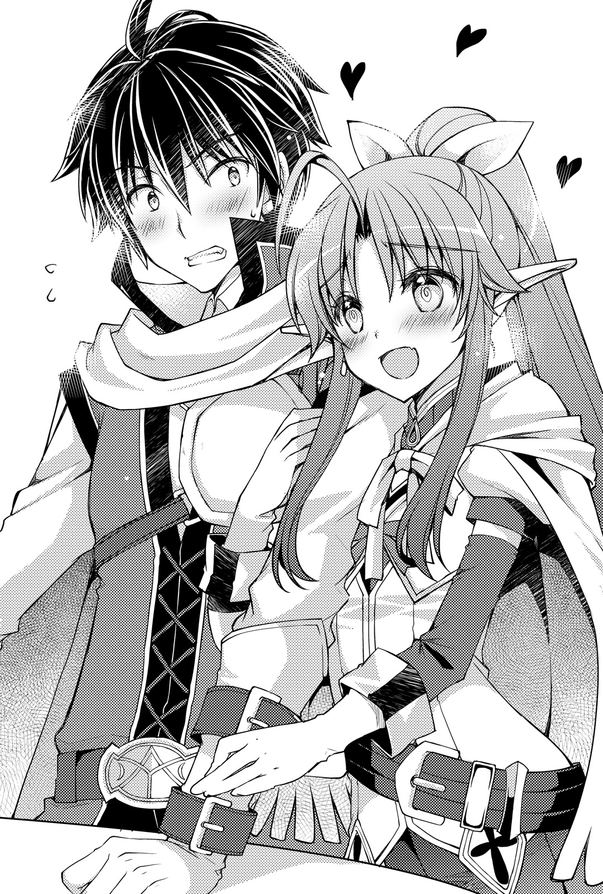
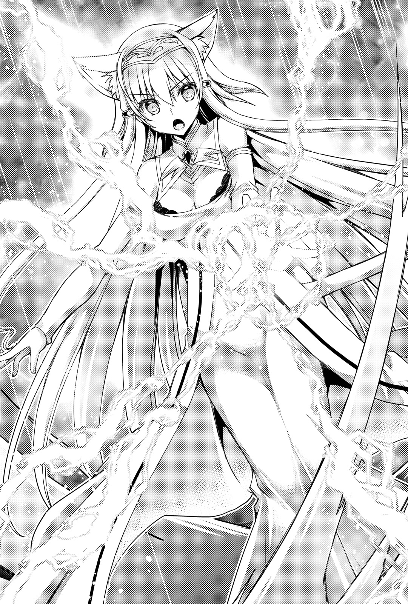

| 俺たちのクエスト２ ～クズカード無双で異世界成り上がり～ | |
| みかみてれん & 佐々木 あかね | |
俺たちのクエスト２
～クズカード無双で異世界成り上がり～
みかみてれん
本作品の全部または一部を無断で複製、転載、配信、送信したり、ホームページ上に転載したりすることを禁止します。また、本作品の内容を無断で改変、改ざん等を行うことも禁止します。
本作品購入時にご承諾いただいた規約により、有償・無償にかかわらず本作品を第三者に譲渡することはできません。
本作品を示すサムネイルなどのイメージ画像は、再ダウンロード時に予告なく変更される場合があります。
本作品の内容は、底本発行時の取材・執筆内容に基づきます。
本作品は縦書きでレイアウトされています。
また、ご覧になるリーディングシステムにより、表示の差が認められることがあります。
俺っち、マサムネ！ 少しカードが得意なだけの、平凡な男子高校生さ！
しかしドジったことに、猫を助けて車に轢かれちまったんだ。オー・ノー！
死んだはずだった。だけど目覚めたら女神がいて、「異世界を救え」だってー!?
そんなの無理だよ！ ま、でもいっちょやってみっか！
旅の仲間もたくさん増えた。
エルフの弓使いナルルース、手先の器用なシーフのジャック、そして魔法使いのキキレア。
忘れちゃいけねえ、俺をこの世界に導いてくれた女神ミエリもな！
数々の強敵を打ち倒し、パーティーの結束も高まってきた矢先、とんでもないことが起きようとしている。
チッキショウ、こうしちゃいられねえ！
待っていろよ！ 俺は魔典の賢者マサムネだ！ 困っている人は放っておけねえぜ！
ヘヘッ、俺っちの旅はまだまだ続くのさ！
こうして俺は持ち前の注意深さと行動力を駆使して、異世界で無双を始めた。
そして、ホープタウンを七羅将ギルドラドンの魔の手から救ったのさ！
というわけで。
「きゃーマサムネさまよ！」
「ええっ、あれが七羅将を討伐してこの町を救った、マサムネさま......？」
「なんて端整なお顔をしていらっしゃるの......」
「素敵、抱いて！」
最後だけは野太い声で聞こえてきた気がするが、気のせいだろう。
そう。
俺はモテていた。
昼下がり。いつもの寂れた冒険者ギルドの定位置ではなく、これ見よがしにオープンカフェのテラス席に座り紅茶を飲む俺を見て、女たちがキャーキャーと騒いでゆく。
フッ......。
しょうがないな、俺はこの町に住むあらゆる住民の命を救った、いわばヒーローなんだからな。
ああつらい、つらい。モテる男というのはつらいものだ。
若い学生らしき三人組の女の子がこちらに手を振ってきた。
俺は口元に爽やかな笑みを浮かべたまま、手を振り返す。
するとキャーという黄色い歓声が飛び出た。
奥ゆかしいお嬢さんたちだ。頼まれたらサインぐらいだったらしてやってもいいんだけどな。
カップを口元に運ぶ。するとそのときだ。
『異界の覇王よ──。其方のモテキに、新たなる力が覚醒めるであろう』
頭の中に謎の声が響いてきた。俺の力の覚醒だ。
ほう......。ほう？
なんだそのモテキに力が目覚めるって。どういうこと。
俺はこうやってことあるごとに特殊能力──『カードの力』を手に入れることができる。獲得条件は意味不明だ。
『其方のささやかなラリーは、その覇業によって叶えられるであろう』
カードは俺の『バインダ』の中に収まった。
カードを見やると、そこには【ラケット】と書いてある。
効果説明を見ると『丸いものを打ち返すことができる』と書いてあった。
完全にラケットだわ。
能力がアバウトすぎるだろう......。
こんな風に俺のバインダは屑カードがいっぱいだ。
上から順番に語ってみよう。
刃のないナマクラ刀を召喚する【マサムネ】。目を光らせて俺も眩しい【ピッカラ】。焼きたてのコッペパンを出す【パン】。相手の足元に落とし穴を作り出す【ホール】。可憐なタンポポを咲かせる【タンポポ】。なんだか語っていて空しくなってきた。
まだまだあるぞ。指から油をピュピュッと出す【オイル】。寝癖を直す【マシェーラ】。身体能力を強化する【ラッセル】。遠くの人と会話を交わす【ダイヤル】。対象の体に重力負荷をかける【ヘヴィ】。対象に回転と直進の効果を与える【スクリュー】。
それに基本カードの能力を強化する【レイズアップ】。基本カードの能力を組み合わせる【ダブル】。
そして先日、七羅将を倒して手に入った三枚のカードと、今入手した【ラケット】。以上が俺のカードのすべてだ。
半分以上が屑カードなんだが、俺はどうすればいいのだろう......。
【タンポポ】と【マシェーラ】でどうやって魔王を倒せと言うのだろうか。誰か手本を見せてくれないか？ 元トレーディングカードゲーム大会のチャンピオンの俺にも想像がつかないんだ......。
まあいい。俺はモテているんだ。
男の夢は、名声と金と女だと言う。
俺はギルドラドンを倒してこの町を救った英雄だ。
金はあんまりないが、まあ暮らしに困るほどでもない。おいしいハムも買えるし。
そして俺はモテている。女なんてより取り見取りだろう。
やばい。俺、無敵じゃないだろうか。
もう魔王なんていいんじゃないかな。このホープタウンで一生を終えよう。
俺は幸せだ。この世界にやってきて初めて、心からの幸せを手に入れていた。
再び女の子たちが通った。彼女たちは俺を見て、
「あっ、救世主さまよ！」
「ホントだ！ すっごくカッコいい！」
「オシャレなカフェでお茶しているなんて、イメージぴったりぃ～！」
などと明るく騒いでいた。
俺は口元を引き締めながら、古書堂で買ってきた『超魔法力学の情報平行応用専科』なる本をめくる。ほう、なるほど、これはなかなか......。
なにが書いてあるか微塵もわからねえ。
俺が眉間にシワを寄せていると、さっきのかわいらしい女の子たちが今度は囁くようにして顔を寄せ合っていた。
「わ、あれなんの本を読んでいるんだろ......」
「たぶんすっごく難しい本だよ。頭いいんだろうなあ」
「かっこいい......、インテリだなんて、イメージぴったりぃ～！」
だめだ。にやけるな、にやけるんじゃない。
ちくしょう、それにしてもこの本、本当になにが書いてあるかまったくわかんねえな......。超絶つまらねえ......。くそう、これも俺のイメージを保つためには必要な苦痛だと甘んじて受け入れようじゃないか......。
と、そのときだ。
俺はふと視線を感じて顔をあげた。
通りすがりの人が向けてくる好奇のものではない。
なんというかこう、じっとりとしているような、絡みつくような視線だ。
「......なんだ？」
俺が左右を見回すと、気配は消えた。
ふむ......。
有名人になったから、やっかみも混じっているのかもしれないな。
さすがにギルドラドンを倒した俺になにかしてくるとは思えないが、一応警戒はしておこう。
というわけで俺はオープンカフェを出て、冒険者ギルドに向かった。
俺が冒険者ギルドに顔を出すと、すぐに可憐な美少女がやってきた。
ちょっと近寄りがたいほどの美貌を持つ、ローブを着た魔法使いだ。赤髪を高い位置でツインテールにくくっている。勝ち気そうな紫色の瞳が俺を映し出した。
「って、なんだ、キキレアか」
こいつはキキレア・キキ。元雷魔法の使い手で、冒険者カードの更新をしていないから力が衰えた今でもＳ級冒険者のままだ。そして俺のパーティーメンバーのひとりである。
「やっほう、マサムネ。顔を出すのは久々じゃない？」
「そうだな、最近はオープンカフェでイメージ作りに余念がなかったからな」
「は？」
キキレアは目を丸くしていた。
それはともかく、店員さんに注文してから席につく。
するとキキレアはからかうように笑いながら、俺と同じテーブルに座った。
「久々に魔法の勉強する？」
「......いや、魔法はもういい」
一週間みっちりやったのに、結局なにひとつ身につかなかったからな。
指先から火を出すことすらできなかった。
「あんた本当に不思議なやつよね......。変な魔法ばっかり使えるのに、信仰魔法はなにひとつ使えないなんて」
俺にはこの世界の魔力を操ることはできないのだろう。そんな気がする。
キキレアは俺を安心させるように笑顔を作った。
「でも大丈夫よ、マサムネ！ 私は二十年かけてようやく手のひらから砂を撒く魔法を習得した偉大な魔導士を知っているわ！ あんたに根性があれば、できないことはないのよ！」
「やってられっか！」
二十年かけて手のひらから砂を出してどうする！
地面のを拾え！ 二秒で済む！
「大体、お前を二十年も付き合わせられるかよ。今回のお礼っていうので、タダで教えてもらっているんだしな」
「え？ う、うん、まあ、そうね。二十年も一緒にいるだなんて、な、長いわよね」
するとキキレアは顔を逸らして、もじもじと俯いた。
なんだこいつ。
そうか、俺があまりにも魔法の才能がないから、ずっとそばでバカにしていたいと思っていやがるのか......。
そんなに俺を見下すのが楽しいのか......。
悔しい。
「くそう、今に見ていろよ、キキレア......。絶対にお前に『申し訳ございませんでした！ マサムネさまには完敗です！ ははー！』って言わせてやるからな......」
「え、なになに、なんで私そんな暗い目で睨まれているの！」
運ばれてきたピザのような食べ物をかじっていると、キキレアが俺を指差す。
「でもあんたの持っている本、超魔法力学じゃない？ 懐かしいわねー、私も学校で習ったわ。ちゃんとひとりで勉強しているんじゃないの」
「いや、イメージ作りのためによくわかんないけど持ち歩いているだけだ。こういうのを読んでいるとカッコいいだろ？」
キキレアは難しい顔をしてこめかみを押さえた。
「......。あんたってひょっとして、バカ？」
「ヒーローにはイメージだって大事なんだよ！」
めちゃくちゃ大きなため息をつかれてしまった。遺憾だ。
「それで、ギルドに来たってことは、クエストでもいくの？」
「ん」
そういう予定はなかったんだけどな。
俺は果物のジュースをすすりながら、クエストボードを眺めた。
すると、ぞろぞろとやってくるやつらがいた。
「なになにー？ マサムネくん、クエストいくのー？」
「だったら腕の立つシーフが必要じゃないかい？」
緑髪をポニーテールにまとめているのがエルフのアーチャー、ナルルース。銀髪のシーフがジャックだ。ふたりとも俺とともに強敵を倒した仲間だ。昼飯時だからやってきたのか。
俺はきっぱりと手を突き出す。
「腕の立つシーフ『が』必要なんだよ」
「わかっている。つまり、そういうことだろ」
俺の顔を見て口角を吊り上げるジャック。
どういうことだよてめえ。耳を切り落とすぞ。
そこに、ナルの頭の上からぴょんと飛び降りて、走り寄ってくる白猫がいた。ミエリだ。
「にゃあ」
こいつは俺が飼っているなんの変哲もない白猫と思いきや、たまに人間体になったりする不可思議な生物だ。その正体は俺をこの世界に連れてきた転生と雷の女神ミエリだったりするのだが、最近は俺も忘れかけている。まあ猫はいいよな。猫かわいい。
そんな俺たちが四人（と一匹）集まったことによって、ギルドがざわざわとどよめく。
それもそうだろう。俺たちは魔族の将軍を倒した英雄たちだからな。
「あれが、ホープタウンの三馬鹿か......」
「ああ、『百発零中のナルルース』、それに『敵前逃亡のジャック』、そして『史上最弱のＳ級冒険者、キキレア』だ......」
「そいつらを束ねているのが、あの男か。なんてろくでもない顔をしているんだ」
「しかしあいつらを使ってギルドラドンを倒すとは、さすがは『馬鹿使いのマサムネ』だ......」
......。
俺は静かに立ち上がる。
周りを睨むと、連中は一斉に目を伏せた。
てめえら......。
キキレアは烈火のような目で叫ぶ。
「ていうか誰!? 私を史上最弱のＳ級冒険者とか言っているの誰!? 出てきなさいよお！ ぶっ殺してやるわああああ！」
「ま、待って！ 落ちついてキティー！ ギルド内でのケンカはご法度だから！ ね、ね！ いい子だからね！」
「離せ！ ナルルース！ 私は私をバカにしたやつを絶対に許せないわ！ その口を永遠に開けないように焼き尽くしてやるわ！ ざっけんなおらー！ 殺すぞおらー！ 離せえええええ！」
ジャックが俺の肩をぽんと叩いた。
「ま、言いたいやつには言わせておけばいいじゃないか。本当の実力を知っている者は少ないほうが気が楽さ」
「お前の本当の実力は『敵前逃亡のジャック』そのものだと思うが......」
ていうか、なんだ馬鹿使いって、馬鹿使いって。
使いたくて使っているんじゃねえ......。
くそ、俺は外ではモッテモテなんだぞ......。
冒険者ギルドの連中にも、思い知らせてやらねえとな！
俺はスタスタと歩いていくと、クエストボードに貼られていた一枚の紙を引っぺがした。
おおー......。とそれだけでどよめきが起きる。
そして俺は冒険者たちに見えるように、その紙を突き出す。
「見ろ！ コボルトリーダーの討伐依頼だ！ 俺はこいつを退治しにいく！ 報酬は霊銀貨二枚！ もちろん山分けだ！ 俺と一緒に来たい奴はいないか！ 俺の完璧な作戦を見せてやる！」
するとどいつもこいつも目を逸らした。
なんでだよ!!
「ゴルム！」
「い、いやあ......」
奥の方にいたオッサンを捕まえるが、しかしこいつも口をもがもがさせていやがる。
「お前の度胸はわかるけどさ、でも、そんなギリギリの戦いにはついていけねえよ。ギガントドラゴンに挑んだり、七羅将を倒したり......」
「なんだと!?」
俺は頭を殴られたような衝撃を覚えた。
「いや、見ろよ！ コボルトリーダーだぞ!? そんなに強くないだろ!? 普通に戦えば勝てるだろ!?」
「でもお前、普通に戦わねえじゃん」
「ウオオオオオオオアアアアアアアアア！」
俺はその場に突っ伏して、叫ぶ。
なんてことだ。
俺はいつの間にか、屑カードを有効活用することを考えるばかりで、一番大事な基礎をおろそかにしていたのか。
なんてことだ......！
そんな俺のもとに、三人の仲間たちが集った。
ナル、ジャック、そしてキキレアだ。
「......見返してやろうよ、マサムネくん！」
「そうさ、外からごちゃごちゃ言うやつらには言わせておけばいい」
「私をバカにしたやつを、土下座させてその後頭部を思いきり踏みつけてやるまで、前に進みましょう！」
お、お前たち......。
俺は目に涙を浮かべながら、三馬鹿を見上げた。
「お前たちさえまともなら、俺だって馬鹿使いだなんて言われなかったのに......。ちくしょう......。お前たちのせいなんだよ......ちくしょう......」
『えっ!?』
◇ ◆ ◇ ◆ ◇
コボルト族が出没するのは、徒歩で二時間かかる南の平原であった。
だだっ広いこの平原のどこかに、コボルトどもが群れを作っているらしい。
コボルト族は犬のような顔を持つ、半獣半人の亜人だ。
性質は臆病で怖がり。警戒心が強い。
馬車などが襲われることはないが、しかし平原の農作物がやられちまうらしい。
まあ、害獣みたいなもんだな。
ナルが拾った土を風に流して、なにかを確かめるようにうなずく。
「なるほど。風は北東から南南西へと緩く吹いているね。この風向きなら、大丈夫。調整できる」
「誰にアピールしているか知らんが、無駄にかっこつけるなよ、ナル。たとえ無風でも竜巻の中でもお前の弓は当たらないだろ」
「マサムネくんひどくない!?」
愕然とする彼女を置いて、俺は辺りを眺める。
コボルトリーダーか、どこにいやがるんだろうな。
俺の装備は新調されていた。
ギガントドラゴンの装備品が完成したのだ。
上半身にはポイントアーマーを、そして腰にはギガントドラゴンのドラゴンボーンソードをくくりつけている。
ベルトで固定しているからか、それともそういう素材だからか、ほとんど重みを感じない。
背中には頼りになるクロスボウを装着しているし、ずいぶんと冒険者らしい恰好になったものだ。
同じように仲間たちも装備だけは一丁前だ。
今回のナルはプレートアーマーではないけれど、全身にしっかりとした革鎧を身につけている。
その上、毅然とした顔で竜穿を背負っているのだから、見るからに強そうだ。
エルフだし、美少女だし、伝説級の装備を持っているし、外側は完璧なんだけどな、こいつ......。
「な、なんであたしを見てため息をつくの!? ねえ、ねえ!?」
「自分の貧しい胸に手を当てて聞いてみてくれ」
「わかんない！ あたしわかんないよ！ ていうか貧しい胸ってなに!? さっぱりわかんないんだけど！」
さて、次はジャック。
軽業師らしく、関節部の動きを制限しないよう部分部分で急所を守るような装備をつけていた。チェインアーマーかね。
そして腰には四本の短剣の鞘を差している。こいつも武器を新調したんだな。
「任せておくれ。影のように忍んで、影のように敵を倒してあげるよ」
「そして影のようにいなくなるんだろ」
俺が指摘すると、ジャックは押し黙った。
モンスターとの戦闘中に逃げ出さないシーフが雇いたいです。
そして最後にキキレアだ。
さすがというかなんというか、こいつだけは別次元の豪華な装備を持っている。
雷属性の攻撃魔法を強化する杖や、雷属性の魔法のダメージを増幅させるアミュレット。さらに雷属性の詠唱時間を短縮する指輪や、雷属性の命中率に補正を与えるローブなどだ。
「全部ゴミじゃねえか！」
「あんたいきなりなに言っちゃってんの!?」
涙目になりながら悲鳴をあげるキキレア。
「確かに、今は女神ミエリさまの加護がなくなって雷魔法が使えなくなったから、どこも雷属性の装備の価値は大暴落よ！ 二束三文よ！ 代わりに火魔法や水魔法の装備がすごく高騰しているけど！ けど！ これは私が駆け出しの頃にがんばってお金をためて買った大事なものだったり、必死に内職をして手に入れた指輪だったりするのよ!? ばかにしないでくれます!?」
「だったら大事におうちに飾っとけ！ あれほど火属性のロッドを買って持って来いって言っただろうが！」
「やーだーやーだー！ ランクが低い杖なんて装備したくなーいー！ 私はＳ級冒険者なんだもんー！」
「ランクの高い木の棒振り回して役に立つのか!? ああ!?」
しかし、改めて見たら、なんてひどいパーティーなんだ。
全員が自分の長所を完全に殺していやがる。
やたら攻撃力は高いのに防御しかできないカードだとか、死ぬほどコストが高いくせに使ったらコスト削減効果があるカードのようだ。
それ誰が使うの？ という感じだ。
ため息をついていると、慰めるようにミエリが俺の足をぽんぽんと叩く。
俺は冷たい目でミエリを見下ろした。
「獣は毒にも薬にもならん。無だ」
「 !?」
!?」
俺たちは手分けをしてコボルトを探すことにした。
前衛後衛のワンセットで分かれる。俺とナル。そしてジャックとキキレアだ。
キキレアには、ジャックを見張るように重々言い聞かせておいた。
あいつならまあ大丈夫だろう。執念深そうだしな、キキレア。
「いないねー」
「そうだな」
「にゃー」
ナルの頭の上に寝そべるミエリが気楽そうに鳴く。
俺はカードの【ダイヤル】を使い、キキレアたちと連絡を取り合っていた。
効果時間は三分しかないから、使い続けている間に、割とＭＰを消費しちまうな。
他の方法を考えればよかった。
「ねえねえ、マサムネくん」
「ん」
「あの、その」
見れば、ナルはわずかに俯いていた。
うなじから覗く首筋が、赤い。
「こないだは、ごめん、ね......」
「ん？」
こないだ......？
心当たりが多すぎてわからないよキミ。
「ギルドラドン戦のこと......。あたし、途中でふっとばされちゃったでしょ？ あのとき、すごくこわかったんだ。自分が傷つくことよりも、戻ってマサムネくんたちが死んじゃってたらどうしようって」
「ああ」
そういえばそんなこともあったな。
「俺は気にしていないさ、ナル」
「......そ、そう？」
「ああ。屑カードを配置したのは俺だ。お前は自分のステータスとスキル通りの働きをした。それで負けたのなら、俺の失策だ」
そう告げると、ナルは目を丸くした。
「......マサムネくんは、強いね」
「そうか？」
「うん、そんな風に考えられるなんて、すごいよ。マサムネくんは本当にすごいなあ......」
ナルのキラキラとした視線が、俺にそそがれる。
なんか、通りすがりの女学生にモテるのとは違うようなこそばゆさが、俺の背筋を駆けあがった。
俺は鼻の頭をかく。
「まあ、ナルのノーコンアローで死にそうな目に遭うよりは、よっぽどマシだったし......」
「そんな冗談まで言ってあたしを元気づけてくれようとするなんて、マサムネくんは優しいね」
「いやマジで。マジでマジで」
頰に手を当てて、はぁぁぁんと悶えるナルに、俺はパタパタと手を振る。
「と、そういえばそうだ。外に来たらやりたいことがあったんだよな」
そう、ギルドラドンから手に入れたカードの性能調査だ。
俺はこの手の中にバインダを呼び出す。これは俺の覇業という能力で作られたものであり、カードの効果を発動するためにバインダから引き抜くという手順が必要なのだ。
「わ、またマサムネくんの不思議な魔法？」
「うむ。......まあ、期待はしないでいてもらおうか」
俺はバインダの中に収まった新たな三枚のカードを見やる。まずはこいつからいこう。
「オンリーカード・オープン！ 【エッグ】！」
俺がカードを引き抜くと、その場にカメラのフラッシュを焚いたような閃光が走った。来い、俺の新たなる力──！
次の瞬間、地面には卵がごろんと出現した。でけえ。ダチョウの卵みたいだ。
「す、すごい！ マサムネくんが無から有を生み出したよ！」
まあ、卵を出す能力は、役に立ちそうではあるな......。【パン】と組み合わせたら、目玉焼きパンができそうだし......。
ナルが褒め称える中、俺は静かに卵を拾い上げる。
すると俺は気づいてしまった。
「え？ あ？」
適当な石で卵を割る。
中身は空っぽだった。
「殻じゃん！」
「すごいマサムネくん！ 中身が空ということと、殻しかないということをかけてうまいことを言ったんだね！」
「やめて」
ナルのキラキラ光線を浴びながら、俺はうめく。
なんだよ、殻召喚って......。
無理矢理でも有効利用する手段を考えてみよう。そうだ、【ダブル】のカードを組み合わせるというのはどうだろう。【ダブル・タンポポ＆エッグ】だ。
卵を割ると中から小さなタンポポが出てくるっていう寸法だ。これは女の子たちにウケるだろう。
「宴会芸かよ！」
俺は地面にバインダを叩きつける。ひとりボケツッコミを見て、ナルが「えっ!?」という顔をする。
いいんだ。屑カードを手に入れることには慣れている。次にいこう。
「オンリーカード・オープン！ 【エナジーボルト】」
どうせこれだって俺の想像の斜め上をいくようなとんでもない効果が現れるんだろう。
直後、俺の手のひらから紫色の魔力の塊のようなものが発射された。
それは地面に命中すると小さく爆発し、辺りの草を吹き飛ばす。
「......え？」
俺は目を見開いた。
......まっとうな、攻撃系カードだと......？
信じられない。そんな、まさか、想像の斜め上だ！
「すごい！ マサムネくん、魔法が使えるようになったんだね！ 修業の成果だね！」
ナルは手を叩いて俺を祝福していた。
う、うむ......。俺が一番信じられないな。
一番いいカードスリーブに入れて、大切に保存したい気分だ。
しかし恐らく魔力消費はこれまで以上に高いだろう。無駄撃ちはやめておこう。
そんなときである。
──遠方に黒い影が動いているのが見えた。
「ん......あれは......？」
「あっ、コボルトだね！」
俺よりずっと目のいいナルが断言する。
そうか、ようやく見つかったか。
これなら陽が落ちる前に帰れそうだな。
「オンリーカード・オープン。【ダイヤル】」
俺はキキレアたちに連絡を取ると、身を伏せた。
さて、カードの試し打ちもここまでだな。あとはふたりが戻ってくるのを待つだけだ、が。
......なんだ、コボルトたちがこちらに向かってくるぞ。
しかも、その移動速度はかなり速い。
「見つかったか！」
「わわわ」
コボルトたちは四足歩行になって、こっちへ一直線に向かってきている。
「なんだよ、コボルトは臆病な生き物じゃなかったのか！」
「リーダーがいるからだよ！ 迎え撃たないと！ 戦闘準備！」
「くそっ」
ナルは早速、弓を構えていた。
「先手必勝！」
四大至宝のひとつ、竜穿。かつて伝説の竜をぶっ殺したというその弓は、ナルの身長よりもさらにデカい。
ナルは弓をまるで地面に突き刺すようにして固定し、全身で弦を引く。
するとその瞬間、突如として破城槌のように巨大な矢が出現した。
モンスターを倒すというよりは、まるで建物を粉々に破壊するための武器のようだ。
そうして俺のとめる間もなく──、ナルは開幕に一撃をぶっ放す。
「乾坤一擲！ 一撃必殺！ 我が弓に貫けぬものなーし！」
「うおおおおおおおおお！」
その矢はありえない軌道を描いて、俺の足元に突き刺さる。
あと数十センチずれていたら、俺の体はバラバラになっていただろう。そんな威力だ。
爆風のような衝撃が弾け、俺はなすすべもなく地面を転がった。
「わああああごめんなさいいいいいいいいいいい！」
「てめえええええええ！」
「ぎゃふん！」
新品の装備を土だらけにして起き上がった俺は、ナルの頭を叩き落とす。
「いったいいつになったら真っすぐ飛ぶようになんだよ！ てめえの矢は！」
「つ、次は必ず！ あともうちょっとでなにかが摑めそうなの！ 日進月歩だよ！」
「その前に俺が死ぬわ！」
「ひぃん！」
再びナルの頭を叩く。ナルは涙目で俺を見上げている。
泣きたいのは俺のほうなんだが！
足元で猫がにゃあにゃあとわめいている。そうだコボルトだ。
見やれば、コボルトたちはこっちで巻き起こった爆発を見て、ビビっているようだ。しかし速度を緩めたのも一瞬のことで、再びこちらに突撃を仕掛けてきている。
くそう、だったらやってやろうじゃねえか。
ギルドラドンからゲットした三枚目の新カードだ。
「食らえ、オンリーカード・オープン！ 【ライメイン】！」
次の瞬間である。
ドォンという大地を揺るがすような巨大な音がして、空気がビリビリと震えた。
間近で炸裂した花火のようだ。腹まで響く衝撃に使った本人である俺まで身構えてしまう。
さすがに動転したコボルトたちは立ち止まり、音の主を捜していた。
だが、そんなものはない。
──この【ライメイン】は、ただ大きな音を発生させるだけのカードなのだ。
ギルドラドンが大声で町のガラスを割っていたように、それぐらいのことはできるかもしれないけれどな。
さすが七羅将。【エッグ】【エナジーボルト】【ライメイン】と、エッグ以外はそこそこ使えそうなカードじゃないか。
ま、これでコボルトどもの突撃は止まったな。
俺はすかさず次のカードを発動させる。
「【レイズアップ・ホール】！」
するとコボルトたちが立ちすくんでいるところに、ぽっかりと大きな穴が出現した。
そう、【ホール】のカードを【レイズアップ】で強化すると、広範囲にわたって大きな穴を作り出すことができるようになるのだ。
これでさらに時間が稼げたわけだ。
だが、──全身からぐったりと力が抜けてゆく。ＭＰの大量消費だ。
くそ、【レイズアップ】のコストは相変わらず重いな......。
続けざまに一撃をお見舞いしてやろうと思ったが、それは難しそうだ。
まあいい。あとはキキレアとジャックが来るのを待てば──。
と、そのとき穴の中から跳躍してくる影がひとつ。
周りのコボルトよりも一回り大きい。
リーダーか！
コボルトリーダーは四足でこちらに飛びかかってくる。
その凶暴な瞳は真っ赤に染まり、俺を捉えて離さない。
「くっ！」
俺はドラゴンボーンソードを抜こうとするが、しかしうまくいかない。
かっこつけて腰に差しているだけで、剣の修業なんてほとんどしていないからな！
手間取っている間に、コボルトリーダーは一瞬で距離をつめてきた。
「ふにゃああああ！」と猫ミエリが叫ぶ。
ピンチだってのはわかってんだよ！
そのとき、ナルが俺の目の前に飛び込んできた。
「マサムネくん、危ない！」
ナルは両手を広げてコボルトリーダーを食い止めようとしている。身を挺して俺をかばう気か。
「あ、あれっ!?」
だがコボルトリーダーは凄まじく俊敏な動きで、ナルの手をするりとすり抜けた。
やつの狙いは俺のようだ。
──胸に、コボルトリーダーの剣が叩きつけられる。
衝撃が走り、俺の体は後方に吹っ飛んだ。
「マサムネくん!?」
──っ、いてえな......。
鎧の上からだったのが助かった。斬撃はほとんど通っていない。
しかし、代わりに衝撃が大きかった。
息がつまる。
早く、次の手を打たないと。
そう思ったが、バインダは俺の手を離れて地面に転がっていた。
再びバインダを召喚すると、俺の一手は遅れた。
コボルトリーダーの動きは機敏だった。
すでに俺の眼前にまで、やってきている。
コボルトリーダーは俺めがけて、剣を振りおろそうとしていた。
なんだと。こんなところで、やられてしまうのか。
おいおい、噓だろう。
そのときだ。
「──ファイアーアロー！」
凛々しい声とともに、赤い光が俺の視界を染めた。
その直後、コボルトリーダーが苦しそうに悲鳴をあげる。
遠方から放たれた炎の矢がコボルトリーダーの背中を焼いていたのだ。
俺はコボルトリーダーの腹を思いきり蹴りつける。
距離が開いた。ここで俺はカードを使用する。
「オンリーカード・オープン！ 【エナジーボルト】！」
俺の指先から放たれた魔力の塊がコボルトリーダーに命中すると、その魔物の矮軀は後ろへと吹き飛んでいった。
そのさらに後ろから、ジャックやキキレアがこちらに向かって走ってくるのが見える。よし、トドメはやつらに任せようじゃないか。
ふう......。俺は大きく息をつく。
どうにかなんとかなったな。
「マサムネくんに、よくもー！」
俺はハッとして顔をあげる。ナルが竜穿を構えて、倒れているコボルトリーダーに狙いを定めていたのだ。
「ちょ、おま」
俺はナルに手を伸ばす。だがナルはとまらなかった。
「──乾坤一擲！ 一撃必殺ぅ！」
「ばかやめろ！ てめえ！ ポンコツアーチャー！」
ナルの放った矢は、俺の叫び声をかき消すようにして、俺の数センチ隣に突き刺さった。
すさまじい爆風と衝撃によってゴロゴロと転がりながら、俺はすぐに気を失ったのだった。
◇ ◆ ◇ ◆ ◇
俺たちはなんとか冒険者ギルドに帰ってきた。クエスト完了報告と、受け取った報酬金を山分けし、晩飯がてら冒険者ギルドのテーブルにつく。
前の席に座っているナルは、しょんぼりと肩を落としていた。
あの後、落とし穴に落ちたコボルトたちは、穴から這い上がると次々と転進して、逃げ出していったらしい。リーダーが倒されたからだろう。
「俺の人生で十本指に入るぐらい、ひどい目に遭ったぜ......」
「ううううごめんなさい......」
俺がため息をつくと、ナルはさらに小さくなる。
まったく......。
周囲の冒険者たちがコソコソとささやいている。
「なあ、なんであいついつもボロボロになって帰ってくるんだ......？」
「さあ......。そんなに恐ろしい敵だったのか、コボルトリーダーは......」
恐ろしいのは敵じゃなくて味方だよ。
ナルはぎゅっと拳を握る。
「コボルトリーダーをしっかりと捕まえていたら、マサムネくんが一太刀浴びせられることもなかったのに......、ごめんなさいぃ......」
「そこじゃねえよな!? えっ、それで怒っていると思ってたの!?」
「えっ？」
ナルは意外そうに顔をあげた。
こ、こいつ......。
「いいじゃないマサムネ。いつものことでしょ」
「お前はあの着弾を間近で見たことがないからそう言うんだ」
「キキレアくんの言う通りだよ。君はいくじがないな」
肩をすくめるジャック。お前こそ、こないだ矢が近くに刺さって気絶していただろうが......！
ナルは俯きながら指を絡ませる。
「あたし、このままじゃマサムネくんに捨てられちゃう～......。うう～......」
別に捨てたりしねえけどさ......。
でも、せめてもうちょっと当たる弓を担いでほしい。なんというか、装備レベルが足りてないんじゃないのか？ って感じだ。
「ったく」
俺は頭をかきながら席を立つ。
ナルが身を乗り出してきた。
「ど、どこいくのマサムネくん!? まさかあたしをエルフ捨て山に連れていくつもり!?」
なんだよエルフ捨て山って。
「い、いや、晩飯も食べたし、宿に帰るよ。きょうはみんなお疲れ。またな」
一同に手を振り、俺は冒険者ギルドを出た。
すると出たところで、どこかの店帰りとおぼしきウェイトレスの集団に出くわした。
「あら、黒髪黒目......ってことは、あなたが噂のマサムネさま？」
「ギルドラドンからこの町を救ってくださった方ね」
「まあ、こんなに若かったのね。どう？ これから一緒に飲みにいかない？」
年上のおねえさんたちは、上品に微笑みながら口々に俺を口説いてくる。
──唐突のモテ！
だが、俺はこんなときにも、うろたえない。
冷静で慎重な俺はこんなシチュエーションも完璧に想定していたからな。
俺は髪をかきあげながら、彼女たちに薄く微笑んだ。
「悪いな、レディ。俺はこの町の平和を守るため、常に鍛錬をしなければならないんだ。だがレディたちの応援は心に響いた。これからもよろしくな」
決まった。
彼女たちは急に頰を赤らめて、そわそわと髪や服装を整え始めた。
「そ、そう？ だ、だったらまた今度、お食事とかご一緒しない？」
「あっ、わ、わたしも。ねえ、ご迷惑にならないようにするわ。いいでしょう？」
「ちょ、ちょっとふたりとも......、急に......、ね、ねえ、マサムネさま、年上の女性は嫌い？」
「ははは。参ったな、俺の体はひとつしかないっていうのに」
俺は両手を軽く上げて、彼女らに笑いかける。
完璧だ。モテすぎて困っちゃうなもう。
実際は女性の手に触れるのが緊張し過ぎて無理だからとか、手汗びっしょりで取り繕っているのがバレちゃうからだとか、まあ色々と理由もあったりするのだが、それはこの際置いておこう。
なんといっても、俺はモテているのだからな！
──と。
ゾクッとした。またオープンカフェで浴びたあの視線だ。
いったいどこの誰が俺を狙っているんだ。おおかた、俺のモテ力を妬んでいる非モテだろう。
ん？
ちらっと冒険者ギルドから顔を出していたのは、見慣れた緑髪の少女。ナルだった。
......なんだ、あいつ？
ナルは小さく唇を動かす。
「マサムネくん、またモテてるぅ......。あたしが一番に、マサムネくんと知り合ったのにぃ......」
その声はかすかなはずだったのに、なぜか俺の耳には届いた。
......なんなんだ？
俺は頭をかき、レディに別れを告げて歩き出す。
視線の主は、ナルだったのか？ でも、なんで。
去りゆく俺の背中に、苦々しい声が届く。
「このままじゃだめだ、このままじゃ～......！」
◇ ◆ ◇ ◆ ◇
いやあしかし、昨日はひどい目に遭ったな。やっぱりしばらく冒険はやめておこう。
コボルトリーダーなんかに死の危険を覚えるんだ。冒険者って本当に割に合わない商売だよなー。
そんなことを思いながら翌日、オープンカフェで将来設計を立てている最中だった。
「まっさむっねく～ん♪」
すらりと伸びた美麗な生足が目に入って、俺は書物から顔をあげた。
ミニスカートをフリフリ揺らしながら、竜穿を背負ったナルが満面の笑みで俺の前にいた。
......え？
なんか、昨日別れたときとは、だいぶ態度が違うな......。
彼女は躰をモジモジとさせながら、隣の席に腰を下ろす。
「ねえねえマサムネくん、マサムネくん。は～ん、本物のマサムネくんだー。ああマサムネくんに会えるなんてきょうはいい日だなあ、ねー、ねー♪」
「お、おう」
なんだこいつ......。
俺の左腕をぎゅっと摑んで、そのまま自分の胸元に押しつけるようにして抱き締めてくる。
ナルはとびっきりの貧乳エルフだから、感触はまったくないが......。
手のひらをその細い指でずっとこちょこちょされているため、とにかくこそばゆい。
あとめっちゃ甘くていい匂いする。エルフの匂いだろうか。
俺は全力で怪しみながら問う。
「......な、ナル、お前どうしたんだ？ なんか、変だぞ」
「えっ、あっ、やだなあマサムネくん。あたしはなんでもないよ♪ いつもの地味で平凡で弓を射るだけが取り柄のナルルース・ローレルだよ♪」
「あ、はい」
やばい。とっさのことでツッコミも口にできなかった。
ナルは俺の胸元を指でつんつんとつつく。
そのままぐりぐりと鎖骨を撫でまわしてくる。くすぐったい。
「ね、マサムネくぅん......今は、ふたりっきり、だよね？」

「お、おう」
甘えるような鼻にかかった声で、俺を上目遣いに見つめてくる。
どうしよう。思いきり頭をブン殴ってみるべきだろうか。元に戻るか？ 逆に故障したらどうしよう。そのときはエルフ捨て山の出番か。
俺が迷っていると、ナルはポシェットから水筒を取り出してキュポッとフタをあける。
「ね、ね、喉渇いてない!?」
「......は？ 注文した紅茶があるから別に」
「ね、渇いているよね、ね、ね！ わー、ちょうどよかったー、あたし今とってもおいしいジュース持っているんだやったねー！」
ナルは強引に話を進めると、フタにその液体をそそいで差し出してきた。
毒々しい色だし、なんか泡立っているし、変な臭いするし......。
「ね、ね、ね、ほら、飲んで、ね、いっきに、いっきに、ね、ね！」
ナルの目がぐるぐると回っている。
なんだか知らないが、やばい予感しかしない。
なんだなんだ。
俺になにを飲ませようとしてやがるんだ、こいつ......。
「な、なあ、これ、なんか変な臭いするんだけど......」
「良薬は口に苦しって言うでしょ！ 大丈夫！ 心配無用！ 言語道断！ へーきへーき！ とぉってもいい気分になれるんだから！」
別にそんな気分になりたくない......。
しかも飲ませるにしても計画が雑すぎるだろ......。
なんなんだ。ナルに殺されるほど恨みを買った覚えはないんだが。
「よ、よかったらナルが先に飲んでくれよ。別にお前を信じていないわけじゃないんだが、ちょっと不安でさ。ほ、ほら、見たことない飲み物だろ？ な？」
「えっ──」
その瞬間、ナルの頰がぽっと赤く染まる。ふわりと緑色の髪が広がった。
こいつはぷるぷると震えながら、手元の液体に視線を落とす。
「あ、あ、あ、あ、あたしがこれを......？」
「お、おう」
「そ、そんなっ、だめだよマサムネくん！ あたしがこれ飲んだら、これ以上飲んだら、だって！ 絶対ヘンになっちゃうもん！ ムリだよぉ！ これ以上ごにょごにょしちゃったらトンじゃうもん！ おかしくなっちゃうよお！」
「てめえは俺になにを飲ませようとしてやがったんだああああああああ！」
「やあああああああああああああああああああああ！」
俺はナルの口にその液体を無理やり突っ込む。
ったく、油断も隙もねえやつだ。
「ああああああああああ」
口の端からぼだぼだと液体を垂らしながら、ナルはその場に突っ伏していた。
エルフの濡れた瞳が、俺を捉える。
「ううううう、マサムネくんのぉ、マサムネくんのせいだからねぇ～～～～............」
「ざっけんな！ 五百パーセントてめえのせいだろ！」
「マサムネくんが悪いんだからあああああああああ！」
がばっと立ち上がったナルの顔は真っ赤だった。
「あたしのことだけ見てくれないから！ あたしのことだけ考えてくれないから！ あたしはこんなにマサムネくんのこと想っているのにぃ～～～！」
「えっ」
ナルの言葉にドキッとしてしまった。
こ、こんな公衆の面前でなにを言い出すんだよお前。
童貞の十七歳には刺激が強いぞ。
ひょっとして入っていた液体は酒かなにかだったのだろうか、などと思った次の瞬間だった。
「──」
ナルが俺の視界から消え失せる。
後ろに回り込まれたのだと気づいたときには、もう遅かった。
「──おま」
凄まじい衝撃が首筋に叩き込まれて──。
──俺の意識は闇に落ちた。
──目覚めたのは、暗闇であった。
いや、うすぼんやりと蠟燭の火が揺れている。
どこだろう、ここは。
俺は【ピッカラ】を使おうと思ったが、しかし腕が動かないことに気づいて諦めた。
誰かが見ている気配を感じる。
穏やかじゃないな。
なんなんだいったい。
目を凝らすと──。
そこにぬっと姿を現したのは、ランプを手に持ったナルだった。
「うおう！」
びっくりした。ナルはラフなタンクトップとミニスカートを着ている。部屋着だ。
彼女は壊れた歯車のようにニコニコと微笑みながら、俺を見下ろしている。
「お、おい、ナル。なんだお前、なにやってんだおい、ここはいったい!? って、なんだこれ!? 手錠!?」
俺は地下牢のような場所のベッドの上に、大の字になって寝かされていた。
両手両足には手錠がかけられていて、びくとも動かない。
「えーへへへへへへー♪」
笑うナル。口角があがっていて、目は線のように細められており、妙に嬉しそうな笑顔であった。
なんだろう......。状況が状況だからか、異常な迫力を感じる......。
こわい。
い、いや。こいつはただのナルだ。惑わされるんじゃない俺。
そうだ、いきなり首筋に手刀を叩き込まれてこんなところに拉致されたんだ。俺は怒っていいだろう。そうだ、俺は怒るべきだ！
「おい、ふざけんな、ナル！ なんで俺がベッドに縛りつけられてんだよ！ 今すぐこれを外さないと容赦しねえぞ！ おいナル！ こら！ ノーコンアーチャー！」
「だーめ♪」
ナルの人差し指が俺の唇の上に乗せられる。
その笑顔には食虫植物のような毒があった。
お前はそんな顔をするような娘じゃないだろうナル......！
そうか、さてはあの液体か。
あそこに謎の成分が入っていたのか──！
「えへへへえ、マサムネくんが悪いんだからねぇ......。勝手にモテモテになったり、かわいいからってキティーを拾ったり......。あたしがこんなにマサムネくんのことを想っているのにぃ......」
ナルはオープンカフェで俺を襲う前に言ったようなことを、また繰り返してきた。
それだけではない。大の字になって寝そべる俺にしなだれかかってきたのだ！
「お、おい、てめえ......、おい......！」
やばい、俺の語気がどんどんと弱まってゆく。
だってナルの柔らかな胸の感触とか......、いや、胸はほとんど感触がないが、手のひらとか、生足だとかが、俺の体の上に......。
脳髄がとろけるような感覚であった。
こいつ、こんなに色っぽかったのか......？
って、惑わされている場合じゃない！
「いいから手錠を外せ。な？ な？ 今なら悪いようにはしない。百叩きで勘弁してやるから、な？ ほら、ナル、いい子だから」
「やぁだぁ」
「嫌だと!?」
ナルの白い指先が俺の胸元を撫でる。
それはそのまま、ゆーっくりと俺の胸を下ってゆき......。
ちょ、ばか、やめろ！ どこまでいくつもりだ！
「ええい、ナル！ 俺の言うことを聞け！」
「マサムネくんだってあたしの言うこと聞いてくれないじゃん！ でもそんなところも好き！ 好き！ 大好き！」
「さっきからお前の目に光がねえんだよ！」
こええんだよ......。
くそ、いいじゃねえか、この野郎。
だったら実力行使だ。
「来い、バインダ──」
と、俺は動かない手でなんとかバインダを呼び出す、が。
──それをナルにひょいと奪われてしまった！
「ああっ、貴様！」
「もう何度も何度もマサムネくんの力、近くで見ているんだよ？ あたしはマサムネくんのこと、なんでも知っているんだからぁ......」
「だったらこれもかよ！」
ナルの手の中のバインダが消えて、再び俺の手の中に収まった。
呼べば何度だって来るんだよ、このバインダはな。
さて、お仕置きの時間だぜ──。
俺が片手でバインダをめくった直後。
──今度は、ナルに手のひらをすっぽり覆うような枷をはめられる。
レイピアのナックルガードのようなものだ。
......用意がいいな、こいつ。
「だーめ♪」
カードを使うためには、手のひらに持たなければならない。
うむ。
......うむ。
ナルは満面の笑みで、俺の腰の上にはしたなくべたんとのしかかってきた。
女の子の体重がもろにかかってきて、体温が伝わってくる。
やばい。この体勢、この体勢は......、ぱんつが見えてしまうぞ、ナル......！
だが、辺りを照らすのはランプの薄明かりしかないため、ミニスカートの中身はいまだに暗闇に包まれている！
【ピッカラ】を、【ピッカラ】を使わせてくれ！
くそう！ バインダ！ バインダ！ ちくしょう！
「......マサムネくん、どうしても逃げたいんだね......？ でも、だ・め」
ナルは体を俺に向かって倒してきた。尻を高く上げ、顔を近づけてくる。ああっ、ぱんつが見えなくなった！ くそう！
でもこれはこれで！ 鎖骨から胸へのラインがエロかわいい！
ナルは細い指で、俺の頰をもてあそぶように撫でてくる。
「ねえ、マサムネくん......♪ 大丈夫だよ、あたしがずっとずっとマサムネくんのそばにいるからね......。ね、ふたりで幸せになろ......？ ねえ？」
くたりと寄りかかってきたナルは、俺の耳をはむはむと甘嚙みする。
うああああああああああ！
耳にぬらりとしたナルの舌の感触が！ 吐息が当たる！ 背筋に電撃が走る！ こそばゆいぞおおおおお！
なんなんだこいつ、エロすぎるだろ！
やめろ！ 俺の頭がおかしくなる！ 殺す気か！
俺は必死に冷静を保つ。こんなところで誘拐犯に屈してたまるか！ 俺は俺のプライドを守る......！ こんなドスケベエルフに、絶対に負けたりしない！
目を閉じて、俺は邪念を追い払うようにゴルムの顔を思い出す。そうだ、今俺の耳をはむはむしているのはあのオッサンなのだ。やばい、吐きそうだ。
思わず目を開く。すると眼前にナルの顔があった。
「えへへ......♥」
緑髪のエルフは口元に髪の一房を咥えながら、蠱惑的に微笑んでいた。
俺の心臓の鼓動が高鳴る。だめだ、やっぱりゴルムじゃなかった！
リトルマサムネが思わず立ち上がりそうになるのを、俺は必死にこらえる。俺の体は自由にできても、心までは譲らないぞ......！
くそ、くそっ......。ナルのくせに......っ！
──こうしてきょうから、俺の監禁生活が始まった。
監禁生活二日目。
ここはもう使われなくなった独房らしい。
手狭な部屋にはベッドが置かれ、隅っこにトイレもある。それ以外の設備は皆無だ。
食事はナルが運んできてくれて、俺にあーんをする。
最初こそ抵抗をしていた俺だったが、意地を張ったところで意味がないと気づいてしまった。
腹は減るし、ナルは俺に危害を加えるつもりはなさそうだし......。
まあ、俺とナルがいなくなったと気づいたら、誰かが捜しに来てくれるだろう。たぶん、きっと......。そうだといいな......。
ということで、なんかもう俺は達観していた。
どうせ身動き取れないし......。
「ナル、味付けはもうちょっと濃いほうがいいな」
「はぁい♪」
ナルは献身的に尽くしてくれている。
なんか、考えるのも疲れてきた。
もしかしたら俺の冒険はここで終わってしまうのかもしれない。
監禁生活三日目。
「ううううううううううう......」
ナルは牢屋の隅っこで頭を抱えていた。
なんでも、クスリが切れたらしい。あの紫色の液体か......。
「いったいなんだったんだよ、ナル」
俺は手首をさすりながら、ベッドサイドに腰かけていた。正気に戻ったナルが俺を解放してくれたのだ。
丸一日以上拘束されていたため、体が自分のものではないようにふわふわしていやがる。
ナルはぐすぐすと洟をすすりながら、こちらを見た。
「あのぉー......実はぁ......」
その目は涙に濡れている。
「エルフには、代々惚れ薬の作り方が、伝わっているんだよね......」
「ほう」
エルフと惚れ薬とか、あんまり接点ないような気がするんだが。
怪訝そうな俺を見て、ナルは言葉を付け加える。
「エルフってほら、長命な種族でしょ......？ 動物みたいな繁殖期とかないんだよね。あんまり増えすぎても、森の獣がいなくなっちゃうし......。だから、そのときになったら、おクスリを飲んで子供を産む準備をするの......。そのとき用の、おクスリ......」
「はあ」
惚れ薬というか、媚薬みたいだな。
ナルは牢屋の冷たい床に正座して、顔を真っ赤にしながらうつむいていた。
ようやく普段のナルが戻ってきたようだ。恥じらいと慎みの心を持つナルだ。
「......うう、あたしどうかしていたんだよお......。まさかマサムネくんに、あんなの飲ませようとしちゃうなんて......。人の心をクスリでどうにかしようだなんて、あたしが間違っていたんだ......。うううう......」
「まあ結局お前が飲んじまったけどな」
「うううううううう......」
これ以上ないほど恐縮したナルは、こちらを上目遣いに窺う。
「......怒っている、よね？」
「んー、まあ」
怒っていると言えば怒っているのだが......。
それよりも、もっと気になることがある。
問題はナルの動機だ。
彼女がなぜ俺にそんなものを飲ませようとしたのか、それが大事なところだ。
「なあ、ナル。お前は誰が相手でもその薬を飲ませようとしたのか？ 例えばジャックとかでも」
「──そ、そんなのありえないよ！ 言語道断だよ！」
ナルは俺の言葉をさえぎって怒鳴った。
直後、ハッと気づいて頰を押さえる。
慌てて顔を逸らしたナルの耳は、赤かった。
「ま、マサムネくんが、どこか遠くにいっちゃう気がして......」
「え？」
俺が聞き返すと、ナルは正座したままスカートをぎゅっと押さえる。
「あのね。あたし森で育って、ずっと武芸の修業ばっかりの毎日だったんだ」
そうして、なにかを語り出した。
「物心ついたときから、剣、斧、槍、短剣、棒、杖、いろんな武器の使い方を教えられていて、毎日生傷が絶えなかったんだよ。でもそのうち自分がなんのために強くならなきゃいけないのかわからなくなっちゃって。竜穿と出会ったのはそんなときだったんだ」
肝心なことには答えず、突然のナル物語だ。
いったいなにが始まるんだ。
「あたしはいろんな英雄譚とか、伝説とか、そういうのが好きになって......、いつか、あたしの仕えるべき勇者さまが現れるんだって、思っていた。この力をいつかその人のために役立てよう、って」
「......ん、勇者じゃなくて悪かったな」
俺がそうつぶやくと、ナルは力強く首を振った。
「ううん、マサムネくんはすごいよ。だってあんなに強い七羅将を倒して、絶対に無理だと思ったのにホープタウンを救ってみせた。だからね、あたし幸せなんだ。マサムネくんと一緒にいられて、幸せだよ。マサムネくんはすごいもん。まるで、夢みたい」
正座のままぺたぺたと這ってやってきたナルは、俺を上目遣いに見上げた。
いつものように軽い調子で言っているのかと思えば、耳までも真っ赤に染まっている。
その顔を見た俺まで、なんだかドキッとしてしまう。
「あはは......なんか、変なこと言って、ごめんね。あたしみたいな弓を射るだけが取り柄のがさつなエルフにこんなことを言われても、嬉しくないよね......」
ものすごいツッコミを入れたいところだったが、俺は顔を背ける。
「い、いや......そんなことはないぞ。お前に褒められるのは、なんか、くすぐったい気分になる」
なぜだろう。妙に動悸が激しい。
常に冷静で慎重な俺が、なぜこんな状態に......!?
「マサムネくん......」
ナルにそう名前を呼ばれただけで、俺の鼓動はさらに跳ね上がった。
だらだらと背筋を汗が伝う。
俺から言葉をかけようと思いながらも、なぜだかやたらと口が重い。まさか緊張しているのか？ この俺が？
バカな、オンリー・キングダムの大会決勝戦でも緊張などしなかった。それをこんな小娘ひとり相手にバカな......。
ナルと目が合う。その濡れた眼差しに、思わず生唾を飲み込んでしまった。
え、ちょっと待って。
そうだ、事態を整理しよう。
俺は冷静で慎重な男マサムネ。ここで焦ってナルを押し倒すような真似は決してしない。
そう、確かに俺を拉致したときのナルは積極的だったし、俺に向かって『好き！ 大好き！』だのたわごとをはいたりしていた。だが、それはあくまでもナルが媚薬を飲んでいたからであって......。
って、まさか。
──その瞬間、俺は凄まじい可能性に気づき、目を見開いた。
まさか、この女──。
本当に、俺のことが好きなのか......!?
俺の頭の中に鐘が鳴り響く。
現実世界ではまるで女性と縁がなかったこの俺に、十六歳の美少女エルフが惚れているだと......？ マジか？ そんなことがありえるのか？
いや、確かに俺はこの町を救った英雄だ。ありえない話ではないのか......!?
しかし俺は今までナルに比較的、冷たく当たってきたぞ。冷静に考えて、俺みたいな人間を好きになるやつがいるのか？ 俺だったら間違いなく俺を好きにはならないぞ。
やばい。今まで女の子に好きになってもらった経験がまるでないからわからない！
判断材料が足りないから、判断のしようがない！
か、確認だ！ 事実確認をするんだ！
「な、ナル！」
上ずった声が出た。
ナルもまたびっくりしたように目を丸くする。
「は、はい......？」
俺はナルを人差し指で差す。
「お前は、俺のことが好きなのか!?」
すごい大胆なことを聞いてしまった。
言ったあとに後悔する。
後悔がめちゃくちゃ押し寄せてきたぞ。
『え、なに言っているの？ 自意識過剰だよ。キモッ』と笑うナルの声が幻聴として聞こえてくる。
俺がナルに聞いた言葉は噂として町中に広まり、『ああ、あれが自意識過剰な......』とか『おれのことがすきなのか？ キリッ。ですってー！ ウケるー！』とか後ろ指差されることになるのだきっと。モテキさようなら。俺は生涯独身で生きます。
落ち込んできた。
どよーんとした黒い影を背負う俺に、ナルは言った。
「......うん、好き」
──ッ!?
俺はバッと顔をあげる。
ナルはまっすぐに俺を見つめていた。
「あたしは、マサムネくんのことが、好き......。友達としてじゃなくて、パーティーメンバーとしてじゃなくて......、ひとりの男の子として、あたしの運命の人だと思って、います」
牢屋で正座しながら俺を見上げるナルは今、世界で一番綺麗な女の子に思えた。
マジか。
マジかー......。
なんだこの超展開。やばい、頭の中がいっぱいで語彙がぶっ壊れた。やばいとマジか以外の言葉が出てこない。やばい。
つか、えー、マジで......？ ナル、俺のことが好きなのか......。
やばい、マジかー......。
俺は生まれて初めて女の子から告白をされた。
アーチャーとしての資質はともかく、顔だけ見ればナルは絶世の美少女だ。
なんでこんなかわいい子が、俺に惚れているんだろう......。
異世界七不思議である。
なんかビックリしすぎて冷静に戻ってしまった。
ふう、冷静だ。俺はいつもの俺に戻った。
そうか、告白されたときってこういう気分なんだな。
心がぽかぽかして、俺がここにいる意味を全肯定してもらえたというか、なんだかいい気分だな......。
と、そんなことを思っていると、だ。
「......」
「っ!?」
ナルが静かに目をつむった！
意味深に。俺を仰ぎ見るような体勢のまま、そっと目を閉じて唇を突き出している！
ドッと汗が噴き出した。これはいったい。
いや、知っている。わかっているさ。俺は冷静で慎重すぎる男マサムネ。ナルの態度がどういう意味を表すのかは十分わかっている。
この女、俺にキスされたがってやがる......！
俺の心は再びパニックに襲われた。
あとは俺次第だ。衝動的ではなく、じっくりと考えよう。恐らくチャンスはそう長くはない。
ナルはいい匂いを漂わせながら、俺を信じているかのように目を閉じて、その身を近づけてくる。彼女の信頼にぜひとも応えたい気持ちは噓ではないのだが、しかし俺は慎重だからな、うん、慎重慎重。はー、慎重ってつらい。
たとえばそうだ。もし今ここにいるナルが魔王軍に操られていて、キスをすることによって俺の命を吸い取ろうとしているのだとしたら──!?
そう、可能性はゼロではない。危ない、危ないところだった。俺はとんでもないミスをしてしまうところだった。
あー危ないなー！ 危ないところだったー！
俺は額の汗を拭った。
──そうしていると、だ。
あまりにもまごついていたからかナルが俺の胸元からすっと離れた。彼女は気まずそうに微妙な微笑みを浮かべる。
「えへへ......、なんか、急にごめんね、マサムネくん」
「あっ......、い、いや、別に」
「こういうの......、もしかしたら、嫌だったかな？ そうだよね、あたしなんて、ただのスーパーアーチャーだもんね」
そこだけは明確に否定をしたかったのだが、そうすると話がこじれそうなのでやめた。
ともあれ、ナルは立ち上がった。そうして牢屋の鍵をガチャリと開く。
「......あたしの気持ち、知っていてほしかったの。ありがとうね、マサムネくん」
「あ、はい......ま、また」
俺は「へへ」という笑みを浮かべながら、牢を出た。
ナルはその場にうずくまったまま、追ってはこなかった。
階段をのぼって外に出ると、辺りは夜だった。周囲にはなにもない。空き地である。
どうやら町はずれのようだ。振り向けばそれは小屋だった。地下へと続く階段を守るように、ぽつねんと建っている。
俺は星の輝く空を見上げながら、思った。
──もったいないことをしたんじゃないだろうか。
そう、俺は衝動的に動かなかったことを、人生で初めて後悔した。
あとでどんな面倒くさいことになろうとも──というか、そもそも相手があのナルの時点で確実に面倒くさいことになるだろうが──そんなの構わずにやっちまえばよかった。
十七歳の男の肉欲を俺の理性は凌駕したのだ。鍛え抜いた理性は強すぎた。後先とかそういうのすごい考えてしまった。俺は肉欲に勝利した。
だがそれはなにも得られない、空しい勝利だった！
「ああああああああ、俺は、俺はあああああああああああ！」
強くなりすぎてしまったことを、まさかこんなにも悔やむ日が来ようとは。
慎重すぎるがゆえに、俺はこれから先も色々なチャンスを潰してしまうような気がしていた。
頭を抱えながら苦しむ俺の慟哭は、誰にも聞こえることなくひっそりと薄暗闇に溶けて消えていったのだった......。
二日ぶりに宿に帰った俺を待っていたのは、部屋で寝こける白猫の姿だった。
「......」
ベッドを占領してむにゃむにゃと寝息を立てる白猫を、俺はげしっと蹴り転がした。「ふにゃ!?」と抗議の声をあげてくる白猫に構わず、ベッドに倒れ込む。
「はぁ............」
深い深いため息がこぼれた。
目を閉じると、ナルの笑顔がまぶたの裏に浮かぶ。
こちらに唇を突き出しているナルの、その色っぽい表情も。
なぜ俺はあそこでキスをしなかったのか。
いや、理由はわかっている。
俺はこれからのことを考えてしまったのだ。
確かにナルは美少女だ。顔もスタイルもいいし、多少胸はないが、性格もいい。
──だが、ここで俺が相手をひとりに決めてもいいものかと悩んでしまった。
なんたって異世界にやってきたんだ。夢は膨らむじゃないか！
ハーレムとか！ 奴隷を買ったりとか！ そういうワクワクがこれからあるかもしれないっていうのに、今ナルを選んでいいのか！ いいわけがない！
俺は慎重なんだ。この先、ナルとまったく同じようなポテンシャルを持って、なおかつ弓の扱いが人並みにうまいアーチャーと出会う可能性があるかもしれない。
そいつは俺に媚薬を飲ませようとしたり、俺を監禁したりしないかもしれない！
そう思うと、なかなか一歩を踏み出すことができなかった。
しかし、同時に胸が痛くなるような気持ちもあった。
悲しそうに笑うナルに、なぜなにも言ってやれなかったのか。
あれじゃ冷静でも慎重でもない。ただのチキンじゃないか！
くっそう！
「あああああああああああああああああああああ！」
俺は枕に顔を押しつけたまま手足をジタバタさせた。
もう一度、もう一度やり直させてほしい！ せめてキスはできなくても男としてもっとなんかやりようがあっただろうマサムネ！ なあ！
そのときである。俺の頭上から光が降り注いできた。
これは、新たなるカードの獲得だ。
『異界の覇王よ──。其方の後悔に、新たなる力が覚醒めるであろう』
後悔によって目覚める力か。どうせロクなもんじゃないんだろう。
『其方のささやかな効果音は、その覇業によって叶えられるであろう』
ささやかな効果音ってなんだ......？
バインダの中に入ったカードの名は【ファンファ】だ。嫌な予感しかしない。
俺はその場でカードを使用した。すると──。
辺りに『ぱっぱらぱっぱっぱー！』と激しい金管楽器の明るい音色が響いた。すげえうるさい。しかし、心が高揚するような、思わず嬉しくなってくるようなファンファーレだ。
ああ、なんていい音色なんだ。
俺の心も晴れてゆくようだ──。
「──ってなるかボケえええええええ！ 空気読めえええええええええええ！」
夜中に騒ぐ俺に、足元から「にゃあ！」という怒鳴り声が聞こえてきた。
◇ ◆ ◇ ◆ ◇
翌日、俺はホープタウンの正門前にいた。
壁に寄りかかって待つ俺の前を、ひとりの少女が通り過ぎようとする。
バカデカい弓を担いでいるから、どこにいたって目立つんだよな、こいつ。
目が合った。
「あ、あれ......？ マサムネ、くん？ どうしたの、こんなところで」
俺は顔を背けながら、つぶやく。
「......この町を出るつもりなんだろ？」
「そ、それは......」
ナルは視線を揺らす。
やれやれ、予感は的中したか。
バカなやつだ。
「その前に、お前に言いたいことがあってさ」
ナルは俺の前に立って、不安そうな顔をしていた。
そんな彼女はなんでもない風を装っているが、キスをしてもらえなかったのがショックなようだ。普段の表情に陰りが差している。
俺が正門前で張っていたのは、もしかしたらナルはこのまま町を出ていくつもりなのかもしれない、って思ったからだ。
俺が気まずいんだ。ナルだって気まずいだろう。
勢いで告白したけれど、撃沈してしまった。そんなときに人間は旅に出たくなるだろう。俺は詳しいんだ。テレビＣＭでやってたからな。
「あのな」
「うん」
一方俺は、目の下にクマがあった。
彼女に話すことを、一晩中考えていたのだ。
さて、どうするか......。
いや、言うべきことは決まっているんだよな。
俺が黙ったままでいると、ナルは顔色を窺うようにこちらを上目遣いで見上げてきた。
「............ねえ、マサムネくん、やっぱり迷惑かな？」
その瞳には、ほんのりと涙が浮かんでいる。
なぜそうなる。
「いや、そういうわけじゃ」
「でも、なんにも、してくれなかったし......。だったらあたしはもう、この町にとどまる理由なんて......」
ナルは胸に手を当てたままうつむいた。
「こんな弓を射ることが誰よりも上手なだけのエルフ、別にどうでもいいんだよね......」
俺はその思い上がりを明確に否定したかったのだが、ここでツッコミをすると話がこじれそうな気がしたので素肌に爪を食いこませて必死に耐えた。
「待て、ナル。お前はなにか思い違いをしている」
「......思い違い？」
「ああ」
俺は彼女の顔を見ずに、一息に答える。
「いいか、ナル。お前は俺の大切な仲間だ。そんな仲間に好意を向けてもらえるのは非常に嬉しいことだと思っている。本当だ。だが俺はまだお前に対する感情を自分で理解できていないのだ。お前は大事なパーティーメンバーだが、異性としてお前を見たことは今までなかったからな。だから、俺の気持ちが落ちつくまでもう少し待っていてほしい。......というのは、どうだ？」
これが一晩中考えた、俺の答えだ。
俺が押し黙っていると、ナルが小さくうなずく気配がした。
「......うん、わかった、マサムネくん」
どういう表情をしているのか気になる。気になるのだが......！
「まるで台本をあらかじめ用意していたかのようなよどみない言葉で、ちょっと飲み込むのが大変だったけど」
「ははは」
変なところ鋭いな、ナル。
俺は慎重な男マサムネ。このときのためにどう答えればいいかは、あらかじめシミュレーションしていたからな。
「でも、うん、わかったよ」
「そうか」
俺はようやく顔をあげた。
ナルははにかんでいた。
やばい、かわいい。
「うん、嫌われていないってわかって、よかった。ホッとした」
「お、おう」
ナルが俺の手を握る。
「あたしのこと大事なパーティーメンバーって言ってくれて嬉しい。ありがとう、マサムネくん！」
「──っ」
ナルは抱きついてきた。
首筋に顔をうずめるようにしてくるナルの髪からは、日向の香りがする。
背中に回してきた手の感触は柔らかく、思わず体温が高くなっていってしまう。
俺の頭の中では、昨夜の【ファンファ】の音が鳴り響いていた。
「な、なあナル。外でこういうことをされるとか、恥ずかしいんだが」
「うん！ あたしも恥ずかしい！」
「だったら離れろ！」
「でもあたしのこと異性として見ていないんでしょ!? だったらよくない!? こうされてもぜんぜん異性として見ていないんでしょ!? ねえ!?」
「どういう理屈だそれはああああああ！」
俺は思いきり怒鳴った。ナルは俺の思っていた以上にしたたかな女であった。
三日ぶりに冒険者ギルドに顔を出すと、キキレアがぶちぶちと薬草をちぎっては籠の中に入れていた。地味な金策に励んでいたのだろう。
俺を見て、キキレアは首をかしげる。
「あら久しぶりマサムネ。生きていたのね」
「どういう挨拶だそりゃ」
こいつ、本当に俺のことを心配していなかったのか......。なんてやつだ。
一方、ナルは俺の腕に抱きついている。
「えへへ、マサムネくんが死ぬわけないじゃんー。ねー？」
「あ、ああ」
やめろ、幸せそうな顔を俺に向けるな。照れるだろう。
キキレアは眉をひそめる。
「ナル、クエスト受けたばっかりなのにもう帰ってきたの？ ひとりで薬草を摘みにいくんじゃなかったの？」
「え!?」
俺は目を見開いた。
傷心のナルはこの町を出ていくつもりだったんじゃないのか!?
「どういうことだよおい、てめえ」
「いやあ、なんかマサムネくんが雰囲気を出してくれていたから、あたしもそんな気分になっちゃって......。ま、それはそうとして！ マサムネくんを振り向かせるためには、もっともっとがんばらなきゃって思ってさー！ えへへー」
俺はナルの胸ぐらを摑んだ。
「ふざけんなよ！ 俺は心配していたんだぞ！ お前を傷つけちまったって思ってなあ！ 人の純情を返しやがれこのアマ！ ポンコツアーチャー！ 能無し駄目エルフ！ ヤンデレ女！」
「あっ、ひどくない!? たかがマサムネくんを三日間監禁したぐらいでヤンデレなんて言われるなんて、不服だなあ！」
「十分すぎるだろ！ おい！」
怒鳴り合っている俺たちを前に、キキレアは目を細めていた。
「なにやってたのあんたたち......」
キキレアは大きなため息をつく。
そいつは俺の台詞だろ！
俺とキキレアはダンジョンの底で身動きできずに天井を見上げていた。
「助け、来ないなー」
「助け、来ないわねー......」
「なんか最近の俺、閉所に閉じ込められてばっかりだな」
「どういう日頃の行ないよ......」
わからねえよ。
どうしてこうなってしまったのか。
それは数日前。ハンニバルからの頼み事にさかのぼる。
『少々よろしいでしょうか？』
俺がいつものように冒険者ギルドで昼食を食べていると、あの筋骨隆々の執事ハンニバルが現れたのだ。
『......相変わらずすげえ迫力だな、あんた』
『なんのことでしょうか。まあそれよりも、本日は頼みごとがありましてな』
『はあ』
俺がサンドイッチをかじりながら生返事をしていると、ハンニバルはそう切り出した。
『実は──』
ジャックのことについてだった。
元ジャスティス仮面一号にして、今は冒険者としてシーフの活動に専念している。
銀髪瘦身。よく見れば顔立ちの整ったイケメンだが、ジャックをそのカテゴリーで認識しているやつは、恐らくホープタウンにひとりもいないだろう。
性格は重度のビビり。悲観的で、弱い者に強い。
俊敏さと器用さは異常に高く、剣の腕もなんかめっちゃ優れているらしいが、それを活かすだけの度胸がない。
つまりは、屑カード。
なのだが。
「なんで私もついていかなきゃいけないの？」
「ん」
俺とキキレアは爺さんに指定された場所へと向かっていた。
平和で雑多な町並みと、ぽかぽかした日差しが気持ちいい。こんな日は宿でごろごろしていたかったのに。
小さくため息をつく。
「だってしょうがないだろ、ナルはウィグレットさんの加工屋でバイトしてんだから。暇そうなやつはお前ぐらいしかいなかったんだよ」
「別に私も暇しているわけじゃないんだけど......。この火属性のロッドの借金を払うために、あと薬草八千本ぐらい摘んでこないといけないし......」
新たな小さいロッドをくるくる振りながら、キキレアはつぶやく。覚悟して火属性のロッドを買ったらしい。キキレアにしては英断だな。
キキレアがこちらにジト目を向けていた。
「......あんた、ナルには甘いわよね」
「え、そ、そう？」
「別にいいけどー」
ドキッとした。もしかして俺がナルに告白されたことを知っているんじゃないだろうな。
いや、別に知られたからっていいんだが......、隠すようなことじゃないんだが......。
あれ以降、俺とナルの間には特に進展はない。
......そういえばキキレアもタイプの違う美少女だよな。猫みたいに吊り上がった目は綺麗だし、ほっそりとしている体にナルとは違って胸があるし......。胸、胸があるし......。
「な、なに？」
見つめられてわずかに頰を赤らめたキキレアに、俺は「なんでもない」と首を振った。
慌てて話を変える。
「そもそもなんでいかなきゃいけないのかという根源的な問いになると、俺も首をひねらざるをえないわけでな」
ハンニバルに『頼み事があるので、家に来てくれ』と言われたのだ。
「ていうか冒険者で、三か月前にホープタウンに来たばかりなのに、もうおうちがあるなんてすごいわよね」
「家っつったってどんな家か知らないけどな」
ジャックのことだ。河川敷に段ボールハウスを作って「ようこそ」とか言いそうな気もする。
「まあギルドラドン戦では助けに来てくれたしな。たまにはねぎらってやろうじゃないか。困り事だけ聞いたら散々バカにして帰ろうぜ」
爽やかに笑う俺に、キキレアはジト目を向けてくる。
「私、自分が性格悪い自覚あるけど、あんたも相当なものよね......」
「よくわからないことを言うなよ、キキレア。お前の性格の悪さにはかなわないさ。腹が減ったからって、アイスキャンディーを嬉しそうに舐めている幼女に『おとせ、おとせ、おとせ......おとせえええええ！』って呪詛をぶつけ続けるようなお前にはさ」
「私そんなこと言った覚えないけど!?」
指定の場所に近づいてくると、キキレアは眉をひそめた。
「......ねえ、ホントにこっちで合っているの？ ここらへん、上流階級が住む区画よ」
「......ううむ、間違いないはずなんだが」
景観が明らかに変わっている。
ていうかホープタウンにこんな品の良い通りがあったんだな。この町にはバカと荒くれ者しかいないんだと思っていたよ。
緑に飾られた町並みは、ビバリーヒルズ的だ。いかにもマダムたちがプードルなんかを散歩させていそうな風景である。ジャックの印象とはまるで合わない。
やっぱり間違いだろうか、そう思った俺の前に、ひときわ巨大な屋敷が見えた。
真っ白な豪邸だ。広々とした庭には、噴水のようなものもあった。
騎士のような形に刈り込まれた植木もある。
場所はここだが......。
うん、絶対違うな。ありえない。
ジャックはきっとこの屋敷の天井裏か、あるいは下水道に住んでいるんだろう。
回れ右をしようと思った俺の前。
──あの仮面の爺さんが音もなく現れた。
「お待ちしておりました。マサムネさま、キキレアさま、こちらでございます」
ウソだろ。
本当にこの屋敷なのか。
俺の横ではキキレアが「なにこの屋敷......！ 妬ましい妬ましい妬ましい妬ましい......！」とハンカチを嚙みちぎりそうな形相をしていた。
豪邸は中もわけがわからないぐらいすごかった。
たくさんのメイドさんに出迎えられたり。甲冑が飾ってあったり、絵画があったり。
毛の長い絨毯はふかふかで、倒れ込んで寝たら気持ちよさそうだなーって思ったり。
でっかいシャンデリアはきっとあれを銃で撃って落下させて、その下にいる敵をまとめて押し潰すんだろうな、とか。
「なんなの、なんなの......!? 金持ち......？ 金持ちなの......？ あいつ金持ちなの......!? たくさんの金を持っているの......？ なんで、なんで持っているの......？ あんな品性のないやつが......あんな品性のないビビりが......！」
隣でつぶやき続けているキキレアが少しこわいんだが。
......つーか、こんなんで、なんでシーフやってんだよ。
シーフって金ないやつのやる職業だろ......。
そんなことを思いながら通された先は、客間ではなく、ジャックの部屋だった。
だった、っていうか......。
この扉、外側から鎖でがんじがらめにされている......。
「あの、爺さんこれ」
「こうでもしないと、坊ちゃまがお逃げになってしまいますのでな」
爺さんは袖から鉄鍵を取り出し、ひとつひとつ錠前を解錠してゆく。
ばちんばちんと音を立てて外れてゆく鎖は、まるで巨大なモンスターを召喚する儀式のようだった。
「さ、坊ちゃま。ご友人が来られましたよ」
室内からドタバタという音がしてきた。
がちゃりと扉を開く。
すると、ジャックがベッドに腰掛けていた。
「や、やあ、マサムネ！ キキレアくんも、来てくれたのだね！」
なんだかやつれているように見える。
窓にはめられた鉄格子と、そこにあるなにか必死に削ったような跡からは目を逸らしつつ。
「えっと、病気かなんかこじらせていたのか？ 容体大丈夫か？ いや、大丈夫じゃないな。俺も幻覚でお前の住んでいる屋敷が、こんな大豪邸に見えてしまうんだ」
「ああ、そう、幻覚だったのね。だったら仕方ないわ。私もひどく悪い夢を見ていたみたい。ねえマサムネ、どうせこれ幻覚だったら火をつけてみたいと思わない？」
「そうだな、キキレア。いつだって【レイズアップ】の【オイル】の準備はできているぞ」
俺たちの言葉に、ジャックは乾いた笑いを見せる。
「この屋敷はハンニバルが勝手に用意したものだからね。僕もちょっと居心地が悪いんだ」
大丈夫なのかそれ。すごい犯罪臭が漂うんだが。
振り返ると爺さんはなにも言わずに一礼した。
何者なんだよ、このマッチョな爺さん......。
ジャックは背筋を正すと、真面目な顔をした。
「それよりも、きょうはちょっと君たちにお願いがあるんだ」
「嫌だ」「嫌よ」
「まだなにも言っていないのに!?」
キキレアは斜め下を睨みつけながら吐き捨てる。
「金持ちの道楽に付き合っているような暇はないわ。私みたいななんの力もコネもないクソ貧乏人は生きていくために小銭を稼ぐので精いっぱいなの。私の代わりに薬草あと八千本集めてきてくれたら聞いてやるわ。聞いた挙句に『ふーん、大変そうね？ カネの力で解決したら？』って小気味いいアドバイスをしてあげるわ」
「まあ落ちつけキキレア。思わず俺も衝動的に嫌だと言ってしまったが、聞いてやろうじゃないか。クソ金持ちさまのクソワガママをな」
「トゲがすごいんだけど！」
ジャックは頭を抱え、それからこちらを見上げてきた。
「実はさ、シーフのクラスチェンジ試験の時期が迫ってきていてさ」
なんだそれ。
俺が首をかしげていると、キキレアはうなずいた。
「ああ、ダンジョン攻略ね」
「そうなんだよ」
ふたりで勝手に納得していないで、俺にも教えてくれ。
するとキキペディアは指を立てた。
「えっとね、シーフやアーチャーなんかの下級職は、上級職に昇格することができるのよ。ギルド貢献度なんかによって基準はそれぞれ違うんだけど」
「ああ、ギルドラドンを倒して貢献度を稼いだからか」
「まあそうでしょうね。私なんかも魔法使いの最上級職『マジックマスター』になるために、たくさんの苦労をしたものだわ」
「お前、冒険者ランクだけじゃなくて職業詐欺までやってたのかよ......、引くわー......」
「詐欺ってなによ!? 私がどれだけギルドに貢献してきたかわかってんの!? あんたの脳をこんがりきつね色に焼いてやりましょうか!? ええ!?」
「まあまあ」
ジャックが間に入ってきた。
「それで、Ｃランク以上のダンジョンを攻略すれば、僕は晴れて上級職の『シーカー』になることができるんだ。今回はそれを君たちに協力してほしいと思って」
その後にジャックはぽつりと「......本当はいきたくないんだけどハンニバルがいけって......」と付け加えてきた。
だから監禁されていたのか。逃げ出さないように。
そのジャックの申し出に、俺とキキレアはため息をついた。
「なんでもかんでも人に頼ればいいと思って。甘やかされて育ったからその意気地のなさか。人生イージーモードで恥ずかしくないの？」
「本当よ。いざとなったら他人を自分のために利用することになんの痛痒も覚えない。いかにも金持ちが考えそうなことだわ。恥を知りなさい」
「ええー!?」
ジャックは顎が床につきそうなぐらい口を開けていた。
「ちょ、ちょっと！ 僕たちパーティーメンバーだったんじゃないのか!? 仲間だろ!?」
銀髪の優男は必死だった。俺たちに見捨てられたら最悪、ひとりでダンジョンに挑まなければならないのだろう。
だから俺は優しくこう言ってやった。
「はあ？ お前なに言ってんの。パーティーメンバーってのはな、同じ金銭感覚を共有しているものたちのことだろ。お前みたいな金持ちをメンバーに入れた覚えはないぞ」
「そうよ。だいたい、ダンジョン攻略のためのパーティーメンバーぐらい、自分で集めなさいよ。その程度のことができないのに上級職になったって、あとから苦労するだけよ。やめときなさい」
「キキレアのくせにまともなことを言っているな」
「くせにってなによ。まあいいから帰りましょ。私も早く爪がボロボロになるまで薬草摘みにいかなくっちゃ」
そうして俺たちが立ち去ろうとしたそのときだった。
ジャックがぽつりと言った。
「......だったら、『お礼』......」
ぴたり、と俺たちの足が止まる。
キキレアの顔もまた、驚愕に染まっていた。
なんだ、この力は......魔法か......!?
「払うから、『金貨三枚』......だから......」
ぐっ、動かない......！
足が一歩も、前に進まない......！
こいつ、やりやがったな......。
この部屋に、罠を仕掛けて待っていやがったんだ......！
──汚ねえぞ、ジャック！
「どうしたんだ......！ 体が動かないぞ......！」
「マサムネも!? 私もなの......！ どうして......!?」
「もしかして俺たちの体のコントロールが奪われたのかもしれない......」
「まさか！ そんな魔法が!?」
絶望に染まるキキレアに、俺はうなずいた。
そうして小声で彼女に言い聞かせる。
「ああ、こうなっては無傷でこの屋敷を出ることは無理だ。今はあの男に従った振りをするしかないだろう......」
「なんてこと......！ そうなってしまったら、まるで私たちが金貨に釣られたみたいじゃない！ そんないやしい女に見られるなんて、私耐えられないわ！」
「キキレア！ 今はこらえるんだ！ 金貨に釣られた振りをしてでも、生きるために......！ そうだ、生きるんだ......！ 命さえあれば、いつだってやり直せる！」
「ああ、なんてことなの......！ 神さま！ ミエリさま！」
下唇をかみしめるキキレアは、泣きそうな顔をしていた。
そんなやり取りを続けていると。
後ろからジャックのひきつった声が聞こえてきた。
「......君たち、どれだけ僕に素直に協力したくないんだ......」
「というわけで、ダンジョン攻略だ」
冒険者ギルドに戻ってきた俺たちは、テーブルの上に地図を広げた。
ホープタウン周辺の地図を覗き込むのは、ジャック、キキレア、それにバイトから戻ってきたナルである。
地図にはさまざまな印が描かれていた。
「えっと、この町近辺にあるダンジョンは三か所。この始まりの洞窟と、迷宮の森。そして平原の魔窟だな」
「始まりの洞窟はＥランク。迷宮の森がＤランクだから、私たちが向かうのは必然としてＣランクの平原の魔窟になるわね」
ふんふんとうなずくナルが、嬉しそうに手を叩く。
「わあ、ダンジョン攻略だって！ なんかすっごい冒険者っぽい！ あたしドキドキしてきちゃった！」
まあその気持ちはわからないでもない。
俺だって異世界であんな冒険こんな冒険あったらいいなと想像していた身だ。ダンジョンに潜るのはワクワクしてくる。
ただ、それを顔に出すとジャックから金をふんだくれなくなりそうなので、険しい顔をしていた。俺は慎重で冷静だからな。
平原の魔窟まではここから馬車で半日か。
「じゃあ各自準備を整えて、平原の魔窟に向かうとしよう。明日準備をして、あさって出発だ。いいな？」
はーい、という声が唱和した。
◇ ◆ ◇ ◆ ◇
翌日、俺は商店に買い出しに来ていた。
本日もナルがバイトを入れているため、キキレアとふたりである。
ごちゃごちゃとしていて人通りの多い町並みを、俺たちは並んで歩いていた。
「というわけで、買うべきものはすでにここにリストアップしている。準備は万全だ」
「どれどれ」
俺が自慢げにメモを見せびらかすと、キキレアはいきなり顔をしかめた。
「あんた......、なにこれ」
ふふふ、俺のパーフェクトプランにグゥの音も出ないようだな。
いいじゃないか、ひとつひとつ説明していってやろう。
キキレアの魔力が尽きることを恐れて、大半は薬草の類いだな。
あとはランプ、三日分の飲み水、保存食。これらは【パン】と【ピッカラ】を使える俺の魔力が尽きたときのためだ。
それ以外にも結界石。これは砕くことによって一定時間安全なポイントを確保できるというマジックアイテムである。主に寝泊まりのためだな。だから寝袋も用意する。
マッピングツールもとりあえず二セット。地下で迷ったら大変だからな。昨日帰りに商店を覗いたら色鉛筆みたいなのが売っていたからそれを買う予定だ。
さらにもしものために着替え、タオル、歯ブラシなどの生活用品。ゴミ袋もだ。ダンジョンは綺麗に使わなくてはいけないからな。
それになかなかかさばるのが、ダンジョンのモンスターをまとめた事典だ。未知のモンスターは恐ろしいので、ぜひとも持っていきたい。
あ、トラップ開錠ツールセットも忘れてはいけない。もし使わないとしても用意をしておくにこしたことはないからな。
合計で鞄は七つぐらい必要になるだろうが、備えあれば憂いなしと言うから問題ない。
メモを見たキキレアは、ぼそっと小さく「ありえないわ」とつぶやく。俺はその言葉を聞きとがめた。
「なにを言う。ありえないことはないだろ。ダンジョンは未知の危険がいっぱいなんだ。準備をしすぎて悪いということはないはずだ」
「悪いわよ。ちょっとペンを借りてもいい？」
懐からペンを取り出して渡すと、キキレアは俺のメモに次々とペケをつけ始めた。
「お前なにをする!?」
「いらないものばっかりだから、あたしが修正してやってんじゃないの！」
顔を近づけて怒鳴ると、キキレアも目を尖らせた。
俺が頭を悩ませて選別したというのに！ この女は！ 断捨離の神さまにでもなったつもりか！
「だいたいなんで剣を十二本も持っていこうとしてんのよ！」
「いい質問だなキキレア。俺はダンジョンに潜るにあたって、さまざまな調査をした。その中で、ダンジョンで剣がなくなって困った冒険者の手記を見つけたのだ。ならば普通の男は『よし、剣を二本持っていこう』と考えよう。だが俺はそんじょそこらの普通の男ではない」
「異常な男よね」
キキレアが水を差す。
俺は腕組みをしながら、人差し指を立てた。
「もし武器を破壊するような酸性スライムが現れたらどうする。そうでなくてもダンジョンはなにが起きるかわからないんだぞ。穴に武器を落としたらどうする。剣が不良品だったらどうする。普通に使っていても当たり所が悪くて壊れることはあるだろう。突然落盤して武器がその下敷きになったら？ 奥に眠っている魔法使いが原子分解魔法の使い手だったら？ 罠が作動し落下してきた大岩が剣を直撃したら？ ひとつひとつの可能性を検討して突きつめた結果、俺は十二本の剣が必要だという結論にいたったのだ」
どうだ、この完璧な理屈は。Ｓ級冒険者のキキレアも感銘に打ち震えているだろう。
ぜんぜん違った。キキレアはまるで駄々をこねる子どもを見るような目を向けてきた。
「ダンジョンに潜るのに余計な道具はいらないわよ。逆に持ちすぎたらとっさのとき荷物に気を取られて逃げ遅れたりするわ。そっちのほうが危険よ」
「むぐ」
俺は口をつぐんだ。確かにその可能性も考慮しなかったわけではないのだが......。
「必要なものは身ひとつと、わずかな補助アイテムよ。それでも不安で心もとないっていうのなら、まだダンジョンにいくほどのレベルに達していないのよ。そこらへんのショボいクエストでも繰り返しているのがいいわ。ダンジョンはそんなに甘いものじゃないわ」
「......ぐぐぐ」
なんかものすごい正論を言われている......。渾身の力でブン殴られているような気分だ。なんだか落ち込んできた。
俺はため息をつく。恐らくキキレアの言っていることが正しいのだろう。俺が正しければ世の中のダンジョン攻略者はみんな鞄を七つぐらい持っていっているはずだが、事実そうはなっていないわけだからな。
「わかった、キキレアの言う通りにしよう」
キキレアは口元を緩めた。
「ええ、もちろんよ。すべて私に任せなさいとまでは言わないけれど、あんたよりは私のほうが知識も経験も上なんだからね。ある程度は言うことを聞きなさいよね」
「はい、キキレア先生」
「ふふ、あのマサムネがずいぶんといい子じゃないの」
「バカ言え、自分に足りないところも正しく理解してこその慎重かつ冷静だ」
キキレアは悪戯っぽく笑った。
「ま、自分の未熟さを知るのは、いいことだわ。誰もが完璧にできるんだったら、パーティーなんて組む必要はないからね。パーティーっていうのは自分にできないことを補い合うためにあるのよ。だからあんたはいつも通り、不敵に構えていりゃいいのよ」
そんな風に言ってくれるキキレアに、俺は自然と頭を下げていた。
「......すまんな」
「べ、別にいいわよ」
キキレアはそっぽを向いた。
「私はあんたに命を救ってもらったわけだしね。まだまだ借りを返さないと」
「義理堅いやつだな。魔法の練習にも付き合ってもらったし、別に俺は気にしていないぞ」
「あんたが気にしなくても、私が気にするのよ！ このＳ級冒険者のキキレア・キキが命を救われてなんのお礼もしないような無礼な女だと思われたらたまったものじゃないわ！」
腰に手を当てて俺をねめつけるキキレアの頰は、わずかに赤く染まっていた。
「だから！ 私があんたに付き合ってあげているのは、あくまでもお礼！ そう、お礼なんだからね！ 他意はまったくないんだから、勘違いしないでよね！」
「はあ」
なんかツンデレのテンプレ台詞みたいなものを口にするキキレアに、俺は生返事をした。
こいつもひょっとして俺に惚れてんじゃねえの？ なんてな、ははは。
と、そこに明るい声がかけられた。
「あっ、マサムネくんとキティー」
ナルだ。
買い出し中なのか、紙袋を抱えている。
「ダンジョンの準備していたの？ ごめんね、あたしお手伝いできなくて......」
「い、いやあ、気にするなよ。それぐらい俺たちに任せておけ。キキレアなんて暇が有り余っていて冒険者ギルドの無垢な新人にケンカ売るぐらいしかやることないんだからさ」
「誰がよ」
犬歯を剝くキキレアは気にせず、俺は乾いた笑い声をあげる。
普段着で俺を見上げるナルは、ニコニコと笑みを浮かべていた。
やばい、かわいい。
こいつがド貧乳で百発零中のクソアーチャーだということを忘れてしまいそうな笑顔だ。
なんだかすごい照れてしまって、目を見つめることができない。こそばゆい。
ナルは俺の腕をポンと叩くと、ぎゅっと拳を握った。
「がんばってね、マサムネくん。あたしもバイト終わったら手伝うから」
「お、おうよ」
「キティーもまたねー」
「はーい」
ナルはこちらに手を振ると、軽快な足取りで人ごみをすり抜けながら走っていった。
カモシカのように白い足が眩しい。揺れるポニーテールを見送っていると、隣に立つキキレアがぽつりとつぶやいた。
「......ナルはかわいいわよねえ」
「え？ そ、そうか？」
思わず問いかけると、キキレアは「うん」とうなずく。
「あれぞズバリ女の子って感じよね。男っていうのはああいう子がタイプなんでしょうね」
「でもナルは胸がないぞ」
「いや、体型のことじゃなくてね！」
キキレアは俺にびしりとツッコミを入れてきた。
それから俺の顔をじーっと見上げてくる。
な、なんだよ。
「あんた、ナルとなんかあった？」
「え!?」
俺はドッキーンとした胸を両手で押さえた。
キキレアは鋭いな、女のカンだろうか。
しかし残念だったな、カードゲーマーの俺はポーカーフェイスの達人だ。
あさっての方向を向いて、俺は口笛を吹く。
そんな俺の完璧なごまかし方に、キキレアはさらに突っ込んできた。
「あんたナルと寝た？」
「ちょっとお！」
なに言っちゃってんのお前！
俺は引きながらうめく。
「お前って意外とエロい女だったんだな......」
「ちょ、ちょっとやめてよね！ そんなわけないでしょう！ ただ思ったから聞いてみただけよ！」
顔を赤らめながらキキレアが怒鳴り返してくる。
それから視線を落とし、まるで言い訳するように。
「だ、男女混合パーティーにはよくあることなのよ。死の危険を一緒に乗り越えたカップルは、急速に接近しやすいから......。だから、パーティーが解散した後に結婚する事例なんて、山ほどあるわ」
ははあ、つり橋効果ってやつか。
俺は肩をすくめて笑う。
「ば、ばかばかしい話だな。そ、それだったら俺とキキレアだってそういう関係になっちまうじゃないか。あんまりゲスな勘ぐりはしないでくれよ、って......」
キキレアは目を見開いていた。
俺を見上げる顔が真っ赤になっている。
え、なに。
唇が薄く開いた。キキレアは体中で否定する。
「ば、ばか言っているんじゃないわよ！ なに言ってんの！ 私があんたに!? はあ!? 一度命を救われただけでコロッと惚れるとか、どんだけチョロいのよ私は！ バカにしないでくれない!? そんなにチョロいわけないでしょうが！ あんたのそのおめでたい頭を今すぐカチ割って地面に真っ赤な花を咲かせてあげましょうか!? ねえ！」
「なんでそこまで言われなきゃいけねえんだよ！ おいコラ！」
その後、キキレアは妙に深刻そうな顔で「そうよ、ありえないわ......。ありえないわ......」などとつぶやいていてこわかった。
バイトが終わったナルがやってくるまで、俺たちはぎくしゃくとしていたのであった。
◇ ◆ ◇ ◆ ◇
準備は終わった。
馬車もクソ金持ちさまが高級なものを借りてきてくれたし。
いよいよダンジョン攻略の日だ。
メンバーは俺とナル、ジャック、キキレア。いつものメンツである。
平原の魔窟への道程は、馬車で半日。
夜空も白み始めたぐらいの朝早く、ホープタウンの正門前に集合した俺たちは、コボルトを退治したときの草原を越え、南へと向かった。
馬車のシートの乗り心地はそれなりだ。恐らく金にものを言わせたのだろう。
道中は長い。俺たちはそうそうに毛布にくるまって眠りについた。
ろくに景色も楽しまず俺たちは昼を過ぎた頃、平原の魔窟に到着した。
そこは小高い丘にぽっかりと空いた穴だった。
辺りには柵が作られており、その近くには何軒かの建物があった。近くに馬車を繫いだ俺たちは、地面に降りて伸びをする。馬車は帰りも利用するため、御者のおっちゃんが寝泊まりするための宿などもあるようだ。
俺は額に手を当てて、柵の入口を見やる。そこには小屋が建っていた。ダンジョン攻略受付とあるな。
「冒険者ギルドの出張所ね。あそこで手続きしてもらってダンジョンに挑戦するのよ」
「あれもギルド職員がやっているのか」
こんな平原にぽつねんと......。まるで左遷みたいだな......。
俺は心の中で同情しつつ、ジャックとともに受付に向かう。
「ダンジョン攻略に来た冒険者なんだが」
すると頭の禿げあがった老人が顔をあげた。
昼寝していたらしい。
「ふぁ......なんじゃって？」
「いや、だからこのダンジョンに挑戦したいと思ってやってきたんだが、受付はここでいいんだな？」
改めて問いかけると、ジジイは「お～......」とぷるぷるしながらうなずいた。
「そうじゃ、そうじゃ......。ここがダンジョンの......、なんじゃったかのう？」
「Ｃ級ダンジョンの平原の魔窟はここでいいんだよな!?」
怒鳴ると、ようやく得心したような顔でうなずいてくれた。
「おお、そうじゃそうじゃ。よく来たのう。ここが罠ドッサリでおなじみのダンジョン、平原の魔窟じゃ」
「シーフの昇格試験にやってきたんだが、どうすればいい？」
ジャックの代わりに尋ねてやると、ジジイは一枚の紙を差し出してきた。
「それじゃあ、この紙をよく読んでサインしてくりゃれ」
「ふむ」
俺はジャックに紙を渡す。するとジャックは途端に眉をひそめた。
「なんかこれ、死んでもギルドは責任を取りませんとか書いてあるんだけど......」
「まあダンジョンだしな」
「最下層の地下七階まで潜って、奥にある『ダンジョンコア』に触って帰ってくること、か......。遠いなあ、嫌だなあ......」
「よし、じゃあ帰るか！」
俺が手を打って歩き出そうとすると、ジャックは俺の腕を摑んできた。
「ま、待ってくれ！ そんなことをしたらハンニバルに殺される！」
「でも嫌なんだろう？」
「嫌でもやらなきゃいけないことがある！ それが人生ってもんだろ！」
深いな。
とりあえずジャックは震えながら書類にサインをして、四人分のダンジョン入場料を支払ってくれた。金とんのかよと思ったが、管轄する冒険者ギルドも慈善事業でやっているわけじゃないだろうからな。
簡単な地図までくれるとか、まるでレジャー施設だ。
遅れて馬車から荷物を持ってきたナルとキキレアが合流した。
手荷物はキキレアの意見通り、少しずつ分担して持つことになった。
荷物を一か所に集中させてしまうと、誰かひとりがトラップに引っかかって合流できなくなったときに、まとめて遭難する危険性があるからだ、とのことである。実に論理的だ。
俺はマッピングツールと寝袋を三つ。どうせ交代で番をするのだから、全員分の寝袋を持っていく必要はないらしい。確かにそうだ。
ナルは食料と灯りを。キキレアが食料と結界石。そうしてジャックはなにも持たずに先頭を歩く。シーフは己の重量も把握していなければならないとのこと。プロフェッショナルだな。
ちなみにナルは竜穿を担いできている。俺は非常に心配だったのだが、なぜか俺とキキレアを交互に見ながら「持っていくよ！ 大丈夫！ いざってときのために！」と言って聞かなかったのだ。
いざってときこそ竜穿をぶっ放してほしくはないのだが、大型モンスター襲来の危険もある。「使うかどうかはともかく、持っていくのは別にいいんじゃない？」とキキレア顧問の一言で許可が下りてしまった。俺とジャックは深いため息をついた。
俺たちは柵をくぐり、早速ダンジョンに挑むことにする。
ま、地下までいって戻ってくるだけだろ。だったらそこまで難しいことはないな。
「じゃあいってくるよ、爺さん」
ジジイは歯の抜けた顔で笑いながら、俺たちに大きく手を振った。
「それじゃあご武運を～！」
入口を下ってゆくと、中はひんやりとしていた。昔、遠足で入ったことがある鍾乳洞に似たような感じだが、道は平らで整っているのでずいぶんと歩きやすい。
意外なのは、日も届かないのに中がほんのり明るいことだ。これならランプもいらなかったかもしれないな。
そんなことを思ったが、聞いてみると明るいのは浅い階層だけらしい。地下四階ぐらいに降りると、ちゃんと真っ暗闇になるんだとか。
なるほど、じゃあランタンの出番はまだなんだな。
先頭を歩くジャックに続いて、俺たちはダンジョンを進む。
なんかドキドキしてきた。
「俺たち今、冒険しているって気分だな......！」
「マサムネ、あんたって意外とミーハーなところあるわよね」
「そこがかわいいよね！」
キキレアが呆れた声をあげて、ナルがにっこりと笑う。
うるせえ、男の子の夢じゃないか、ダンジョンは。
ほら、見ろよ。今にもあの曲がり角の向こうから、モンスターが出てくるような雰囲気が匂い立ってきてさ......。
言うやいなやだ。ひょっこりと顔を出したのは金属の胸当てを身につけてシミターを持つ白骨であった。
スケルトン。俺がこの世界で初めて見るアンデッドモンスターだ。やばい、テンションあがってきた。
ジャックは悲鳴をあげる。
「ひいいいい！ お、お化けだー！」
「お化けではないだろう!?」
いや、どうなんだ？ アンデッドってお化けなのか？
まあそんなことはいい。戦闘だ！
現れたスケルトンは三体。通路いっぱいに広がって俺たちに近づいてくる。
よし、よし、俺の素振りの成果を見せてやる。ようやくドラゴンボーンソードの出番だ！
やっぱりファンタジーと言ったら剣だよな！ スケルトン相手に無双してやるぜ！
俺がウキウキしながら剣を抜き放った直後だった。
そこに──。
「ファイアーボール！」
どーんとキキレアの魔法が炸裂した。爆風が通路を撫でる。肌がちりちりと熱い。
魔法の残滓が消え去ったあとには、動くものはなにもなかった。白骨はバラバラにちらばって、もうぴくりとも動かない。
キキレアは胸を張る。
「ふん、雑魚ね。この程度、私の炎魔法の敵じゃないわ。どう？ 新しく買った火属性のロッド、なかなかいいでしょ......って、な、なによマサムネその目！ なんで私を恨めしそうに見てんのよ!?」
夢を砕かれた俺は、ゆっくりと剣を納め直した。
いいさ、まだまだチャンスはあるんだ。まだまだ......。
しかし俺たちは新たな敵に会うこともなく、順調に地下二階へと降りる階段を見つけてしまった。
「......」
「だ、だからなんで私を睨んでいるのよ、マサムネ！ 先制攻撃でファイアーボール撃ってなにが悪いのよ！ あんたたち前衛が頼りないから私がやられる前にやってやっているんでしょ!? 無言のプレッシャーかけるのやめてよね!?」
地図に階段の場所を書き込み、俺たちはさらに地下へ向かった。
地下二階に降りて現れたのは、相変わらずスケルトンやゾンビなどの不死系モンスターだった。
ゾンビが現れたときにチラッと俺の顔を窺うキキレアに、俺はゴーサインを出した。
だってゾンビとか気持ち悪いし臭いし剣で斬ったら拭かなきゃいけないし。そんなのファイアーボールで蹴散らしてもらいたいよな。
なんかもう面倒になった俺は、処理をキキレアに一任した。
さすがＳ級冒険者だけあって、キキレアは下位魔法を何発撃っても魔力切れを引き起こすことはなさそうだ。うむ、頼りになる。
小一時間程度歩き回って、俺たちはさらに地下三階へと降りた。
地下三階に降りたところで様子はいっぺんした。
インプやジャイアントバット、グレムリン、ダンジョンスコーピオンなど、それなりに強そうな生命体が現れ始めたのだ。
キキレアのファイアーボールだけでは倒し漏らすことも多くなったため、俺がライトクロスボウで援護したり、近づいてきたジャイアントバットをナルが竜穿でぶっ叩いたりした。
「竜穿アタック！」などと叫ぶナルの弓攻撃がなかなか強かったのが驚きだ。もうお前永遠にそれで戦ってくれ。
ジャックは「ぼ、僕は罠を警戒しなくちゃいけないからね！」と顔色を青くしながら胸を張っていた。その罠がまだ一個も出てきていないんだけど、こいつなんで俺たちのパーティーにいるんだろうか。
こうして俺たちはあっという間に、地下四階に降り立った。
渡された地図にも、『地下四階からが本番です。がんばって！』と書かれていたりする。
ひとまず休憩といこうか。
「ま、基本的に階段にはモンスターは降りてこれないからね」
「そういうもんなのか？」
俺は人数分の【パン】を唱えて、それぞれに手渡す。
キキレアはパンを一口食べて「あっ、おいし......！」と驚いたあとに、平然を装って指を立てた。
「う、うん、そうよ。モンスターが自由に階層を行き来できたら、ダンジョンランクなんて意味なくなっちゃうからね。冒険者ギルドが管理しているダンジョンは、普通は階段が安全ポイントよ」
「へー」
そう言っていると、隣を他の冒険者パーティーが通り過ぎていった。
ナルは「あ、こんにちはー」なんて挨拶を交わしたりする。
......のんきだな。
「なんか、思っていたダンジョン攻略とちょっと違うな......」
「あんたが考えているのは、まだ発見されたばかりのダンジョンとかでしょうね。そういうところはちゃんと宝箱がゴロゴロしていたりで、なかなか浪漫があるわよ」
「あ、そうだよ！ 宝箱はどこにあるんだよ！ 宝箱！」
「さあ。ここは挑む人たちも多そうだし、もう涸れているんじゃないかしら」
「んだよそれえ」
俺はガシガシと頭をかく。
ダンジョンの楽しみがどんどんなくなっていくじゃないか。
「いったい俺はなんのためにこんな薄暗くてジメジメした陰気臭い地の底に潜っているんだ......！ 誰か、教えてくれ！」
「僕を手伝ってくれるためだろ？ 本当に君の義理堅さには痛く感じ入るよ」
「うるせえジャック！ 俺は金に目がくらんだが、魂まで売り渡したりはしないぞ！」
「僕の助けを認めることが魂を売り渡すことなのか!?」
俺がジャックと怒鳴り合っている間に、キキレアはナルの下へと向かう。
それからなにやらナルに顔を近づけて、コソコソと話をしていた。
女同士の秘密の会話か。そのくせチラチラと俺の顔を見てくるのが意味深だ。いったいなんの話をしているのだろうか。
密談はすぐに終わったようだ。
「なに話してたんだ？ お前たち」
俺が問うと、ナルは笑いながら、キキレアは顔をそむけてつぶやいた。
「マサムネくんには、ナイショ！」
「あんたは本当に贅沢な男よね......。永遠に馬小屋で寝ればいいのに」
「なんで急にののしられてんの俺」
すごく釈然としないが、俺たちは改めてダンジョンの攻略を再開することにした。
地下四階に降りて、道幅は一気に広がった。
これまでの三倍ぐらいだ。馬車が通れそうなほどに広い迷宮になったのである。
ということは面積も三階より広いのだろう。このダンジョンはどうやら逆漏斗状に広がっているようだな。
俺はあちこちを見回す。なんだか嫌な気配がする。
ここからグッと強い敵が現れてきそうな、そんな雰囲気だ。
天井はところどころが傷ついていたり、あるいは通路の壁になにかを引きずったようなあとがついていたりする。
ううむ......。
ナルは床に耳をつけている。辺りの音を探っているようだが、顔をあげて首を振った。
「だめだー、ダンジョンは音が反響して、どこにどんなやつがいるかぜんぜんわかんないよー」
「ふむ......、そういうもんか」
一方、ジャックもまた身を屈め、床にせわしなく視線を走らせていた。
「どうしたジャック。ナルのぱんつでも覗こうとしているのか？」
「えっ......」
ナルは嫌そうな顔でミニスカートを押さえる。
ジャックは心外とばかりに声をあげた。
「......違うよ、やめてくれ。どうやら地図に書いてあった通り、この階からトラップがあるみたいでね」
ほほう。
俺にはぜんぜんわかんねえな。
ジャックは懐からチョークのようなものを取り出すと、床に丸を描いてゆく。描かれた線はぼんやりと発光していた。蛍光チョークか。
「みんな、僕の描いた丸い線の中に、足を入れちゃあダメだよ」
なるほど、そこが罠のあるポイントなんだな、わかりやすいもんだ。
「もし足を踏み入れたら、どうなるんだ？」
「ああなるんでしょ」
キキレアが指差した方向には、先にいった冒険者たちがいた。
なんか床の仕掛けを踏んだ直後に、槍が発射されていたりする。
ぎゃー！ という叫び声がダンジョンに響いた。
......なるほど。
つまりようやくジャックが輝けるときが来たってわけだな。
せっせと丸を描いてゆくジャックを眺めながら、俺は腕を組んだ。
「しかし、地下三階より広い地下四階を、こんなペースで探索してゆくのか」
げっそりとした気分でつぶやく。
地道な作業は嫌いではないが、そこに危険が伴うというのなら、話は別だ。慎重疲れしてしまいそうだ......。
そばにやってきたキキレアが微笑みながら髪をかき上げる。
「大丈夫よ。トラップにも分布というものがあるわ。ダンジョンの適切な場所に適切に配置されているものだから、奥の方にいけば数はグッと減るわよ」
「へえ、そういうものなのか？」
「ええ。どうも階段の周辺に集中して置かれているタイプみたいだしね。だから平気のはずよ」
俺はふうんとうなずいた。
「お前はなんでも知っているなー」
「ふふ、ちょっとは私のこと尊敬した？」
得意げに笑うキキレアに、俺は素直に首肯した。
「うん」
「あらそう？ って、え!? えええええ!?」
キキレアは目を丸くした。なんだよそのリアクション。
俺は頭をかきながら視線を逸らす。
「いや、お前のことさんざんＳ級冒険者（笑）って言ってきたけどさ、やっぱりそれだけ今まで努力してきたってことだよな。知識をたくさんつめ込んで、それを実践できるお前のことは、やっぱりすげーやつなんだなって思うよ」
何事もまず必要なものは、知識だ。カードゲームだって、カードを把握することから始まる。知識のないやつはどんなに発想が優れていても大会で勝利することはできない。
キキレアは努力の塊なのだろう。改めて頭が下がるぜ。
彼女は反応に困ったように口をへの字に結んでいた。
俺を見つめる視線がなんだか熱い。
「べ、別にそんなこと......、まあ、あるけど......」
髪をいじるキキレアは、口を尖らせる。
「そ、そうよ......、本来はあんたなんかがパーティーを組めるような存在じゃないんだからね。ありがたく思いなさいよ！」
「なに言ってんだ。お前が飢え死にしそうなところを俺が拾ってやったんだろうが。もっと俺の存在に感謝し、俺のために知識を使うことに喜びを感じろ。俺が捨てたらお前どこにもいくところないんだからな」
「あんたいきなりなに言い出してんの!? これでも私はめちゃくちゃモテるんだからね!? パーティーのお誘いがひっきりなしなんだから、わけわからないこと言い出さないでくれない!?」
「憐れだな、キキレア......。それが同情であることにも気づかずに......。俺だけは最後までお前をちゃんと利用してやるからな......」
「やめなさい！ そういうの本当に相手を傷つける言葉だからね!? その目をやめろお！」
ぎゃあぎゃあと言い争っている最中だ。
いつの間にか俺たちの後ろに立っていたナルがぽつりとつぶやいた。
「なんか、ふたりって仲良いよねー......」
『いやいや』
俺とキキレアは同時に首を振る。
「誰がだ誰が。会話量が多いからそう見えるだけだ。事実を誤認しないでくれ」
「そうよナル。私がマサムネのレベルに合わせてやっているから、そう見えるだけよ」
俺とキキレアは顔を近づけながらにらみ合う。バチバチと火花が散った。
なぜかその様子を見たナルは、あわあわと慌て出す。
「で、でもケンカするほど仲がいいっていうし！ なんか、なんか案外似た者夫婦とかになりそうだし！ ていうかふたり顔近いし！」
キキレアは突然憂うようにナルを見た。
「ナル......、あんたマサムネのことが心配になり過ぎて、良縁を結びつけようとするそこらへんのおばちゃんみたいになっちゃったの？」
「あたしけっこうホンキで言っているんだけどなー！」
「大丈夫よ。マサムネは私が死にそうな目に遭っていても、自分が助かるためには平気で私を見捨てるようなやつだわ」
「マサムネくんはそんな人じゃないよ!?」
ナルは必死にフォローしようとしてくれるが、俺は胸を押さえてしまった。
どうかな......。キキレアだったら見捨てそうだ......。
あいつ殺しても死ななそうだし......。
「......静かに」
そこでジャックが珍しく小さく注意を発した。さすがに皆の表情が変わる。
おふざけの時間はおしまいか。
正面のＴ字路を指差しながら、ジャックはうめく。
「地鳴りだ。前からなんか、やばいやつが来るよ......」
やばいやつってなんだよ......。嫌だな、やばいやつは......。
俺たちは陣形を整えた。俺とジャックが先頭。ナルが二番手で、キキレアが最後尾だ。
やがて角を曲がってくるモンスターの姿が見えた。
暗闇の中には、腹這いになったうねうね長いやつがいた。
うわ、なんだあれ。遠近感がおかしくなりそうだ。めちゃくちゃデカくないか!?
それは一匹の蛇だ。ただし、頭が俺の身長ぐらい大きいサイズの。
「な、なんだあいつ！」
俺は思わず瞠目した。
とんでもない大蛇が、こちらに向かってかなりの速度で迫ってくる。
「ジャイアントサーペントだわ」
「知っているのかキキレア！」
「ま、そんなに大した相手じゃないわ！ 全盛期の私にとってはね！」
「今のお前を基準にものを言うと？」
「倒せる気がしないわ！」
「最初からそう言いやがれえええええええ！」
俺は全力で怒鳴る。
ったく、こんなやつが出てくるなんて聞いてねえぞ！
「おかしいわ、いくらなんでも、Ｃ級ダンジョンにジャイアントサーペントなんて出るわけがないのに......。Ａ級冒険者のパーティーが苦戦するような相手よ......」
「いったん階段まで戻るぞ！」
そう叫んで身を翻そうとしたところで、いつもは一番に逃げ出すはずのジャックが立ち止まっていた。
「待ってくれ、マサムネ！」
「ああ!? 丸吞みにされたいっつーのかてめえは......、って！」
先ほど罠にかかった間抜けな冒険者たちが泣きながらこちらに向かって駆けてくるのが見えた。
ジャイアントサーペントが追いかけているのは俺たちではなく、あいつらか！
「ひいいいいい！」
「ママぁぁぁあああああ！」
「助げで、だずげでぇぇぇぇぇぇぇ！」
大の大人が泣き叫びながらモンスターに追いかけ回されている場面というのは、なかなかに地獄絵図である。
ジャックは拳を握る。
「あのままじゃ追いつかれる......、助け、ぼ、僕たちが助けなきゃ！」
「ぐっ」
俺は喉元まで出かかった『放っておけ』という怒声を飲み込む。
くそ、なんで俺が知らねえやつの尻拭いまでしなきゃならねえんだよ......！
今すぐにでも転進して階段に向かいたい気持ちでいっぱいだ。
だが、震えを抑えてまで助けようって主張したジャックに、『見捨てろ』だとか言えるはずがねえだろうが！
ナルやキキレアは俺の指示を待っているようだ。
俺はバインダを手に呼び出し、駆け出した。
「あいつらを助けるぞ！ キキレア、蛇に牽制の一発だ！ ジャックはやつの気を引け！ ナルはジャックのカバーに入れ！」
一同は即座に展開した。
『──了解！』
まったく、俺もとんだお人よしだな！
まずは牽制の一発だ。
俺とキキレアの遠距離攻撃が同時に炸裂する。
「オンリーカード・オープン！ 【エナジーボルト】！」
「ファイアーアロー！」
二本の矢が薄暗闇を引き裂く。閃光は冒険者たちの間を抜けて、ジャイアントサーペントの首筋に突き刺さった。
だが外皮が硬い。魔法は弾けて消えた。モンスターの注意を引けた様子もない。
「くそ、これくらいじゃダメか！」
キキレアが火属性の小さなロッドを振り回しながら。
「あんたと私の合わせ技ならきっとダメージも通るはずよ。まああの冒険者どもを巻き込んじゃうかもしれないけど」
「だったら意味ねえなあ！」
なんのために俺たちが戦おうとしてんだよ。闘争本能に飲み込まれてんなよ！
俺はバインダをめくりながらつぶやく。
「どこかにあのジャイアントサーペントの外皮を打ち破るだけの破壊力をもった遠距離攻撃の達人がいれば......！」
「そんな都合のいいやつがホイホイと現れるわけがないでしょう！ だいたいあの皮を貫通する攻撃なんて、よっぽど腕のいいアーチャーでもなければ......！」
言い合う俺とキキレアのそばで、緑髪のエルフがふぁさっと髪をかきあげた。
ズシーンとその場に竜穿を突き立てるナルは、キメ顔であった。
「ふっふっふ、お困りのようだね、ふたりとも！」
「お前じゃねえ、座ってろ」
「なんで!?」
目を剝くナル。
それはともかく、ナルがここにいるということはジャックが前線でひとりということだ。
「うおー！ 僕が死ぬぞー！」
我こそはと突撃し、大蛇の気を引いたジャックはその牙攻撃にさらされていた。
避けるのに精いっぱいで、剣を抜く間もないようだ。
命からがら助かった冒険者たちは、振り返りジャックに歓声をあげた。
「すごい！ あの兄貴、ひとりでジャイアントサーペントと戦っている......！」
『兄貴！ 兄貴！』
巻き起こる兄貴コールだ。
「誰か助けて！」
ジャックの悲痛な叫びは、コールにかき消されてゆく。
「ちょ、ファイアーアロー！ ファイアーアロー！」
キキレアの放つ炎は次々とジャイアントサーペントに命中するも、火の粉を散らして爆ぜてゆく。蛇皮の表面をちょっぴり焦がしているだけで、ダメージは見たところゼロって感じだ。
辺りの温度が急上昇してゆく中、額の汗を拭いつつキキレアは満足気に言い切った。
「やっぱりダメね、私の読み通り！ 倒せる気がしないわ！」
「清々しく諦めている場合か！」
逃げてきた冒険者たちは助かるだろう。
だが今度は見事にジャックが標的にされている。
がっつんがっつんと嚙みついてくる蛇の攻撃を避け続けるジャックの動きは、なにか別の能力が覚醒したのではないかというほどにキレがよかったものの、しかしやがて体力も尽きてしまうに違いない。一撃食らったらもうおしまいだ。
「なんか他に方法はないか、なんか......！」
俺は急いでバインダをめくる。
いっそのこと【ライメイン】をぶちかまして、この洞窟ごとアイツを埋めてやろうか。ジャックも死ぬがまあ仕方ない。痛み分けといったところだろう。
「マサムネなんだか不穏なことを考えていないかい!? 僕はまだ生きているぞ！」
尻尾の叩きつけ攻撃を紙一重でかわしながら、俺に向かって叫んでくるジャック。なんだ、意外と余裕がありそうじゃないか。
しかし、相手の攻撃手段は嚙みつきと尻尾攻撃しかないとはいえ、問題はあの巨体を覆う強靭な皮だ。肉もたっぷりとつまっているだろうから、防御力は相当高いだろう。
ギルドラドンを倒した俺の必殺技である【レイズアップ・スクリュー】を零距離から叩き込むぐらいしか、有効打が思い浮かばない。
いや、待て。それすらも通用しなかったらどうするんだ。【レイズアップ】を何度か使ったら俺の魔力は切れる。他になにかないかもっとよく考えるんだマサムネ。
蛇、蛇の弱点......。
俺はバインダに収まった一枚のカードを見て、ハッとした。
「そうだ、これなら......、オンリーカード・オープン！ 【エッグ】！」
ぽこんと俺の足元にひとつの巨大な卵が生まれた。
俺はそれを担ぎ、蛇に向かって投げつける。
「そりゃあ！ 喰らえー！」
すると蛇はジャックから目を逸らした。
よし、今がチャンスだ、ジャック！
一瞬の隙に、ジャックは短剣を抜いた。
次の瞬間、ジャックはまさしく紅い狼のようなオーラをまとう。
「うおおおお！ 紅狼二刀流奥義、クリティカルファング！」
逆手持ちの短剣による強烈な双撃が、ジャイアントサーペントの長い胴を抉る！
......ことはなく、ジャックが振るった二本の短剣はその根本からぽっきりと折れて、飛んだ刃が壁に突き刺さった。
「あっ」
大蛇は投げつけられた卵をぱくっと咥え、そのままごっくんと飲み込んだ。そうして牙をカチカチ鳴らす。もっとくれ、とでも言うようであった。
辺りに卵が落ちていないのを確認すると、ジャイアントサーペントは再びジャックを見下ろした。
青白い顔でだらだらと脂汗を流すジャックは、情けない顔で笑っていた。
「な、なかなかやるじゃないか......」
蛇はあんぐりと口を開ける。
ジャックは丸吞みにされた。
俺たちの悲痛な叫び声がこだまする。
『ジャックうううううううううううううううううう！』
イケメンの銀髪シーフの幻影が、ダンジョンの天井近くで儚い笑みを浮かべながら、親指を突き立てて笑っていた。
『僕はシーフのジャック。美術館にもう一度潜入する。どうだい、あの美術館に忍び込むのに、協力してはくれないか』
かつて、ジャックはそう言った。
それが俺とジャックの出会いのようなものだった。
なあ、ジャック、それから一緒にいろんな冒険を繰り広げたよな。
ゴブリンを倒しにいって、ギルドラドンに立ち向かって、コボルトを倒しにいって......、あとなんかこう、火口近くの迷宮とか、毒の沼地とか、魔王城とか、そういうところにもきっといったはずだ。いったような気がしてきた。
お前は弱虫のくせに、人を助けるために傷つくのをいとわないやつだった。お前みたいな男が本当に勇気があるやつなんだろう。
俺はそんなお前に憧れていたんだよ、ジャック。いつだってお前から希望をもらっていたんだ。噓じゃない。本当さ。
ありがとうジャック。いつもそばにいてくれて、ありがとう。
俺はまだ生にしがみついて、みっともなく生きていくけどさ。どこかで見守っていてくれると嬉しいよ、ジャック。
さらばジャック、フォーエバージャック。
ジャックよ永遠に。
「よし、逃げるか」
「そうね」
手早く別れを済ませた俺は、キキレアとともにうなずいた。
ちらっと見た蛇は、腹の辺りになんか明らかに人形と思しき塊を飲み込んでいるようだ。うわあ、すげえグロい。
蛇は腹ばいになりながら今度はこちらに迫ってきている。
走り出そうとしたそのとき、ひとりの冒険者が俺の袖を強く引っ張った。
「えっ、ちょっ、お仲間さんが丸吞みにされたんですけど!?」
「ああ、惜しいやつを亡くした」
「なんでナチュラルに見捨てようとしているんすか!?」
「見捨てるだと!?」
俺は目を見開いた。
「ふざけるなよ！ 俺がどんな気持ちで逃げようとしているか知らないくせに勝手なことを言うな！ 俺はパーティーメンバーの命を預かるリーダーなんだ！ 私情で仲間たちを危険に晒すわけにはいかないから、だから......っ！ くっ、ジャック......っ！」
俺は拳を握り固めながら非常につらい気持ちで叫ぶ。
その言葉を受けた冒険者は、感銘を受けているようだった。
「す、すげえ......！ そんな、あんた、あんた本物の男だよ......！」
「兄貴だ！ 真の兄貴だ！」
「士気が高まるぜー！」
『兄貴！ 兄貴！』
そして巻き起こる兄貴コールである。うるせえ。
だが今度は冒険者たちは、蛇に向かってゆくではないか。
「兄貴たちのために！」
「ああ、あの蛇の腹をかっ裂いて、兄貴を取り戻すんだ！」
「へへ、負けてなんていられないすよ！」
「──あっ、おい、バカ！」
俺が呼び止めるのも構わず、バカどもは蛇に群がってゆく。そうして尻尾の一振りでべちーんと壁に叩きつけられていった。よわあ！
ええい、お前たちが逃げない間に、俺たちが逃げるわけにはいかないだろうが！
「くそ、こうなったら一か八かだ！」
「私そういうの思考停止みたいですごく嫌いだわ！」
「俺だって嫌だよ！」
間髪容れずに異を唱えるキキレアに、俺も怒鳴る。
卵を飲み込んだことから判断するに、ジャイアントサーペントは【エッグ】に反応するのだろう。
だったら、こいつだ。
「オンリーカード・オープン！ 【ダブル・エッグ＆エナジーボルト】！」
全身からグッと魔力が奪われてゆく感じがした。百メートルを全力疾走した直後のように、心臓が脈を打つ。だが、まだいける。
「さらにもうひとつ！ 【ダブル・エッグ＆エナジーボルト】！ おまけにもうひとつ、【ダブル・エッグ＆エナジーボルト】！」
俺は次々と卵を生み出す。
「キキレア、ナル、こいつを蛇に向かって放り投げるぞ！」
「ほ、本当に大丈夫なんでしょうね!?」
「わからん！ トスしてくれ！」
堂々と言い切ると、キキレアは絶望的な顔をした。
かたやナルは嬉々として卵を担ぐ。
「りょーかいー！」
「あっ、ナルはやっぱダメ！ 投げるな！ お前クソノーコンだから、どうせ投げたところであさっての方向に飛んでって割れるだろ！」
「えっ......」
ナルもまた絶望的な顔をした。絶望的な顔をしたふたりを従え、俺は卵を生み出し、そしてさらにもう一枚のカードを使用する。
「オンリーカード・オープン！ 【ラケット】だ！」
すると俺の手の中にテニスラケットが出現した。ちょうどいいサイズだ。
丸いものを打ち返す能力があるそれを右手に、俺は卵をボールに見立ててサーブを打ち込む。
「でえい！」
キキレアがトスしてくれる卵を、次々と大蛇に打ち込む俺。
ジャイアントサーペントは降って湧いたご馳走にわーいわーいという感じで首を振り、次々と卵を飲み込んでゆく。まるで芸をさせているようだ。
その間にナルが、またアホなことを言い出した。
「そっか、あたしは卵を投げなくていいってことは、あたしにはやることがあるってことだよね、マサムネくん......。わかったよ、その想い！ 言葉じゃなくて、魂で伝わったよ！」
「え、ええ？」
魔力が切れかけてきた俺の前、ナルは大蛇に向かって駆け出す。
「見てて、マサムネくん！ あたしの修業の成果を！」
「しゅ、修業だと？」
「そう、人知れずにね！ いつまでもマサムネくんの足手まといになんかならないもん！ だから、見てて！」
ナルはジャイアントサーペントの眼前まで迫る。カウンター気味に嚙みつき攻撃を繰り出してきたその蛇を踏みつけ、跳躍する。凄まじい軽業だ。
ポニーテールが翻り、見た目だけはとにかく優雅だった。
「天下無双！ 一撃必殺！」
ナルはなんと空中で竜穿を構えてみせた。出現した矢が大蛇を睨みつける。空中で姿勢を制御しながら、ナルは矢を放った。
「──『スカイシュート』！ 我が弓に貫けぬものなし！」
新たな技だ。ナルの射った矢は輝き、そのまま蛇を穿つ──かと思えたが、やっぱりそうならなかった。知ってた。
矢は空中で急激に方向を変える。ジャイアントサーペントをかすめながら大きく弧を描いて壁に突き刺さった。すごい音を立てて横壁が破壊される。近くに倒れていた冒険者が壁の下敷きになって「ぎゃー！」と叫んだ。なんかもう案の定である。
「あれえ!?」
ナルは華麗に着地して勢いのまま横滑りしつつ、素っ頓狂な叫び声をあげる。だが、大丈夫だ。俺たちはわかっていた。
ただ、その矢のあまりの威力に目を剝いた大蛇が、ナルに気を取られていたのは、嬉しい誤算だった。
「よしキキレア、ファイアーアローだ！ 蛇の口内にぶち込んでやれ！」
「わ、わかったわ！」
すでに卵は十分な数をつめ込んだ。あとは爆破するだけだ。
「灼熱の女神よ！ その真紅の爪先を！ ファイアーアロー！」
キキレアの打ち出した炎の矢はどこぞのダメエルフとは比べ物にならないほどの安定した軌道を描いて、ジャイアントサーペントの口の中に吸い込まれるようにして消えてゆく。
中で衝撃が弾けた。
直後、ジャイアントサーペントの腹が一気に膨らんだ。ぽっこりとなんてもんじゃない。破裂しそうなほどにパンパンになって、大蛇は苦しそうに口を開けた。
俺たちは固唾を吞んで見守る。
蛇の舌先から紫色の魔力の光が散った、その次の瞬間──。
ぱぁぁああああああああああんという凄まじい音を立てて、ジャイアントサーペントの腹が破けた！
よっし！
俺は思わずガッツポーズをする。
ぶっ飛ばされていた冒険者たちも、起き上がり歓声をあげた。
ジャイアントサーペントはもはや動いていない。俺たちは勝利したのである。
エッグの殻の中にエナジーボルトをつめ込んで、たらふく食わせてやったんだ。行き場のない魔力は腹の中で膨れ上がり、そして見事ジャイアントサーペントの防御力を上回った。ま、内側なんて脆いもんだろうしな。
【ファンファ】でも鳴らしたい気分だったが、余計な魔力を使いたくなかったのでやめた。
「おお、兄貴！ 兄貴も無事ですぜ！」
血まみれになったジャックがごろんと転がり出てくる。白目を剝いて、ところどころ服が溶けていたり、あるいは焦げたりしているが、息はあるようだ。
生きていたのか、ジャック。うん、まあ、そうだと思って信じてたぜ！
俺は顎に手を当ててうなずいた。
「どうだ。これがパーティーメンバーをも救う、俺の決定打だ」
「いや、あんた絶対にジャックも巻き添えにして殺すつもりだったでしょう」
あらぬ疑いをかけてくる心の汚れたキキレアに、俺は首を振った。
「そんなわけがあるか。あいつが死んだままでホープタウンに帰ったらハンニバルの爺さんがこわいから、できれば助けたかった」
「......あ、そ」
白い目でこちらを見つめてくる。なぜだ。
一方、ナルは「うう」としょんぼりしていた。
こいつはいったいなにを考えているのだろうか。練習でも百発当たらなかったものが本番の百一発目には当たることを期待しているのだろうか。まずありえないというのに......。
魔力不足で息を切らしながら、俺はジャックの下へと向かう。さすがに手当ぐらいはしてやらないとまずいだろう。
歩き出そうとしたところでよろめいてしまった。ＭＰ切れ寸前のようだ。そばにやってきたキキレアが俺の体を支える。
「ちょっと、危ないわよ」
「あ、ああ、すまんな」
キキレアに肩を借りながら、俺は頰をかく。
「......けっこう無茶したのね。もう、マサムネのくせに」
「口の中に入れる卵が足りなくて倒しきれなかったら、意味がないからな」
キキレアは「まあね」とうなずく。
それから小さな声でつぶやいた。
「......なんだかんだでやる男なのよね、あんたは......」
「知らなかったのか？」
俺が口元を緩めると、キキレアはなぜか口を尖らせながらそっぽを向いた。え、なに。選択肢間違えたの？
とまあ、そんな和やかな戦勝ムードの最中。
異変に気づいたのは、キキレアだった。
「......っていうか、待って。こいつ、消滅しないのね」
「ん、そういえばそうだな。ギガントドラゴンも消えなかったし、そういうもんじゃないのか？」
「ううん、ダンジョンに呼び出されたモンスターなら、魔力で顕現しているはずだから、普通は死体が残らないんだけど──」
その直後である。
ジャイアントサーペントが突如として鎌首をもたげたのは。
「──って！」
「え!?」
俺たちは硬直した。ジャイアントサーペントは生きていたのだ。
最後のあがきか、腹が破けながらもそいつはもっとも近くにいた女──すなわち、キキレアを嚙み砕こうと牙を剝いた。
「キティー！」
ナルが慌てて駆けてくるのが見えたが、間に合わない。
キキレアの大きな目が恐怖に見開かれた。
俺はとっさに動いていた。
なぜそんなことをしたのかは、わからない。
だが、あとから理屈をつけるならば、そうだな。キキレアは低級だが回復魔法を使える。彼女がやられてしまってはパーティーの損害が大きくなる。そのためだろう。そうに違いない。
俺はキキレアを押し倒す。
牙は俺をかすめた。【ラッセル】のおかげで避けきれたと思ったのだが、尻尾の先端が俺の背中をぱっくりと切り裂く。熱い感触が背中を襲った。
遅れてやってきた激痛に、俺は顔を歪める。いってえ......！
キキレアが俺の名を叫ぶ。
「マサムネ!?」
「ったく、この野郎！ 油断してんじゃねえよ！」
かばったキキレアは俺の胸の中で真っ青な顔をしていた。ったく、似合わねえよ、お前のそういう顔は！
今度こそジャイアントサーペントは力尽きて倒れたようだ。
後ろから漂って来る光の粒に、大蛇が消滅したことがわかった。
まったく、キキレアめ。手間をかけさせやがって──。
だが、事態はまだ終わっていなかった。悪いことは続くものだ。
俺がキキレアをとっさにかばって押し倒したその床に、トラップが仕掛けられていたのだ。
がこん、と俺たちのいた場所に穴が空く。落とし穴だ。
「えっ!?」
「マジかよ!?」
俺とキキレアは罠に引っかかった。
そのままもつれ合って、ダストシュートのような斜面を転げ落ちてゆく。いったいどこに続くのかもわからない。
即死トラップではなかったのが、不幸中の幸いだったのだろうか──。
キキレアは俺を離さないようにか、ぎゅっと両手で俺を強く抱きしめていた。もしかしたら背中の傷をかばってくれていたのかもしれない。
がこん、と上のほうでさらになにかが閉じる音がする。それに遅れて「マサムネくん!?」というナルの叫び声が響いてきた──が、俺はそれに応えることはできなかった。
俺は薄れゆく意識の中──、
ああくそう、また下手を打っちまった、とうめいたのであった。
俺は夢を見ていた。
あれはいつの頃だったろう。小学校低学年のときだろうか。
周りのやつらが俺をバカにしてくる。正宗くんはなにで遊ぼうって誘っても悩んでばっかりでつまらない、と。あれもヤダこれもヤダってワガママがすごい、と。
俺だってそうだ。衝動的に動き回る考えなしのガキどもを見下していた。
学校生活において友達はほとんどできなかったが、俺はそれでも構わなかった。
しょせん、話の合わないやつらだ。
大人たちに交じって『オンリー・キングダム』で遊ぶようになるまで、俺は孤独を常に感じていた。
いや、遊ぶようになってからもだな。
なんてことはない。
俺自身が周りと打ち解けることのできない、ただのガキだったからだ。
苛立ちを叩きつけるように、俺は場にカードを出していた。オンリー・キングダムで遊んでいたときの記憶か。しかしそれがすべて、遠い過去のように過ぎ去ってゆく。
今の俺の体は、空に浮かびながら淡い光に包まれていた。
これはいったいなんだろうか。温かくて、心地よい。誰かが俺に向かって、何度も呪文を唱えている。耳元で俺を一生懸命励ます声がする。俺のことを想ってくれている人がいる。
熱い雫が頰に落ちた。声はまだまだ続いている。この夢がいったいなにを意味するのかはわからない。だけど、夢の中で俺は思った。
俺の居場所は今、確かにここにあるのだろう、と。
目が覚めた。
体の下は床か。硬くて、あちこちが痛む。だが、頭の後ろにはなにか柔らかい感触を覚えた。俺はゆっくりと身じろぎをする。
「ここは......」
「落下した先よ」
すぐ上の方から声がした。見上げれば、そこにはキキレアの顔があった。
キキレアの指が俺の髪をすくと、意識が急速に覚醒した。
そうだ、俺たちはジャイアントサーペントの嚙みつき攻撃を避けて、その先のトラップに引っかかったのだ。
じゃあここは、穴を転げ落ちた先か。
パーティーメンバーが分断されてしまった。なんてことだ。俺はキキレアに膝枕されている体勢から、慌てて起き上がる。
「って、おい。ピンチじゃねえか!?」
「そうねー」
「なんでそんな悠長にしてんだ！」
辺りは薄暗いが、謎の光源があるのか奥の方まで見渡すことができた。
ここは小部屋だ。生き物の気配はまったくない。
キキレアは俺が目を覚ますまで待っていたのだろうか。
俺が立ち上がろうとしたところで、キキレアが俺の袖を強く摑んだ。
「動かないで」
「え？」
なに、俺そんなやばいの？ 落下の衝撃とかで強く頭を打ったりしたの？ もう長くはないの？ 助からない怪我なの？
いや、違った。キキレアは腰にくくりつけた道具袋から一羽の鳥を取り出した。
......鳥？
「これは『迷宮のカナリア』っていうマジックアイテムなんだけど」
「カナリア」
「見てて」
キキレアはデフォルメされたぬいぐるみのようなカナリアの首の後ろから出ている紐を引っ張った。すると辺りに場を和ませるような澄んださえずりが響き渡ってゆく。
カナリアだ。うん、心が安らぐな。
『ギュ、ギョゲギョゲオッギェオギェゲヨゲグェエェェェエェェェエ』
「なんか首を絞められたみたいな声出してるー!?」
目が内側から圧迫されているみたいに飛び出しているし、めちゃめちゃ苦しそうだし、なにこのおもちゃ、こわい。
「というわけよ」
「わかんねーよ!?」
「『迷宮のカナリア』は近くに罠が仕掛けられていると、普段とは違った鳴き声を発して警告してくれるの。つまり、この部屋は罠まみれよ」
不気味な呪いの鳥を道具袋にしまい直しながら語るキキレア。
「マジか」
「ええ。しかも私ですら発見できない、高度な罠ね。下手に動き回ったら、もっとひどい事態に陥るわ。部屋に毒ガスが撒かれたりしたら、もうおしまいだもの」
「あー............」
俺は大人しくその場に腰を下ろした。
つまり、ジャックが来るまで俺たちは動けないってわけか。
「そういうことか......」
「そういうことよ」
でもあいつ丸吞みにされちまってたからな......。すぐには動けんだろう。
助けはしばらく来ないと思ったほうがよさそうだ。やれやれ。
俺たちは、薄暗い小部屋の隅っこにいた。辺りには淀んだ空気が流れている。
こんなときだってのにキキレアは落ちつき払っていて、髪をいじりながら枝毛なんかを探している。プロ冒険者だな。
なにげなく上を見上げる。
「俺たちどれくらい落ちてきたんだろうな」
「だいたい、二階分ってところね」
「ってことは、ここは地下六階か......」
地下四階の探索で難儀していたのに、六階まで来れるのかねえ。
「で、あんたが目を覚ましたら、ちょっとやってほしいことがあったんだけど」
「わかった、【ホール】だな」
気絶していたからか、魔力はそれなりに回復している。
俺は即座にカードバインダを開き、カードを使用した。
そうして【ホール】を唱えるも......、効果はなかった。
「ダメか。もともと【ホール】は建造物には使えねえんだよな」
「地下へ向かったってしょうがないでしょ。それよりあれをお願いよ。遠くの人と連絡を取れるあの魔法」
「ああ、【ダイヤル】か」
俺は唱えた。だが。
「圏外だな、繫がらない」
「そう」
本来はけっこう届くはずなんだが、地下だから電波が弱いんだろうか。
キキレアは特に残念がる様子もなくうなずいた。
「あっちはどうかね」
「大丈夫だとは思うけど、ちょっと心配ね。なんだったら一時撤退して、応援を連れてから来てくれてもいいし」
「ま、そうだな」
俺たちの無事を伝える手段があるといいんだがなあ。ナルなんかは相当無茶しちまいそうだし。
俺は頭をかく。
「ってことは、しばらくここでお前とふたりっきりか」
「そうねー。ま、結界石を砕いたから安全は確保してあるし、あんたがいるから餓死することがないのだけは安心ね」
「いくら俺でも水は出せないぞ」
「クリエイトウォーターぐらいなら、私だってできるわよ」
マジか、立てこもり態勢ばっちりじゃねえか。
それからしばらく、俺たちは並んで座っていた。
常にキキレアの体のどこかと触れ合っている状態だ。
辺りが肌寒いため、自然に俺たちはくっつくような形となっていた。
「しかし、二階分も落ちてよく無事だったな。特に俺なんて、背中をざっくりとやられていたってのにさ」
なのに、全身ほとんど怪我も残っていなかった。
背中の傷はキキレアが治してくれたんだろうけどさ。
すると、キキレアは膝を抱えて座りながら、何気ない口調で訂正した。
「ぜんぜん無事じゃなかったわよ」
「はあ？」
まるで昨日の天気を思い出すように、キキレアは言う。
「転がり落ちながらあちこち強打して、もうどこも無事なところはないぐらいボッコボコだったわよ。背中の傷だってひどいものだったし。目覚めるかどうかもわからなかったわ。私の迅速な回復魔法があったから一命をとりとめたみたいだけど、あんたひとりじゃ確実に死んでたわね」
「マジかよ」
そんなに大ピンチだったのか、俺......。
手術が無事成功した後に『本当は危なかったんですよー』って言われている気分だ。実感がないな。
と、そこで俺は先ほどから髪をいじっているキキレアをじっと見る。
なんか、隠そうとしているみたいだが......。
「......お前、怪我していないか？」
「してないわ。しているように見えるのなら、恐らく幻覚の罠ね。ここに落ちてきた拍子になにかを踏んでしまったのかもしれないわね。まったく、罠っていうのは本当に厄介だわ」
「どれどれ」
俺はキキレアの前髪をどけてみる。すると、目の上に大きな青あざができていた。
ついでにローブの裾に隠れた手や足も黒く腫れている。
「ふむ、幻覚の罠っていうのは、やけにリアルだな」
「そうね。いや、私はわかんないんだけど、きっとそうなんでしょうね。私にはあんたがさっきから醜悪なデブオークに見えているしね」
「もっとマシなもんに見えとけよ」
そう言いながら、俺はキキレアの目の上のあざをちょいとつつく。
「～～～～～っ！」
するとキキレアが俺の手を離れて思いきり目をつむった。
全身を硬直させて、必死に痛みに耐えているようだ。開いた瞳には涙が浮かぶ。
開口一番、怒鳴られた。
「いきなりなにすんのよあんた！」
「幻覚じゃねえじゃん！ 本物じゃん！ なんで噓ついてんだよ！」
「別になんでもいいでしょ！ 私のやっていることをあんたにとやかく言われたくはないわね！」
がるるると牙を剝くキキレアだが、しかし全身に同じような傷があるのだろう、すぐにその勢いは鎮火していった。
むくれたようにして、膝を抱えながらキキレアはそっぽを向く。
「自分にはヒール使わねえの？」
「......なにが起きるかわからない。......魔力がもったいないもん」
「すげえ痛そうじゃん」
「......これぐらい平気よ。死んだりしないわ」
俺は頰をかく。一方、この俺にはほとんど傷も残っていないのだ。それはきっとキキレアが治してくれたのだろう。
「でも俺の傷は」
「......あんたは一応、助けてくれたからね。死なれたら、寝覚めが悪いのよ」
「その割りにまだお礼も言ってもらっていないが」
「そうね。............た、助けてくれて、ありがと」
キキレアは俯きながら小さくつぶやいた。耳が赤くなっている。
珍しいものが見れたな、これ。
「......な、なによ、もう言わないわよ」
「いや、そうじゃなくて。やっぱ気になるぞ、その傷」
「......、べ、別に」
じーっと見つめていると、キキレアが気まずそうにこちらをチラチラと窺う。
「......言っとくけど、別に、これぐらいなんともないからね。冒険では死にかけるようなことも何度もあったし、たったひとりだけ泥をすすって生き延びたことだってあったわ。それに比べたら今なんて天国みたいなものよ」
「わかったわかった。それはそうとして、なんか落ちつかねえから自分にも回復魔法かけておけよ」
「だから、少しでも魔力を残したいって言っているでしょ。なにがあるかわかんないんだし」
「心配するなよ、俺がいるだろ」
俺はキキレアの頭をぽんぽんと撫でた。
キキレアは呆れたような、あるいはなにか不意を突かれたような顔で、俺を見上げる。
「......あんた」
なんだかこうしていると、初めて会ったときを思い出すな。
ギルドラドンに狙われていて、キキレアを差し出せと言われて、魔法が使えなくなったキキレアはたったひとりで町を出ようとしていた。意地を張ったまま死んじまおうとしていたんだよな。まったくこいつは。
キキレアも同じことを考えていたのか、小さくため息をついた。
「......まったく、わかったわよ」
キキレアは額に手を当てると、小声で回復魔法を唱えた。
淡い光が浮かび上がり、キキレアの目の上の青あざが少しずつ小さくなってゆく。
「......あんたって、なんか、ホント不思議なやつよね」
「お前に言われるのはかなり釈然としないが......」
こうして並んで座るとよくわかる。キキレアは小柄だ。普段はパワフルだから身長三メートルぐらいに思える日もよくあるが、実際は百五十センチにも満たないだろう。
「私ね」
「ん」
キキレアが少しだけ俺に寄り添ってきて、ぽつりと語り出す。
その声は険が取れたように柔らかかった。
「昔っからそうだったの。意地っ張りで、自分が本当に思っていることは口に出さなかったわ。誰かになにかをしてほしいとか、誰かに助けてほしいとか、そう言うのは恥ずかしいことだと思っていたの。そういう気持ちは、今でもちょっと、あるわ」
「ふーん」
難儀な娘だな。
ヘンになんでも自分でできちまうから、そういうことを考えるんだろうな。
俺なんてみんなに助けてもらわないと、ゴブリンだって倒せないのによ。
それからキキレアは少しずつ、自分のことを話し始めた。
「私ね、下級貴族のおうちに生まれたの。貴族なんて、偉くて威張っていられる人は一握り。私が物心ついた頃から覚えているパパとママの姿は、人にぺこぺこしてばっかりだったわ。なにを言われても情けなく笑っていて。私はそれがすごく嫌だった。お姉ちゃんを見ていたら、どうすればそういう人のご機嫌取りがもっとうまくなるのか、って、そんなことばっかり教えられていて。私の人生もそうなるんだと思うと、我慢できなくて、私は家族の反対を押し切って魔法学校に入ったの」
それが八歳のときだったわ、とキキレアは言う。
ずいぶんと早熟な女の子だったんだな。
「でも、学校も似たようなところだったわ。偉い貴族にぺこぺこしているやつらだらけで、ずっと成績で一番を取っていた私は意地でも頭を下げなかった。私は実力があれば認められるって思っていた。若かったのね。そいつらは私の邪魔ばかりしてきて、汚い手だって使ってくるようになったわ。だから私はもっと汚い手を使って全員に百倍にして返してやったわ」
さすがのキキレア・キキ。黙ってやられるタマではない。
が、そこでキキレアは小さく首を振った。
「でも、私のやったことのせいで、パパやママに迷惑がかかっちゃってね。もっと用意周到で鮮やかに貴族の坊ちゃんお嬢さまたちを叩きのめしてやればよかったんだけど、相手方の家にバレちゃったのよ。やっちゃったわ。魔法学校にもいられなくなった私は、ついに家出したの。家族と縁を切れば、もう私がやったことで迷惑がかかることはないだろうって思って。そうして、完全に実力だけが求められる世界──、冒険者になったのよ」
なかなか壮絶な人生だ。
そこでキキレアはふっと口元を緩めた。
「冒険者になってからは、本当に大変だったわ。世間なんてなにも知らなかったお嬢さまの私が生きていくためには、やれることはなんでもやった。汚い仕事にだって手を染めたわ。あんたに知られたら軽蔑されるようなことだって。すべて私をバカにしたやつらを見返すために。私は強くなって、Ｓ級冒険者にまで成り上がったわ」
それはきっと凄まじく困難な道のりだったのだろう。
膝を抱えて座るキキレアは、その頭を俺の胸に預けてきた。
「私はなんの苦労も知らずにぬくぬくと生きているようなやつらが嫌いよ。自分たちの生活を守ってくれている兵士や冒険者を見くだしているやつらが嫌いよ。この世界はバカばっかり。嫌いなやつらばっかりだわ。だから私は、誰にも弱みなんて見せる気はなかったのに」
キキレアはそばで俺を見上げていた。その紫色の瞳は揺れている。
「なんでかしらね、あんたにこんな話をするなんて」
「ずっと痛みを我慢して、起きるか起きないかわからない俺のそばにいたからだろ。そんな状況になったら、俺だって頭がおかしくなっちまうよ、バカだなお前は」
「......そうね、バカかもしれないわね」
キキレアはくすりと笑った。
気になったことがあった俺は、そんなキキレアに尋ねる。
「お前がいちいち『Ｓ級冒険者のキキレア・キキ』って名乗るのは、家名をずっと名乗っていたのか？」
「......ん、どうして、そう思ったの？」
「いや、なんとなくだ」
本当に家のことが嫌いだったら、ただの『キキレア』って言うはずだろうしさ。今の話しっぷりからも、父と母を嫌い抜いていないということはわかったし。
キキレアはなんだか恥ずかしそうに頰を染めて、髪をいじり始める。
「......まあ、そういう意味もあるかもしれないわね。キキ家がＳ級冒険者を出したとなれば、世間の見る目も少しは変わるでしょう。意味なんてあるかはわからないけど......」
「本当に面倒くさいやつだな、お前は......」
「......あんたに言われるのはかなり釈然としないわね」
どこかで聞いたような台詞を口にするキキレア。
いつの間にか、俺は笑ってしまっていた。
なんだか俺はキキレアに共感を抱いていた。
学校になじめなかった俺が、オンリー・キングダムの場で自分の可能性を見いだしたように。
キキレアも冒険者になって、救われたのだろう。
俺たちは少し、似ているのかもしれない。
「今度、ナルにもその話をしてやれよ。お前のことが知れたら、あいつも喜ぶぞ」
「......そうね、あの子も相当ヘンな子だから、いいかもしれないわね」
すると俺は、キキレアがじっと俺を見つめていることに気づいた。
なんだなんだ。どうした。顔が近いぞ。
「私、あんたみたいに自分勝手な男は嫌いだわ。私が自分ひとりで死ぬって言っているのに、無理矢理とめて、町を危険にさらした。あんたが勝てたからよかったものの、あのままだったらたくさんの人が巻き込まれていた。そんなことになったら、私は死んでもあんたを許せなかったわ。本当に人生で一番ムカついたのよ、あのとき」
「お、おう」
こわい。ここで襲われたら誰も目撃者がなく殺されてしまう。だが俺の不安をよそに。
緊張に固まる俺の目を見つめながら、キキレアは口を開いた。
「でもあんたは勝った。そしてたくさんの人の命を救った。意地張って間違っていたのは私のほうだって気づいたわ」
キキレアが言った言葉に、一瞬俺の息が止まった。
「あんたが大怪我をして、もう目覚めないんじゃないかって思ったら、すごくこわかった。......そのとき、私はわかったの。こういう気持ちは初めてだから、どう言えばいいのかわからないけれど......」
キキレアはそう前置きすると、そっぽを向いた。
その頰は赤く染まっている。ひどく緊張しているのが、見て取れた。
いったいなにを言われるのだろう。お前を今から八つ裂きにすると言われるのだろうか。治してから殺すとは、怨念が深すぎる。
だが、違う。キキレアの表情は今、これまで見たことがないほどに女の子っぽかった。
まるでキキレアではないように、いじらしかった。
彼女は口を尖らせて、小さな体中の勇気をかき集めたような顔で、俺を横目にはっきりと──言った。
「私、たぶん......、あんたのことが好きなんだわ」
なんだって。
キキレアに告白された。

告白されてしまった。
はっきりと「好きだ」と言われてしまった。
いや、違う。はっきりとは言われていない。
だって「たぶん」って言ってたし。
なんだ、仮定の話か。
ふー、よかった、ホッとした。
そう、俺は慎重な男マサムネ。
危うくキキレアの言葉を鵜吞みにしてしまうところであった。
というわけで、冷静さを取り戻した俺は、キキレアを見やる。
「そうか、『たぶん』という仮定の話だとしても、お前にそう言ってもらえるっていうのは、すごいことなんだろうな、ありがとう」
「......そうね、あんたはそういうやつだったわね」
キキレアは頭痛をこらえるような顔でこめかみを押さえていた。
なんだなんだ、まださっきの痛みが残っているのか。
するとキキレアは顔をあげて、俺の両肩を摑む。
「ど、どうした」
「言うわ！ 誤解なきよう！」
「なにを!?」
腰が引ける俺を正面から睨みつけるようにするキキレア。顔を真っ赤にしつつ、彼女は改めて言い直した。
「私、Ｓ級冒険者キキレア・キキは！」
「お、おう！」
「あんた、マサムネのことが！」
「は、はい！」
そこでキキレアは急に俯いた。
やめろ、無理するな。よくわからないが、割と本気で心配してしまう。
お前の心に恋だの愛だのはまだ早いんだ。
それ以上言うと本体である暗黒の精神が浄化されて死ぬぞ。
口に出すとブン殴られそうなのでやめた。
キキレアはガバッと顔をあげて、耳まで赤くなりながらもその強いまなざしを俺に近づけてくる。
「私は！ あんたのことが！」
「は、はい」
摑まれた肩がめっちゃ痛い。気合入りすぎだろう。このまま握り潰されてしまうのではないだろうか。
握り潰される前に、キキレアは言ってくれた。
「──好き、です！」
真正面からだ。
叩きつけられるような言葉の重みに、頭がくらくらしてしまう。
そうか、キキレアは俺のことが好きなのか......。
そうか......。
肩を摑む腕から力は抜けたが、キキレアはまだ俺をじっと見つめている。これでいいでしょう私が言ったんだから次はあんたの番よ、という無言の圧力を感じる。
えっ、なにこれ。
俺なにか言わなきゃいけないの？
なになに、なんて言えばいいの？
きょうはいい天気ですね、とか言えばいいの？ ダンジョンだからわかんねえし。
それとも「お前のさっきの過去話、ちょっと長かったな」とか言えばいいの？
やばい、正解がわからない。
待て、俺は冷静な男、マサムネ。
ここはキキレアが俺の言葉のなにを望んでいるかを慎重に考えよう。
このとき、俺の脳はすごい勢いで回転を始めた。
そう、ナルに告白されたときにパニくってしまったからな。
今度は誰に告白されてもいいように、心構えを作っておいたのだ。
ものすごい勘違い男の発言みたいだが、まあいいだろう。その相手がキキレアだとはさすがに予想外だったが......。
なんて答えるべきか、そうだな。
まずひとつ、ごまかすという手段がある。
俺をじっと見つめているキキレアに向かって「いやーうれしいなー、キキレアにそんなことを言ってもらえるなんてー。さ、薬草摘みにいこうか！ きょうも労働の対価に賃金をもらわないとな！」ってなもんだ。だめだ、ここは密室だ。使えない。
次に、受け止めるというのは、どうだろう。キキレアに「そうかありがとう。俺もキキレアのことが好きだ。結婚しよう」と言うのだ。
いや、それは......いや、それは......、それは、どうなんだろう......。
ナルを蹴ってキキレアに転ぶというのは、どうなんだ......？
ど、どうなんだ!?
ナルは良妻賢母の素質があるだろう。俺の言うことはなんでも聞いてくれそうだ。甘やかしてくれるし、優しい。弓さえ持たせなければ、かなりレベルは高いだろう。弓さえ持たせなければ。
一方キキレアはどうだ。なんでも知っているし、たくましいし、精神的にタフだ。生活力はすごくありそうなのだが、尻に敷かれそうな気がする。でも優しいところもあるんだよな。
いや、というかそもそも、ちょっと待て。
そうだ、俺は今、同時にふたりの女性から好意を向けられている。これはどういうことかというと、そうなんだ。
──俺は、どちらかを選ばないといけない、のか!?
待て、判断材料をまず集めよう。
今はキキレアがどんな言葉を求めているか、だ。
それ以上のことは今は忘れよう。俺の思考回路の許容量を超えてしまいかねない。
「き、キキレア」
「......」
こいつはなにも答えずに、俺をじっと見つめている。長いまつげがふわふわと揺れていた。
だめだ、判断材料が集まらない！
なんでしゃべらないんだ！ キキレア地蔵か！
くそう、見てろよ。俺だって男だ。やってやろうじゃねえか。すっぱりと答えを出してやるよ。俺だってやるときはやるんだぞ。
いいか、キキレア。この俺の生きざま、見とけよ。
俺はキキレアの細い肩を摑み、大きく息を吸った。
キキレアはびくりと震え、なにやら期待が込められているような上目遣いでこちらを見上げた。
そんな彼女へと、俺は男らしく言ってやった。
「──とりあえず、その話はここを脱出してからだ！ な!? そうしよう！」
キキレアは半眼で俺をねめつけながら「......う、うん、そうね......」とつぶやいた。俺の男らしさが完全勝利した瞬間であった。
気まずい。
俺はキキレアに背中を向けて、体育座りしながらドアをじっと眺めていた。
きっぱりと答えを出したはずなのに、なにやら突き刺さるようなキキレアの視線を感じる。
どういうことなんだ。
「あのさ」
「あ、はい」
なんか冷たい声がかけられた。いや、キキレアのいつもの声かな？ うん、いつもの声ってことにしよう。いつもの声であった。
「あんたってさ......、もしかして、ナルにも告白されたりした？」
「え!?」
俺は勢いよく振り向いた。キキレアは、じと～～という音が出るような目をこちらに向けていた。慌てて前に向き直り、俺は咳ばらいをした。
「いったいなんのことかな。きょうはいい天気だ」
「ごまかすのヘタなの!?」
バンバンとキキレアは床を叩く。
なにを言っているんだ、俺はカードゲームの全国大会で優勝した男だぞ。ポーカーフェイスなんてできて当然だろうが......。
「いや、なんかただのカンだったんだけど......、ナルもあんたのこと好きみたいだし。別にだからなんだってわけでもないけどね。気になるじゃない。ていうかまさか、ホントにナルから告白されていたなんて......へえ、ふうん......」
「なんだよ......」
俺は振り返りながらうめく。キキレアは目を細めていた。
「どうせあんたのことだから、『ちょっと待っていてほしい』的な発言をして、その場をごまかしたんでしょう」
「まるで見てきたみたいに言うんじゃない！」
「見なくたってわかるわよ。あんたホントに甲斐性ないんだから。私への答えだって、どうせこのままはぐらかすつもりでしょう」
「そんなことはない」
俺は正面からキキレアの目を見返した。キキレアはわずかに頰を染める。
見とけよお前、俺の男らしいところ。
決意した俺は、一息に言う。
「いいか、キキレア。お前は俺の大切な仲間だ。そんな仲間に好意を向けてもらえるのは非常に嬉しいことだと思っている。本当だ。だが俺はまだお前に対する感情を自分で理解できていないのだ。お前は大事なパーティーメンバーだが、異性としてお前を見たことは今までなかったからな。だから、俺の気持ちが落ちつくまでもう少し待っていてほしい。......というのは、どうだ？」
キキレアは俺を見上げながら言った。
「......なんか、ちょっとキュンとしちゃったんだけど」
「ああ」
「それまったく同じことをナルにも言ったりしてないわよね？」
言いました。
「ちょっと!? なんで目を逸らしてんの!? マサムネ!? マサムネ!? それが事実だとしたらあんたちょっと相当アレなやつよ！ ちょっとどころじゃないわよ！」
「うっせーな！ 俺の気持ちにもなってみろ！」
「!?」
俺は頭をがじがじとかく。
もう我慢も限界だ。
「なんなんだお前らは！ 立て続けに！ こちとら女子からの告白なんて一大イベントに慣れてねえんだよ！ つーかそもそもな、キキレア！」
「なによそれ！ 逆切れじゃないの!?」
「逆切れだよ！ 悪いかよ！ だいたいお前が急に女子の部分を出してくるんじゃねえよ！ そんなことお前に言われても困るんだよ！」
「私が女子じゃなかったらなんなのよ!?」
「キキレア」
俺は言い切った。キキレアは「はぁ？」と眉根を寄せた。
「お前は女子とか男子とかそういうんじゃない。『ジャンル：キキレア』だ。いいか？ お前はキキレアなんだ。毒舌でゲスで弱いものに容赦なく金持ちが大嫌いで、憎しみと恨みと妬みと嫉みで作られている、キキレアだ。俺はお前をずっと、キキレアとして見ていたんだよ」
「なんなのよ!? わけわかんないんだけど!?」
「いいや、わかってくれる人はたくさんいるだろう」
俺は間違っていないはずだ。そうだ、キキレアはキキレアだ。もうキキレアを女子とかそういう視点で見ることはできないのだ。
俺は正気に戻った。ラブコメ時空から帰還を果たしたぞ。
キキレアは非常に不満そうだ。
「......じゃあ、私のことはずっと異性として見ることができないってこと？」
「当面はそうだな。ふたりの仲がグッと縮まるようななにかラブコメ的なイベントがあれば話は別だが、まあそんなことは起こるまい」
「なんか、それはそれで別にいいんだけどー！」
俺が腕組みをしながらうなずくと、キキレアはキキレアで拳を握り締める。
「あんたにそう言われるのってなんか腹立つわ！ なんであんたが上から目線なのよ！ なんであんたが選ぶ側なのよ！ 落ちついてんじゃないわよ！」
「告白してきたのはお前だよな!?」
「順番なんて関係ないわ！ 私は私を侮ったり見くびったりするやつを決して許さないのよ！」
具体的になにをするつもりなのかはわからないが、キキレアはずいっと顔を近づけてきた。
そうして吐息がかかるほどの距離で、俺の目をじっと見つめる。
「な、なんだよ」
「......ドキドキしてきたでしょ、あんた」
「べ、べつにしませんけどー、だって相手はキキレアだしー」
俺は目を逸らして口笛を吹いた。
キキレアは「むうううう」と頰を膨らませる。
「いいわよ」
「え？」
「キスしなさいよ」
「え!?」
俺が身を引こうとすると、キキレアは胸ぐらを摑んできた。
男らしすぎるだろうお前。
「せっかく私がこんなに勇気を出したのに、なによ『キキレアだから』って。今ここであんたの認識を変えてやるわ。そうして私をあんたの脳髄に刻みつけてやるの。だから、キス、してよ」
「いや～......」
俺は首を振った。今回ばかりは別にビビっているわけではない。
だって......、相手はキキレアだぞ。
身持ちが堅そうだから、恐らくファーストキスだろう。
この女のファーストキスをもらったらどうなると思う？ 一生付きまとわれるぞ。
そうしてことあるごとに「私のキスを奪っておいてあんたはー！」とか言われるんだ。
絶対にそうだ。目に見えている。
この部屋で最強のトラップだよこれ。カナリアも即死だな。
だから、俺は常識的な意見を口に出して、きっぱりと断ることにした。
「さすがに、こんなところでお前にキスはできないだろ。初めての思い出がこんなダンジョンの地下室だなんてな。地上に戻ってからゆっくりと考えようじゃないか」
「尻込みしたわね」
「........................」
なんなの、こいつエスパーなの？
「あんた、どうせ責任を取るのが嫌なんでしょう」
「いやあそういうわけじゃあ......」
「私が『ここであった出来事は一切他に漏らしません』って誓約書書いたら、してくれるの？」
「いや、それはそれでこわいっつーか......。とりあえず、キスはなしの方向でいこう」
なんだかキキレアのペースに乗せられている気がする。
このままじゃいかん。ここは一度主導権を奪い返そう。
そうだ。なんか理不尽なプレッシャーに、俺は自分を見失っていたんだ。
俺は冷静に戻った。
舐めるなよ、キキレア。こんなところで人を挑発したお前には、報いを受けてもらおうじゃねえか。
こちとらナルに耳をはむはむされたときから、溜まってんだよ。
「わかった、俺も男だ。キスよりももっといいアイデアがある」
「なによそれ」
俺は大きくうなずいた。
男になくて女にあるもの。そんなものは決まっている。
「おっぱい」
「え？」
「おっぱい」
「え!?」
キキレアは顔を真っ赤にして胸を隠した。
キキレアのくせにいい反応をするじゃねえか。
「おっぱいを触らせてくれよ。そうしたらお前を少しは異性として見れるかもしれん」
「え、え、え、ええええ!?」
ぶんぶんと首を振るキキレア。人のことをビビりだの尻込みしただの散々言ってくれたなお前は。その立場を味わわせてやる。
どうだ、できないだろう。しょせんお前もその程度ってことだ。
はっはっは。俺が再び完全勝利した瞬間であった。
俺は肩を竦める。
「だろ、だから無理するなっての。だいたいなんでそんな話になってんだよ。焦ることはねえよ。ここで救助を待って、地上に帰ったらお互い少しずつ距離を縮めていければいいだろ」
そう、断られたらこっちの方向に持っていくつもりであった。
別に本気でキキレアのおっぱいを触りたかったわけじゃない。
本当だよ。あわよくばだよ。
勢いをくじかれたキキレアは両手で胸を押さえながら、「ううううう」とうなっていた。
人にはできることとできないことがある。それは恐らく事前の準備で決まる。心構えとか、シミュレーションとかな。
キキレア、お前の負けだ。
だが──。
「......わかったわ」
上目遣いでこちらの顔色を窺うようにして、耳まで赤く染めながらキキレアは言った。
言いやがった。
「......おっぱい、触っていいけど、......痛く、しないでよね」
──キキレアは俺の思っていた以上に、キキレアだったのだ。
「......」
「......」
俺たちは無言であった。
さっきの八百倍ぐらい気まずい。
キキレアは手を下に伸ばしたまま、きつく目を閉じている。
え、この状態のキキレアを好き勝手にするの？
なんか悪いことをしているみたいだな......。
ていうか、待って。
なんでこんなことになったんだっけ......。
俺がキキレアとともにダンジョンに潜って、そうしてジャイアントサーペントと戦って......。
なんか知らないうちにいいムードになって......。
いや、でも待て、待てマサムネ。
ここは異世界だ。だったらこういうことがあってもいいだろう。
そうだぞ、この世界は手から炎を出したり、手からパン出したりする世界なんだ。
俺の常識に囚われるんじゃない。もっと自由になるんだマサムネ。
いいじゃないか、ここでキキレアのおっぱいを好きにすればいいじゃないか！
そうだ、いいんだ。俺はキキレアのおっぱいを好きにしてもいいんだ！
だいたい、ファーストキスを奪ったとなれば責任は重い。
うん、間違いない。『私のファーストキスを奪ったくせに！』はシリアスだ。
だが、どうだろう。初めておっぱいを揉んだ男は糾弾しづらいのではないだろうか。
『私のおっぱい揉んだくせに！』だ。ほら、なんかちょっとコメディ感が漂っている。
だから責任も軽いように思える。間違いない。
なんてことだ。完璧な証明ができてしまった。
キキレアも俺のことが好きって言うし、もう俺がこのおっぱいを揉まない理由がないぞ。
よし、それでは。
「いただきます」
「......なんかその言葉、感じ悪いわね」
キキレアがなんか言っているが、気にしない。俺の目にはもうおっぱいしか見えていない。
彼女は基本的に丈の長いローブをいっつも羽織っているため、あんまり露出がないんだよな。中の服はかわいらしいセンスのものが多いんだが。
それはそうとして、手を伸ばす。
触れた途端、キキレアの体がビクッと震えた。
「んっ」
「......」
「ちょ......やぁ......」
「......」
胸のあたりのふくらみをさわさわとしているのだが......。
なんというか、これ......。
ローブの上から触っているから、なんかよくわかんねえ。
キキレアの絞り出すような声は耳心地いいが、でも感触がつまんないなー......。
男子憧れのおっぱいって、こんなもんなのか......？
だとしたら、全世界の男子はこんなものを追いかけているのか......。
いや、そんなはずはない。
おっぱいとはもっと素晴らしいものであるはずだ。
「なあ、キキレア」
「うぅ......、もう、終わった？」
「よくわからんから、直接揉みたい」
「はあああああああああああああああ!?」
思いっきり怒鳴られた。耳がキーンとする。なんつー声量だ。
顔をしかめながら、俺は淡々と要求を口にする。
「ローブの上からじゃ、なんにもわかんねえんだよ。これじゃあおっぱいを揉んだことにはならない。俺が揉んだのはただのローブだ。ローブを揉んで喜ぶ男がどこにいる。空しすぎるだろ」
「私の着ているローブなら喜ぶやつもいるんじゃないかしら......。って、あんた、本気？ 本気で直接なの？」
「お前が『もうそんなことできませんー、わーんわーんごめんなさいー』って言うならやめるのはやぶさかでもないが」
「............ちょ、ちょっと待って、心の準備をするわ」
キキレアもたいがいチョロいよな。
赤髪ツインテールの魔法使いは胸に手を当てて、何度も深呼吸を繰り返す。
そうしてキッと俺を睨みつけてきた。
先ほどから目が潤んで顔が真っ赤なので、なにもこわくない。
「い、いいわ。この私はＳ級冒険者、キキレア・キキ......。こ、この程度のこと、なんとも......、うう、ないこともないけど......」
「いいからほらほら。そういうのいいから早く出して出して」
「身体検査やってんじゃないわよ!?」
怒鳴りながらキキレアはローブの前をぷちりと開いた。
さらにキキレアは革でできた上品なベストのようなものの紐を、ちょっとずつほどいてゆく。
いいぞ、ローブを脱がずに前だけ開けてゆくその前向きな姿勢、そういうものを俺は評価したい。
薄手のシャツが見えてくると、俺のテンションはさらにあがった。
キキレアはこの期に及んで躊躇をしているので、大学生が飲み会でやるようなコールを入れてやろうかと思ったが、しかしご機嫌を損ねるとおっぱいさせてくれなそうなのでやめた。
キキレアはシャツの前のボタンを一個一個開けてゆく。
その小さな唇から「うう、うう」と押し殺したような吐息が漏れている。
いいぞ、キキレア。なんかムード出てきたぞ。やればできるじゃないかキキレア。
さらにシャツの下から、フリルのついたキャミソールっぽい下着が出てきた。色は純白。キキレアのくせに無駄に清楚だ。
しかし俺は思わずガッツポーズをするところだった。
そうだ、気づいていなかったが当然だ。おっぱいを直接触るということは、副産物として下着を見る機会を得るということだ。
俺は無意識にここまで計算していたというのか。己の頭脳が恐ろしい。
さあ、お目当てのおっぱいがもう一枚の布を隔てた場所にある。前菜は楽しんだ。いよいよ主菜といこうではないか。
よしキキレア。俺の準備はもう整っているぞ。
キキレアはキャミソールの裾をべろんと広げると、軽く持ち上げて素肌と下着の間に空間を作った。
そうして俺から目を背けながら「......はい」とつぶやく。
え？
「それはなんだ。その下から手を入れろということか」
「......そ、そうよ。わ、悪い!?」
「いや......、まあ、いいか」
「なんでちょっとテンション下がってんのよ......！」
キキレアは不満げに口を尖らせた。
直接おっぱいが見れなかったのは少し寂しいが、それはいつかの楽しみに取っておこう。
一気に味わい尽くすのはもったいないもんな。
俺はふと思ったことを口に出す。
「よく考えるとお前って今、ローブとベストとシャツの前をはだけて、キャミソール一枚の状態で、俺におっぱいを直接いじり回されるの待っているんだよな」
「......そ、そうだけど？」
「なんかそれって......、いやいい、なんでもない。俺は慎重で冷静な男マサムネ。余計なことは言わないのだ」
「私をなぶってないで早くしなさいよね!?」
「早くしてほしいならそれなりの態度ってもんがあるんじゃないかね？」
「ぶち殺すわよあんた！」
そんな状態で怒鳴られても、なんかむしろちょっとやる気がアップしてくるだけだな。
「なあ、キキレア」
「あによぉ......」
「『早く私のおっぱい触ってください』って言ってくれない？」
「～～～～～っ！」
キキレアは怒りに打ち震えているようだった。
がんばれ、がんばれキキレア。
お前ならできる。やってみるんだキキレア。
殻を破れ。自分の限界を超えてみせろ。
がんばれ！ ──キキレアがんばれ！
やがて俺の心の中の応援が届いたのか、キキレアはキャミソールの裾をいったん下ろすと、顔を真っ赤にしながらも目を伏せて、絞り出すような声で言った。
「......早く、私のおっぱい、......触ってよ、マサムネ。い、言っとくけど、こんなことするの、あんたが初めてなんだからね......」
うん。
俺は大きくうなずく。
「勝手にアレンジを加えたからもう一回だ。今度はちゃんと言えよな」
「あんた鬼なの!?」
俺の目の前には子羊のようにぷるぷると震えているキキレアがいる。
いい景色だ。
今まで見たどんな景色よりも、胸を打つ。
ローブとベストとシャツの前をはだけて、薄手のキャミソール姿で俺におっぱいを好きにされようとしているキキレアだ。
先ほどから顔は紅潮しており、赤髪のツインテールの下のうなじがじっとりと汗ばんでいる。瞳は怯えるように、あるいはなにかを期待するように潤んでおり、ピンク色の舌が口内でちろりと踊ったのが見えた。
父さん母さん、今から俺は女の子のおっぱいを揉みます。
異世界で俺、元気に生きているよ。だから心配しないでくれ。
キキレアは俯きながら、ゆっくりと区切るようにして、その台詞をつぶやいた。
「早く、私のおっぱい、触ってください......」
うむ、今のはなかなか。テイク５にしてようやく合格ラインに達したな。
キキレアのこめかみがひきつっているように思えるが、気のせいだろう。
「よし、わかった。そこまで言われたら触ってやらないといけないな」
「～～～～～っ！」
キキレアが声にならない叫び声をあげる。
もしかしたら俺はきょうここでキキレアに八つ裂きにされてしまうかもしれないが、待ってほしい。もしやるとしても、触ったあとがいい。全世界の男子の夢を叶えた後に死にたい。いや死にたくないけど。
というわけで俺は手を伸ばす。
未だ見ぬ、その頂へと。
正確にはキャミソールの下から手を入れるわけだが。正面から手を入れようとして、そのついでにつるりと見えたキキレアのおへそを一撫でする。
「ひゃあ！」という甲高い叫びがキキレアの口から洩れた。
おっとすまねえ。でも触れた素肌はなかなか柔らかかった。あと温かかった。
やばい、キキレアっていい女かもしれない。なんかそんな風に見えてきた。
ゆっくりとさらに手を伸ばす。上にあげていって、そうしてついに念願のおっぱいに触れるか触れないかというところに至ったその刹那──。
「──ちょ、ちょっと待って！ 待って！ 待って！」
キキレアが俺の手を叩き落とした。
えっ。
啞然とした顔でキキレアを見る。
まさか、この期に及んで尻込みを......？ 気が変わったのか......？ お前、そりゃ、そりゃないだろ......？ 男の子の夢をなんだと思っているんだよ、キキレア......！ Ｓ級冒険者キキレア・キキ、お前はその程度のやつだったのかよ......！
「な、なんて顔してんのよ、あんた」
「いや、だって......おっぱい......」
「べ、別に今さらやめろなんて言わないわよ！ だけど！ この体勢は恥ずかしいわ！ 正面から顔を見られるもの！ だから、揉むなら後ろからにして！」
「はあ」
どうでもいい理由だった。俺がそう思っていることが顔に出たんだろうか、キキレアは一気に目を吊り上げた。俺はにこやかなスマイルを浮かべた。
まあ、キキレアには重要なんだろう。仕方ない、キキレアの望みを叶えてやろうじゃないか。
揉まれる側への配慮も忘れないなんて、俺はなんて紳士なのだろうか。キリッ。
俺は努めて優しく、キキレアに声をかけた。
「わかったわかった。じゃあ早く後ろを向けよ。おら、揉んでやっからよ」
「あんた徐々に私の扱いが雑になっていないかしら......」
キキレアは首を傾げながらも素直によいしょと後ろを向く。
俺に背を向けてぺたんと座るキキレア。
その華奢な首筋があらわになって、俺は思わず「ほう」とうなった。いい仕事しているじゃないか。
正面からだけの魅力に囚われていたが、後ろからという体勢もどうしてなかなか、悪いものではないのではないか。
俺は認識を改める。女子というものは三百六十度余すところなく趣があっていいものだ。
父さん母さん、俺を生んで育ててくれて本当にありがとう。マサムネは立派になりました。
でもこのままの状態は、微妙に距離が離れていて、手を伸ばしても揉みづらいので。
「キキレア、ちょっと引っ張るぞ」
「えっ、あっ、は、はい」
俺はあぐらをかき、キキレアの腰を摑んで彼女をぐいっと引き寄せた。
小柄なだけあって、大変軽い。
ちょうど後ろから抱き締めるような形になった。
よし、これなら思う存分揉みしだき放題だ。おっぱい祭りの開催も近い。
後ろから抱き締められて、キキレアはなにやら少し甘えたような声をあげる。
「あ、なんかこの体勢......、ちょっとイイ、かも」
「はあ」
「......あんたホンットに私のおっぱい以外興味ないのね......！」
生返事をすると、キキレアが憎々しげにうめいた。
おっぱいに興味があるんだからいいだろ......。
そもそもなにか勘違いしているようだが、これはお前を異性として見るための通過点なんだぞ。
お前が頼んでやってもらっていることなんだからな。その辺りをちゃんとわきまえてもらわないと困るぞ。
全身これおっぱいという気持ちでいてもらわないと。よくわかんないけどな。
口に出したらまた話がこじれそうなので、俺は黙っていた。俺は経験から学ぶのだ。
よし、揉もう。もうこれ以上我慢できない。おっぱい祭りの始まりだ。
俺の心はもう、明鏡止水のように澄み渡っている。
そうだ、愛はここにあったのだ。
ラブアンドピース。俺は今まさに愛の化身であった。
愛の本当の意味を知った俺は、これから先もう二度とブチ切れたり、乱暴な言葉を使ったりはしないだろう。だってこの手の中には愛があるのだから......。
「ちょ、ちょちょちょちょちょちょ、ちょっと待って！」
俺はブチ切れた。
「今度はなんだよ！！！！」
大人しく揉ませろよ！！！！
俺は心の底から怒鳴る。するとキキレアが肩越しに振り返ってきた。
顔がめっちゃ近い。真っ赤な顔だった。
いつまで照れてんだよお前は！
「恥ずかしがり屋さんの処女かよ！」
「処女ですけど!?」
キキレアは必死に言い訳するように早口で叫ぶ。
「ていうかあのさ！ これ、私があんたの胸に寄りかかるようにして座っているんだけどさ！」
「見りゃわかるよ！ なんだよ！」
「あんたさ！ 私のことを異性として見れないから、だからおっぱい揉ませろって言っていたわよね！ そうしたら私のことを異性として見れるようになるから！ 『ジャンル：キキレア』からの脱却を果たせるからって！」
「そうだよ！」
「だったら──」
キキレアはそこでいったん言葉を切る。
なんだよ、雰囲気作っているんじゃねえよ......。
早く言えよ、気になるだろ......。
するとキキレアはとてつもなく言いづらいことを無理矢理口に出すように、声を振り絞った。
「──さっきから私のお尻に当たっているこれは......、なにかしらねえ......」
「............」
早く言えなんて思わなければよかった。
攻守交代の音がした気がした。
俺の背中をだらだらと脂汗が流れ落ちる。
キキレアはずっと俺を白い目で見ている。
なにがお尻に当たっているのか、そんなの俺にだって言えやしない。
こんな事態、想定外だ。
「これは......、その、あれだ」
「なによ」
据わった目のキキレアに向けて、俺は衝動的に言い返す。
「い、いつなんどき敵が現れるかわからない。だ、だからここに武器を隠し持っているのだ......、そ、その名も......【リトルマサムネ】と言う......」
「へえ～～～～～～～～～～～～～～～～～～～？」
キキレアは尻に思いきり体重をかけた。すると俺のリトルマサムネがぎゅうと潰れる。
これはやばい。生き地獄だ。
さらにキキレアは尻を押しつけてくる。
俺のリトルマサムネがへし折られそうだ。死ぬ。
「いくらなんでも苦しすぎるでしょうその言い訳！ あんたなに急に白々しい顔になってんの!? 当たってるのよさっきから！ これはなんなのよ！ 説明しなさいよ！」
俺に抱きかかえられたまま、キキレアは喚き出した。
「お前、俺にそんな難易度の高いことを要求するのかよ......、やめろよ、セクシャルハラスメントだぞ......。そういうのよくないんだぞ......」
「私、知っているんだからね！ ちゃんと本で読んで勉強したんだから！ これって性的興奮の表れなんでしょ!? だったら興奮しているじゃない！ あんた私のこと思いっきり異性として見てんじゃないの!?」
「いや違う！」
俺は慌てて声を張った。
やばい、キキレアの論理が通っている。
確かにそうだ。俺はキキレアを異性として見れないからキキレアのおっぱいを揉もうとしていたのだ。
だったら、キキレアを異性として見れるようになったら、もうそのおっぱいを揉めなくなる！
「これは──ただの、生理現象だ！」
「どうせそれも噓でしょ！ なんなのよリトルマサムネって！ バカじゃないの!? バカじゃないの!? バカじゃないの!? バカじゃないの!? バカじゃないの!? バカじゃないの!?」
「バカじゃないし噓じゃない！ 男はしょっちゅうこうなる！ 本当だ！」
俺には確信があった。本で読んだ知識しかないキキレアは、強弁によって押し切れるという自信があった。
事実、キキレアはわずかに「うっ」という顔になっている。
よし、このまま突っ込め、マサムネ。
「お前は今まで何度も目にしてきたのに、意識がいってないから気が付かなかっただけだ！」
「だったらあんた、そのリトルマサムネをスタンドアップさせながら私たちと冒険してたってーの!? ええ!?」
「し、してたときもあったさ！ ああ、あったさ！ しょっちゅうだね！」
「ド変態じゃないの!?」
「うぐ」
くそう、なぜ俺がこんな目に。こんなことを叫ばれなければならないのだ。
キキレアめ、最後の最後であがきおる......！
この俺をド変態などとののしるとは......。
誠実さだけで異世界生活を過ごしているこの俺を......！
俺は気恥ずかしさを感じながらも、そんなキキレアに苦し紛れの一撃を放つ。もうやぶれかぶれだ。
「──なんだっていいだろう！ 俺は今、お前のおっぱいが揉みたいんだ！ キキレア！」
「──っ」
それは我ながら最低の言葉であるとけっこう自覚していたのだが、もう叫ぶより他なかったのだ。
だって揉みたいんだ！ 揉みたいものは揉みたいじゃないか！ しょうがないだろ！
おっぱいだぞ！ 目の前におっぱいを揉ませてくれるって女がいるんだぞ！ そんなの理屈をこねまわしてでも揉みたいに決まってんだろ！ 揉ませろよお前！
そんな俺の心の声が、まるでお見通しであるかのように。
キキレアは深い深いため息をついた。
額に手を当てて、小さく首を振る。
「このＳ級冒険者のキキレア・キキが、なんでこんなクズを好きになっちゃったのかしら......」
少しの間に俺の評価がめっちゃ下落していないか!?
くそう、セーブポイントまで戻ってやり直したい。
こんなはずじゃなかったんだ。俺は頭をかきながら悪態をつく。
「うっせーな......」
「あんたのそんな必死な顔、私今まで一度も見たことないんだけど......」
「男には必死にならなくちゃいけないときだってある......」
「それが今だとは到底思えないんだけど......、ま、いいわ」
キキレアは肩を竦めて、俺に寄りかかって体重を預けてきた。
「いいわよ、ほら、好きなだけ触りなさいよ。なにがそんなにいいのかわかんないけど、それがあんたの望みなんでしょ」
その声には呆れと諦め、そして少しの愛が感じられた。
「......き、キキレア？」
俺は急変したキキレアの態度をいぶかしむ。こいつ、なにを考えているんだ......。
するとキキレアは小さく首を振って、そっぽを向きながらつぶやいた。
「別に、いいわよ。......へ、減るもんじゃないし」
そう言って胸を張りながら顔を真っ赤にして口を尖らせるキキレアは、その瞬間、最高に天使だった。
こいつ、本当にいい女かもしれないな。
俺は後ろからキキレアのキャミソールの中に手を突っ込んだ。
つまり、生おっぱいだ。
「......ん、っ......」
生おっぱいだ。
生おっぱいであった。
俺の心は幸福で満たされた。
胸を揉みながら、俺はずっと使命について考えていた。
この世界は魔王が闇の力で支配を広げようとしている。
「......っ、......あっ」
魔王領域に引きこもっている魔王は強大だ。なんといっても、俺たち人間は闇の力の前では自分たちの本来の力を発揮できないからな。
Ｓ級冒険者たちが魔王城に攻め込むことができないのも、そのせいだ。
剣士は動きが鈍くなり、魔法使いはその消費ＭＰが急激にあがる。あるいは魔法がそもそも使えなくなったりもする。そんな状況では満足に戦うことはできないだろう。
「......ちょ、つよい、て、ば......」
闇の力を祓うためには、いったいどうすればいいのか。それがわからない。
つまり、正攻法ではとうぶん先ということだ。
ミエリは創造神ゼノスの試練で、この世界を救うためにやってきた。
女神は闇の力に非常に弱いが、俺の力は闇の力の影響下でも関係ない。魔族たちと戦うことができる。
やはり俺は魔王を倒すために送り込まれた賢者なのだ。
「ま、まだ終わんないの......？」
「あと半日ぐらい」
「好きなだけとは言ったけどー！」
だが、俺は俺のやりたいようにしよう。その結果、この世界が救われるのならば、誰も文句は言わないはずさ。
そう、俺はこの世界を救うためにやってきた男、マサムネ。これからも旅を続けてゆくだろう。異世界での冒険の果てになにが待つのかはわからない。
それでも、俺の未来はきっと明るいはずだ。
そう、俺は明日を信じているから──。
もうだんだんキキレアの反応も薄くなって、俺が手を伸ばせば「はいはいおっぱいね、おっぱいおっぱい」ぐらいの感じになってきた頃合いである。
相変わらずキキレアを後ろから抱きかかえている最中──。
──ぎぎぎ、と音がした。
ゆっくりとドアが開いてゆく。そこに銀髪の男の頭が見えた。
さらに彼の横から、緑色のポニーテールが生えた。
彼女は髪を振り乱しながら部屋に飛び込んでこようとして、シーフの手によって遮られた。
「待って、危ないよ」
「マサムネくん！ キティー！ 無事!?」
少女は叫んだ。そうして、部屋の中の光景を見て、目を丸くした。
彼女は驚愕とともにつぶやく。
「........................へ？」
同様に。
『......』
俺とキキレアも、完全に固まっていた。
ナル、俺たちを助けに来てくれたのかー！ とか、そういう感謝の言葉も浮かばなかった。
つか、定期的に【ダイヤル】するのもすっかり忘れていた......。
そんな俺は今、キキレアのキャミソールの中にばっちりと手を突っ込んでいる。すぐに抜けばよかったのに、硬直してしまっていた。俺の手の中にはキキレアの生おっぱいがあった。
俺たちとナルの視線が交錯する。
ナルはこちらを見つめていた。ガン見だった。瞳孔が開いている気すらした。
まずい。なにか、なにか。
ご、ごまかさないと。
ジャックがカチャカチャとトラップを解除してゆく音だけが響く。
そんな中、ナルの肩越しになんか知らない男の顔が見えた。
そいつらはにょきにょきと顔を出し、総勢六名が現れる。誰だ！
「あ、兄貴！ 無事だったんすね!?」
「姉貴！ よかった！ 俺たちすっげー心配していたんすよ！」
ああ、俺たちがモンスターから助けた冒険者たちか。
そうか、俺たちのレスキューに協力してくれてたんだな。
その中のひとりが俺たちを指差して笑う。
「あれ、というかふたりともどうしてそんなに密着しているんすか？ あ、もしかしてあれっすか？ 心細かったから身を寄せ合っていたんすか？ へへっ、心配しなくてもちゃんと助けに来たっすよー」
その言葉で石化の呪いが解けたかのように、俺たちはガバッと離れた。
「そ、そーだ！ そーなんだよ！ なあキキレアぁ！」
「え、え、ええ！ そうね！ とても心細かったわ！ 助けに来てくれて本当にありがとうね！ わーい助かったわーい！」
「いえーい命ー！」
「やったわ生きてるぅー！」
俺とキキレアは顔を見合わせて、両手でハイタッチをする。
どこからどう見てもアホ丸出しだが仕方ない。
この空気の前にはなにも勝てない。せめて道化になるしかない。
ジャックがトラップを解除して俺たちの下へとやってくる。
俺たちは無事助けられた。九死に一生を得たのだ。
「ふう......、君たちがいなくなって、生きた心地がしなかったよ」
「そいつは心配かけたな」
「パーティーメンバーが全員無事で地上に戻れなければ、僕の試験は失敗に終わるからね」
「てめえ」
しれっとした顔で肩をすくめるジャックを俺は睨みつける。
一方、キキレアはいそいそとシャツやベストのボタンなどを閉じてゆく。それを見やるナルは無表情だった。
なんか似たような顔をした冒険者のオッサンたちがなにもわかっていないような顔で「いやー大変だったんすよー、ここまで来るのー！」「ま、でも助けられた恩義は返すっつーか？」「それが俺たち流のやり方、みたいな？」「道のりが遠いだけで実際はそんな大したピンチもなく来れたんすけどね！」「そそそ、余裕余裕っす！」的なことをわめいていた。
俺は片手をあげて礼を言う。
「あ、ああ。ありがとうな、あんたたち」
『ういっす！』
冒険者たちは純朴な笑顔で力こぶを強調してみせた。すっげえいいやつそう。
というわけで、俺たちはようやく小部屋から通路へと出る。
地下六階も地下四階とほとんど代わり映えのない景色が続いていた。
俺もまた、にこやかにナルに声をかけてみる。
「いやあ助けてくれてありがとうな、ナル。お前が来てくれるって信じてたよー、はははー」
「..............................」
ナルはなにも言わなかった。
目の光を失ったまま、ずーっと俺たちを見つめていた。
その視線に気づかないふりをして、俺は大きく伸びをした。
「うーん！ 歩けるって最高！」
「........................」
ナルは無言でずっと俺を見ていた。
ずっとずっと見てきた。
やばい。
こわい。
どうしよう。
「さ、ここまできたらダンジョンコアまではあと少しだ。みんなもうちょっとがんばろうじゃないか」
『ういっす！ ジャック兄貴！』
冒険の途中で仲良くなったのだろうか、ジャックと無言のナルに続いて、冒険者たちがぞろぞろと通路を歩いてゆく。
いたたまれない気分で最後尾にいる俺に、隣を歩くキキレアが耳打ちしてくる。
「ねえ、マサムネ......」
「......なんだ？」
その内容は言わずもがな。
「......なんか、ナル、様子が変じゃない......？」
「............う、うん」
そのナルはジャックの隣を生気なく歩いている。様子がおかしいなんて一目瞭然だ。
闇のオーラが立ちのぼっているような気すらするし。
「お前......、なるべく俺が触れないようにしていた話題を口に出しやがって......」
「だって、もしかしなくても、私たちのせいでしょ!? 助けに来たら私たちがなんかすごい変なことしていたからでしょ!?」
キキレアの発言に俺はストップをかける。
「いや確信はない。もしかしたらダンジョン探索中に落ちているものを拾い食いしたからお腹いたたちゃんになっているだけかもしれない。たまたま故郷で死んだペットのことを思い出して、今ナイーブになっているのかもしれない。俺たちが口出したら藪蛇になりかねない」
「そう、わかったわ。私が聞いてくるわ」
「待てええええええええええええええ！」
俺はキキレアの腕を思いきり引っ張る。「なによ」じゃねえよ！ お前は行動が男らしすぎるぞ！
たまたまそれを見ていた冒険者のひとりが、くすっと笑った。
「いやあ、ふたりは仲がいいっすね！」
「ちげえから！」
俺は焦ってその冒険者に摑みかかる。
「ヒューヒュー！」
「お熱いねえ、おふたりさん！」
「もしかして恋人同士なんすか!? いっすねえ！」
「違うから！ 違うから！ 違うから！ 違うから！ 違うから！ 違うから！ 違うから！ 違うから！ 違うから！ 違うから！ 違うから！」
語彙の涸れ果てたキキレアが、千本ノックのように否定の言葉を投げつける。
そのときであった。
「ねえ、ジャックくん」
ぽつりとした声がやけに大きく廊下に響いた。
ナルだった。
久々にナルの声を聞いた気がする。
感情の抜け落ちた声であった。
こわい。
「ん、どうしたんだい？」
ジャックは周囲の罠を警戒したまま、なにも気にしていないような顔でナルに向き直る。
ナルは手のひらを見つめながら。
「......男の人って、やっぱり『おっぱい』の大きな女の子が好きなのかな」
「え、なんだい藪から棒に」
ジャックはあたふたと焦る。
やたらとおっぱいの単語が強調されていた気がしたが、気のせいだろう。うん。
「あたしには『おっぱい』、ほとんどないからなあー」
哀愁たっぷりの声だった。胸が痛い。
いや、違うんだ。おっぱいのあるなしとかではなく、違うんだナル......。
キキレアとのそれは、話の流れであって......。
「あまり自分の身体的特徴を卑下するものじゃないよ、ナルさん。それよりも僕、なんだか地下四階に降りてからの記憶が少し飛んでいるんだけど、心当たりない？ 心なしか体がねちょねちょしたり、髪が焦げていたりするんだけど......」
ナルはなにも答えなかった。代わりに自分のスカスカの胸をぺたぺたと触って、小さく首を振る。ため息すらこぼさなかった。ナルはただただ絶望していた。
いたたまれない......！
キキレアが立ちあがった。
「やっぱり私から言うわ！」
俺は慌ててキキレアの手を摑んだ。
「な、なにを言うつもりなんだよお前！」
「もちろん、あんたが私のおっぱいを揉んでいた事情を、つまびらかにするのよ！ だってあんなナル、見ていられないわ！」
「異性として見るためにってことだろう！ そんなことを言ったらナルは──」
──ナルは。
その瞬間、俺の脳裏に稲妻が走った。
......そうか、なるほど。
だとすれば......？ 恐らく......！
俺の明晰な頭脳は、ただひとつの事実を導き出していた。
ピンチをチャンスに変えるその閃き。
やはり俺は天才だったのだ。
キキレアの肩に両手を置き、俺は彼女の目を見つめながら告げる。
「......待て、キキレア。そのことは俺から言おう」
「ええっ？ あ、あんたが？」
「ああ、ナルのことは俺に任せてくれ。悪いようにはしない。俺のこの目を見てくれ。この目が噓をついているような目か？」
「ほ、ホントだわ......。面倒事が大嫌いで、性根が腐ってて卑怯でクズで人を人とも思っていないようなゲスのあんたが、まさかそんな澄んだ目をしているだなんて......、こ、これは任せるしかないわね」
てめえ。
怒鳴りつけたい気持ちを我慢し、俺は拳を握る。覚えとけよキキレア。あとでおっぱい揉みしだいてやっかんな。
俺は列を抜け、ゆっくりとナルへと近づいてゆく。
ナルは俺が近づいてくるのに気付いているだろうが、無反応だった。無反応でぺったんこの胸を撫でていた。目に光がなかった。
そんなナルの隣に立つ。目も向けてこない。
めちゃめちゃ緊張するし気まずいんだけど、でもあえて言おうじゃないか。俺はマサムネ。今まで幾度となく絶体絶命の窮地を乗り越えてきた男。今回の危機も難易度が高いけれど、華麗に切り抜けてやるぜ。
俺はナルに耳打ちをした。
「ナル。ふたりきりで話したいことがある。ちょっと来てくれ」
「..................」
ナルの返事はなかったが、彼女は無言であとをついてきた。こわい。
他のみんなに休憩を言い渡し、俺たちは通路の角を曲がってふたりきりになった。
下手すると後ろから刺されちまうかもな、と警戒をしていたものの、ナルはなにもしてこなかった。すっかり生気が抜けている。こんなナルを見るのは初めてだな。
「ナル、お前に言っておかなきゃいけないことがある」
「............」
「俺はさっき、キキレアに告白されたんだ」
「──」
ナルがハッとしてこちらを見た。ようやくだ。
そうして彼女はぽつりと口を開いた。
それはすべての答えを得たかのような声だった。
「そう、なんだ」
うつむいたナルのその瞳が徐々に闇へと染まってゆく。
「......やっぱり、マサムネくん、キティーのことが好きだったんだ......。なのにあたしに思わせぶりなことばかり言って、本当はキティーのことが......、あたしを陰で嘲笑っていたのかな、マサムネくん......、もしそうだとしたら、いくらあたしでも、マサムネくんのことを......、どんな手を使ってでも......」
「待って、こわいから待って」
ナルがヤンデレ化したらダークエルフになってしまうのだろうかと、そんなことを考えつつも俺は首を振った。
「キキレアから告白された俺だが、しかし一度は断ろうとした」
俺が言うとナルは顔をあげた。その目は丸くなっている。
「............そう、なの？ どうして？ キティーはいい子だよ。マサムネくんのことが、とっても好きみたいだし......」
「あいつがいい子かどうかは議論の余地があるので置いとくとして......、キキレアは俺の大切なパーティーメンバーだ。だからこそ異性として見るなんてことはできなかった。キキレアはあくまでもキキレアなんだ」
「あ、それって、あたしと一緒......？」
ナルは口を押さえながら、驚きの声でつぶやいた。
俺の言葉を素直に受け取ってくれているらしい。
すぐに邪推をしてくるキキレアとは大違いだ。
「ああ、そうなんだ。俺はナルもキキレアもどっちも大切だからな。もちろんパーティーメンバーとして、という意味だが」
「うん......」
とりあえずナルは話を聞いてくれるモードに移行したらしい。
俺の前でしょんぼりしたまま、うなずいた。
よかった。また監禁されるかとハラハラしていた。
俺は少しだけ落ちついて語る。
「そんなときだ。俺はある考えを思いついてしまったのだ。今思えば、ダンジョンに閉じ込められた心細さから、人との触れ合いがほしかったのかもしれない！」
「ええっ!?」
「大切なパーティーメンバーに！ ああ俺はなんてことを！ 今となってはそう悔やむより他ない！ だが、そのときの俺はどうかしていたんだ！」
「そ、それって!?」
食いついてきたナルから視線を外す。さすがに真顔で言うのは恥ずかしい。でもなんとなくナルなら許してくれそうな気がしていた。だってナルだし。
俺は絞り出すようにして答えた。
「......今、異性として見れないなら、ちゃんと見れるようにするから......、そのために、おっぱい揉ませて、って......」
「............」
あっ、やばい。ナルの目が見れない。ものすごいドン引きされている雰囲気がする！ あれ、こんなはずじゃなかったな!?
俺は慌てて自説の補強に走る。
「男になくて、女にあるパーツ......、それはおっぱいだ。だからおっぱいに触れることができたら、お前を異性として見れるんじゃないか、って......。キキレアも了承してくれた。それを試している最中に、お前たちがやってきたんだ」
「おっぱい......」
ナルが非常に悲しそうにつぶやいた。
「そっか、それで......、キティーのことは異性として見れたの？」
「えっ？ あ、いや、どうかな。まだもうちょっとかかるかもしれないなー」
「そっかぁ......」
思わぬ質問に、俺はとぼけて答えた。
彼女はひたすらに悲しそうだった。
ナルは貧乳だ。貧乳エルフだ。そんな体として生まれてきた己を呪っているのかもしれない。人に愛してもらえない悲しみに浸っているのかもしれない。
だが違う。ここからが俺の腕の見せ所だ。
俺はみんなを幸せにしてみせる。カード大会チャンピオンの実力を思い知るがいい、ナルよ。
「つまり、そういうことなんだ、ナル。──だから」
俺はナルの両肩に手を置いた。そうして、彼女の目を見つめながら、願いを言う。
「お前のおっぱいも揉ませてくれ、ナル」
「........................へ？」
ナルはしばらく呆けていた。だが言葉の意味が伝わってゆくと、徐々にその顔が赤らんでいった。
その瞳に闇はない。いつものナルだ。
ナルは両手を振りながら、俺から距離を取る。
「だ、だめだめだめだってば、そんな！」
「頼む、ナル。お前を異性として見れるようになるかもしれないんだ。だから、頼む！ 俺は可能性に賭けてみたいんだ！」
「む、無理だってば！」
「なんでだよ！ おっぱいぐらいいいじゃん！ 減るもんじゃないじゃん！」
「マサムネくんの望みならかなえてあげたいけど！ でも、そんなの！ だって──！」
ナルはぎゅっと両手を握って、俯きながら目を閉じて叫ぶ。
「あたしおっぱいないもんー！」
叫んだ後、わずかな静寂が訪れた。
ナルはぐずぐずと洟をすすりながら、語る。
「あたし、生粋の貧乳エルフだもん......、だからキティーと違って、揉むほどのおっぱいないもん......。触ったって、つまんないよ......。だから、マサムネくんはいつまでもあたしのことを、異性として見てくれないんだ......。おっぱいないから、あたしは弓を射ることだけが自慢の、ただの貧乳エルフだから......」
だが、そんなナルの手を俺は取った。
ナルはハッとして俺を見上げる。
ここからが大事なところだ。俺は体中の勇気をかき集める。
そうして俺は──感情のままにナルを怒鳴りつけた。
「俺の気持ちを、お前が勝手に決めるなよ！」
「えっ......？」
「俺がどんな気持ちでお前の告白を保留にしてもらったか......、それは俺としても苦渋の決断だったんだ。そんな俺の苦しみすらも、お前はなかったことにしちまおうってのかよ！ ナルルース！」
俺に怒鳴られたナルの瞳が揺れる。
「でも、だってそんな、あたし......」
「俺はライトクロスボウを使っているな？ ナル」
「......え？ う、うん」
腰に下げたクロスボウを見せると、ナルは戸惑いながらもうなずいた。
俺がなにを言おうとしているかわからないのだろう。
「かたやナルが使うのは竜穿だ。同じ遠距離武器だが、威力は天と地ほどの差がある。お前は俺が使うライトクロスボウを無様だと笑うか？」
「......そ、そんなわけないよ！ マサムネくんが使うクロスボウは、十分にパーティーの役に立っているし、マサムネくんの手にも馴染んでいるよ！ バカになんてしない！」
そうだな、当たるしな。
いやこれは余計なことか。俺は語りを続けた。
「そうだ。あくまでも役割なんだよ、ナル。デカければいいってことはないんだ。お前はすでにそれを知っているはずだろう？」
「デカければいいわけじゃないって......、それは、そうだけど......、って、えっ!? そ、それってもしかして......、お、おっぱいの話？」
「無論だ」
なにが無論なのかは自分でももうよくわからない。
でも俺は語り続けるしかなかった。今さらやめるわけにはいかない。
目の前にはおっぱいを揉ませてくれそうな女がいて、俺は今おっぱいをなんのお咎めもなしに揉むことができそうなのだ。
だったら揉もうとしないなんて、そんなの男じゃない。
だから俺は声を張って堂々とナルを説得する。
「いいか、ナル。お前はなにか思い違いをしている。おっぱいの大小なんて関係ない。大事なのはそれがそこにあることだ。俺は大きなおっぱいや、小さなおっぱいが揉みたいんじゃない。ナルのおっぱいを揉みたいんだ」
「......ま、マサムネくん......」
ナルがきゅんとした顔で俺を見上げる。その目は潤んでいた。
どうやら俺は賭けに勝ったようだ。
俺が言うのもなんだが、こんなセリフにときめいて大丈夫かナル。
お前はこれから先の人生、やっていけるのか？ どこかでヤバい男に引っかかったりしないよな。あくまでも相手が好きな俺だからだよな？
あまりのチョロさに不安になってくる。
不安になりつつも、そんなのは顔に出さず続ける。
「なあ、ナル、いいだろう？ ここでお前のおっぱいを揉ませてくれ」
「で、でも......、男の人って、大きいおっぱいが好きだって......、言うし......」
この期に及んでナルは内腿をすり寄せながら、もじもじし出した。
でもこれは渋っているわけではない。あくまでも、事実関係の確認だ。
ナルはもう九割方、俺に揉まれる気でいるのだ。
その貧乳を弄ばれたがっているのだ。
ならばあとはその感情線に従って、ナルの心配を埋めてゆけばいいだけだ。
「大丈夫だ、ナル。それはあくまでも顔の見えない『男の人』だろう。お前が惚れた俺が、そんじょそこらのやつと同じ男だと思っているのか？」
「そっ、そんなことないよ！ マサムネくんは立派だし、顔もカッコいいし、強いし、優しいし、頭いいし、なんでもできるし、なによりもあたしのことを大切にしてくれているもん！」
「そうだろうそうだろう」
俺は喉元まで出かかった「ナルしっかりしろ！！！ 目を覚ませ！！！！」という叫びを苦心して飲み込んで、笑いながらうなずいた。
やべえなナル。ナルの妄想する俺が非実在俺すぎる。
顔をあげて俺を見つめるナルは、頰を染めてわずかに唇を開いていた。
俺が望めば、本当になんでもしてくれそうな顔だ。
だがファーストキスはまだ早い。早計だ。
だって責任とか取るの......、こわいし......。
だから俺は、すすすとナルへと指を伸ばす。
正面に立つナルは、俺の指が肩に触れた瞬間、びくりと体を震わせた。
ぎゅっとつむった目を薄く開いて、ナルは俺に手を伸ばした。
緩やかに俺の頭を撫でながら、吐息混じりの熱いつぶやきを漏らす。
「ま、マサムネくん......、あたしのこと、ちゃんと異性として見れるように......、マサムネくんの、好きなように、してね......？」
それはどことなく嬉しそうで、淡い期待と興奮が混じりあった声だった。
言われなくてももちろんそのつもりだが、言われるとなんだかこう、俄然やる気になってくるな！
胸を揉まれるのを待つ少女というのは、なぜこんなにも素晴らしいものなのだろうか。
俺の知性をもってしてでも解き明かすことは難しそうだ。
だから俺は思考よりも行動で示すことにする。ナルの胸の......、その下のシャツの裾へと。
「んぇっ、ちょ、直接なのっ？」
「無論だ」
「う～～～～～～～、恥ずかしい～～......」
「そうか、だったらやめるか？」
俺は手を動かしながらもナルに問う。
ナルは少しだけ頰を膨らませると、俺から目を逸らして斜め下を見つめながら、口を尖らせた。
「は、恥ずかしいけど～......、だいじょうぶ、マサムネくんのために、がまんする～......」
「そうか、ナルはいい女だな」
俺がそう言うと、
「......えへへ～～......」
ナルは心から幸せそうな笑みを浮かべていた。
俺は休憩時間が終わるまで、ひたすらにナルのその貧乳を揉むというか、撫で回し続けていた。
やばい、すごい楽しい。
小さいおっぱいは、これはこれでいいものだな──！
しばらく経ってというか、ひとしきり満足してというか。
そんな感じで俺とナルが戻ると、皆は出かける準備を完了していた。
「すまん、待たせたな」
「ごめんね、みんな！」
ナルはニコニコと笑みを浮かべて、軽く手を上げる。
そこにもはや落ち込んでいた先ほどの面影は、影も形もない。
さらに、ときおり俺に熱い視線を向けてくるナルは、目が合うたびに「えへへへ」とほっぺを赤くして照れ笑いを浮かべていた。
なんだよこいつ、めちゃくちゃかわいいじゃん。
そんなナルもまた竜穿を背負って移動の準備を始める。
俺のもとに、キキレアがやってきた。
彼女は悪戯っぽく笑いながら俺に耳打ちしてくる。
「すっかりナルの機嫌直っているじゃない。あんたやるわね」
当然だが、キキレアは俺がなにをしてきたのかを知らない。言うつもりも毛頭ないしな。
「当たり前だ。俺に任せろと言っただろう」
「ふぅ～ん」
キキレアはくすっと笑った。そうして囁く。
「あんた、調子のいいこと言って胸を揉むのが得意なだけのやつじゃなかったってわけね」
「俺をどういう目で見ていたんだよ、お前は」
そう答えながらも、俺は内心で冷や汗をかいていた。
まさか聞こえていたのか!?
いや、聞こえていなかったはずだ。
だって聞こえていたら、その途中で怒鳴り込んでくるだろうし......。
それにしても、キキレアのカンの鋭さはホントこわい。ホントこわいが、しかしそんなキキレアだってさすがに思いもよらないだろう。
──俺が本当に、調子のいいことを言ってナルの胸を揉んできただけ、なんてことは！
俺たちは休憩を終え、地下七階へと向かう。
キキレアとナルは俺を挟むようにして立っている。
とりあえずピンチは脱したはずだが、今の平和はとてつもなく危ういバランスの上に成り立っているのだと、俺は自覚せねばなるまいな......。
さっきまで夢中でおっぱいしていたのに、今度は胃が痛くなってきた。
精神を安定させるためにとりあえずおっぱいしたいが、今言ったらさすがにキキレアにブン殴られるだろう。
くそう、新たな喜びを知ったがゆえに、それ以前の俺にはもう戻れない。そう、俺はもうおっぱいを知らなかった頃の俺ではいられないのだ！ これが人間のカルマだというのか、神よ！
「......それじゃあ、目的地まであと少しだ。みんな、行こうじゃないか」
『おーっす！ 兄貴ー！』
なにも知らないジャックと冒険者たちが、楽しそうに腕を上げた。
地下七階への階段は、すぐそこにあった。
これまでの素っ気ない造りとは違って、地下七階はなんだか清涼な雰囲気を感じさせた。
壁や床に使われている石が、真っ白だからだろうか。なんだか大理石の間みたいだな。
地下七階はドアも通路もない、だだっ広い大部屋のようだ。
俺たちの見つめる先では、青い水晶のようなものがふわふわと宙に浮かんでいる。その周囲には柵が張ってあり『立入禁止・ギルド本部より』との看板が立てられていた。
「うーむ」と俺はうなる。
なんだか一気に観光地感が増してしまったな。
恐らく浮かぶあの大きな結晶体が、ダンジョンコアなのだろう。
ボスがいるかと思ってソワソワしていたが、拍子抜けだ。
ジャックは辺りに罠が仕掛けられていないかどうかをチェックした後に、コアへと近づいてゆく。
とりあえずこれで、片道は済んだってことだな。
冒険者たちの何人かもコアに近づいていった。あいつらも昇進試験を受けにきた連中だったのか。
俺は横から眺めていた。ジャックが懐から取り出した冒険者カードをダンジョンコアに近づけてゆくと、カードが一瞬青く染まった。
「これでよしだね」
「ん、見た目にはあんまり変化はないな」
「冒険者ギルドの読み取り装置にかければ、ダンジョン制覇と出るはずだよ。君は冒険者になるときに説明を受けなかったのかい？」
「覚えがねえな......」
だいたい、カードだってババアが適当にパッパッパッと作ったもんだしな......。
しかしそれにしても、この世界の文化レベルはよくわからんな。そんなハイテクな仕組みがあるかと思えば、電気は通っていないし。
俺とキキレア、それにナルも、ジャックに倣ってカードを近づける。
これで攻略完了、っと。
そのときだ。空からカードが落ちてきた。
『異界の覇王よ──。其方の初攻略に、新たなる力が覚醒めるであろう』
おお、ダンジョンコアに触れたことを評価してもらったのか。
なんだかこれはいいカードの予感がするぞ。
『其方のささやかな舞台は、その覇業によって叶えられるであろう』
その名も【ステージ】だ。
聞く限り攻撃魔法ではなさそうだが......。
俺は大部屋になっている地下七階の隅っこに、【ステージ】を使ってみた。
すると、床からズズズズズ......と文字通りステージがせり上がってくる。
一辺が二メートルの正方形のようなステージだ。高さは一メートル弱ぐらいか。
......で？
俺が【ステージ】のカードをバインダに戻すと、ステージは再びズズズズズ......と床に沈み込んでいった。しかも維持コストかかんのかよ！
くそう、【ラケット】【ファンファ】【ステージ】と、三枚連続で引きが悪いぞ......。
俺がみんなのもとに戻ると、辺りを見回しながらキキレアがつぶやいた。
「このダンジョンは『ガーディアン』がいないのね」
「なんだその物騒な響きは」
「ダンジョンコアを守っているモンスターよ。普通は配置されているもんだけど、でもいないってことは誰か他の冒険者が倒したあとだったのかしらね。復活までタイムラグがあるらしいし」
「ほーん」
ま、いないならいないに越したことはないな。
カードはほしいが、別に強敵と戦いたいわけじゃないし。
ジャイアントサーペント戦で、十分死にそうな目に遭ったしなー。
俺は地下七階を見回して、めぼしいものが他にないことを確認すると、大きく伸びをした。
いやあ、日本ではひきこもり気味だった俺だけど、陽の光が恋しくなってきちまったな。
「うし、じゃあ帰るとするか」
『はーい』
俺たちは元来た道を辿ることにした。
帰り道は敵にも会わず、それにマッピングした地図もあるので、非常にスムーズに歩いていたのだが。
その道中、地下四階でのことである。
「あれ」
俺はふと人影を見つけた。
「どうかしたの？ マサムネくん」
「いや、なんか人が歩いていたような気がして」
「ゾンビかなにかじゃない？ あるいは他の冒険者さんがいるとかかなー？」
「ん、まあそうかな」
ナルにそう言って、俺は頭をかく。
なんだか後ろ髪を引かれる思いで、通路を振り返ったそのときである。
人がいた。
魔法使いのような帽子をかぶった、ゴスロリっぽい恰好の少女だった。
年齢は中学生ぐらいか。印象的な赤い目が薄暗闇に浮かんでいる。
......なんでこんなところに子どもがいるんだ？
通路の角から頭だけ出した彼女は、こちらを指さしていた。......ん、俺か？
しーっと口元に指を当てた後に、ちょいちょいと手招きする。なになに、なんなの。
どうやら俺にひとりで来いと言っているようだ。
いや、さすがに怪しすぎでしょ......。
どうしようか。さっきから執拗に手招きをしているし。
「マサムネ？」
そこでキキレアが振り向いてきた。するとあの女の子は瞬時に身を隠す。早業だった。
「どうしたの？ 置いてっちゃうわよ？」
「いやあ、えっと......」
俺は口ごもった。本当は無視したいと思ったのだが、しかしあの子が迷子かなにかだった場合のことを考えるとさすがに見捨てるわけにはいかないよな......。
「悪い、みんなちょっと待っててくれ！ 財布を落としちまった！」
「えっ、それ見つけたら一割くれる!?」
「絶対にやらねえよ」
「あっそう、じゃあ絶対に手伝わないわ。シッシッ」
ゲス顔で言い切るキキレアは、手伝おうとしたナルの手を引く。
「えっ？ い、いいの？」という顔をしているナルに「自業自得でしょ」と言い放った。
俺におっぱいを揉まれたばかりだとは思えないほどの冷徹っぷりだ。女はリアリストと言うが、あいつは特別製だろうな。
ともあれひとりになった俺は、曲がり角まで戻ってゆく。
するとちょこんとその場にしゃがみこんでいた女の子と、目が合った。
小さい。小柄なキキレアよりもさらに小さい。
くすんだ銀髪というか灰色の髪を持っていて、さらにこんがりと焼けた肌をしている。なのに健康的な感じがまるでしないのは、その大きな目が退廃的な香りを漂わせているからだろう。
先がくたりと折れた魔女帽をかぶった彼女は、じ～～～っと俺を見つめていた。
ミニスカートみたいなローブでしゃがみこんでいるから、ぱんつが見えそうになる。待て待て。俺はおっぱいを揉んだほどの男だぞ。ぱんつがなんだってんだ。俺は大人なんだ。
とりあえず、ええと。
「......呼んだか？」
そう尋ねると、彼女は首を傾げたまま鼻にかかったような声を出した。
「キミ......、タンポポ神だよね？」
え？
「いや、あの」
俺はめちゃめちゃ戸惑っていた。なんでダンジョンの地下四階で初めて会った少女にタンポポ神呼ばわりされないといけないんだ。
「タンポポ神でしょ？ ね、タンポポ神だよね？」
しかもこの女の子、めっちゃ目がキラキラ輝いている。
中学生の女子がイケメン俳優を生で見たかのようだ。
どうしよう。人違いです、って言おうか。
......でもよく見たらこの子、けっこうかわいいしな。
おっぱいも年の割りにはなかなか大きいし......、って、いや、それが理由じゃないけどな。
ま、なんだろう。神を頼ってきたんだったら、やぶさかじゃないっていうか。
とりあえずこの子の警戒心を解くためにも、あえて話に乗ってやるのも一興かな、って。
あえてな、あえて。
俺は顎に手を当てて斜め四十五度の角度を保ちながら、渋い声で名乗った。
「......俺の正体を見破ったのは、お前が初めてだ。名前を聞こうじゃないか」
「わ、ホントに、ホントに本物のタンポポ神？ すごい、マリアはマリアっていうの。わあ、本物、本物だあ」
マリアは口調こそのんびりとしていたものの、ぱぁっと花咲くような笑顔を見せてきた。
うっ......、か、かわいいじゃないか......。
「ま、マリアはどうしてこんなところにいるんだ？ 他のパーティーメンバーはどうしたんだ？」
「そんなことより、ねえねえ、タンポポ、タンポポ出せる？ タンポポ神なら、タンポポ出せるよね？」
あっ、なんかこの子けっこうグイグイ来るんだな。
「だ、出せるけど」
「ねえねえ、マリアね、タンポポ好きなんだ。出して出して、ねえ、出してくれる？」
するとマリアは後ろからにょきっと植木鉢を取り出した。
......準備がいいな!?
ちょっとびっくりしちゃったよ神さま。
「ねえねえ、お願いお願い、けっこう試しているんだけどー、なんだかこのダンジョンの中だとお花が育たなくてー......」
......試している、ってお前。
「まさかとは思うが、ダンジョンに住んでいるわけじゃないよな？」
「住んでる」
マリアはこくりとうなずいた。なにそれすげえ。
意外とよくあることなんだろうか......。わからない。
「ま、まあいいか。ええと、オンリーカード・オープン......【タンポポ】！」
「～～～～～～～～っ！」
俺が植木鉢にタンポポを咲かせると、マリアは息を吞んだ。ふるふると震える。どうやら感動してくれているようだ。
マリアはしばらくタンポポを見つめた後、その鉢植えをぎゅっと抱きしめた。
「ありがとう、タンポポ神......。マリア、このタンポポ大事にするね」
「お、おう」
「立派に育つのよ、リーベンバッハシュタイン」
「名前まで......」
しかもなんかすごいかっこいい......。
この女の子、もしかしてちょっと頭のネジが飛んでいる系なのではないだろうか。ナルやキキレアを拾ったときと同じような匂いがする......。
ここは退散しよう。
「じゃあマリア、用事も済んだことだから俺、いくからさ。仲間も待っていることだし」
「ねえねえタンポポ神、実はマリア今悩んでて」
「人の話を聞けえ！」
「うん、聞く聞く。それでね、マリアって実はこう見えても仕事熱心だったんだけどね」
「聞いてねえ！」
俺は頭を抱えた。なんかやばいやつと知り合ってしまった。
適当にうなずいて早いとこ会話を切り上げよう。
「なんかマリア最近、情熱っていうか、そういうのがなくなってきちゃって。今すっかり引きこもりだし。このままタンポポ愛でる毎日もいいかなあ、って思い始めているんだよね」
「はあ」
マリアは『どう思う？』という目でこちらを見やっている。
タンポポ神はいつから人のお悩み相談に乗るようになったんだ。しかもすごいふわっとした悩みだし。
いや、まあいいか。さっさと済ませよう。
「お前がそれでいいならいいんじゃないか？」
「......そう？」
マリアは不満気であった。
その子どもっぽい表情を見て、俺は思った。
こいつは自分の背中を押してもらいたいだけなんだな、と。
やれやれ、仕方ないな。
俺は内心肩をすくめながら、マリアに言い聞かせる。
「いいかマリア、生きていく中で今まで好きだったものがそうでもなくなるタイミングは何度も訪れる。それは誰にでもある。仕方のないことだ」
「......そうなのかな？」
俺は強くうなずく。
実際に、俺だってオンリー・キングダムを延々とやっていたわけじゃなくて、モチベーションが低くなる時期はやっぱりあった。そんなときは他のカードゲームを摘んでみたりもした。新しいゲームは新鮮で楽しいもんだ。
だが、ある程度時間が経つと、やっぱりなんでかオンキンに戻ってきてしまうのだ。
それはきっと、俺がオンキンを好きだからなのだろう。
「お前はその仕事のことを好きだったのか？」
「......わかんない。好きと言えば好きだったかも。でも、なんか手応えとかなかったし」
「だったらもう一度確かめてみるといい。本当に自分がそれを好きだったのかどうか、最後に一度思いっきりやってみるのはどうだ？ 今のままじゃお前も不完全燃焼だろう。引きこもるのはそのあとからでも遅くはない」
「......」
マリアはなにか考え込んでいるようだ。
俺に言われた言葉を自分の中で吟味しているのだろう。意外と思慮深いところもあるのかもしれないな。
ちらりと俺の顔を見上げたマリアは、「うん」と小さくうなずいた。
「わかった。マリア、確かめてみるね」
「うむ。慎重で冷静に判断するのは構わないが、くよくよと悩むのはなんの進展ももたらさない。時間の無駄だからな。お前は賢い選択をしたと思うぞ」
俺が腕組みしながらそう言うと、マリアはかすかに微笑んだ。
「そっかな......、でも、相談に乗ってくれてありがと、タンポポ神」
またこうしてひとりの人物を救ってしまった。
タンポポ神の威光はとどまるところを知らないな。
マリアは、このダンジョンの地下四階にある自分の部屋に戻っていくらしい。なんでも飼っていたペットが逃げ出してしまったため、あちこちをうろうろしていたのだとか。
「捜すの手伝ったりしなくてもいいか？」
「うん、大丈夫。たぶんもう殺されちゃっているし」
「は？ はあ」
なんか最後まで正体不明だったな。不思議ちゃんってやつだろうか。
まあでもたぶん、いいことをしてやったんだと思う。
俺はぼんやりした気分で、パーティーメンバーのところに戻る。
財布は見つかったことにしといたら、キキレアが「チッ、あんたも薬草摘みに連れてって爪をボロボロにしてやろうと思ったのに......」とうなっていた。人の世は醜いな......。
その後、無事にダンジョンを脱出した俺たちは冒険者たちに別れを告げた。別れ際にもとんでもない『兄貴コール』が巻き起こっていたのだがそれはいいとして。
外の風はひんやりとして涼しい。
ダンジョンにこもっていたからか、なんだか空気すらも旨く感じてしまう。
やっぱり外のが気持ちいいな。
「もう夜かー」
「どれくらい長い時間いたのかなー」
「私は気を失っていたしねえ。まあせいぜい二日ぐらいじゃない？」
「さすがに疲れたね。でもみんな、本当にありがとう。これで僕も胸を張ってハンニバルのもとに帰れるよ」
よし、じゃあ帰るとしよう。
途中ヒヤヒヤしたが、全員無事でなによりだ。
俺たちは待っていてもらった馬車に乗って、ホープタウンへと帰ってゆくのだった。
「どうだい？」
シーフからシーカーにクラスチェンジしたジャックは、折れた短剣を買い直し、革鎧を新調していた。ずいぶんと防御力があがったようだな。
その姿を見て、俺たちは思い思いの言葉をぶつける。
「上級職とか、ジャックのくせに生意気だな」
「私たちに感謝して、私たちのためにその力を使いなさいよね」
「へーすごーい」
「君たちホント興味なさそうだね!?」
ジャックの顔は引きつっている。
俺たちは冒険者ギルドの定位置に座っていた。ジャックのクラスチェンジを冷やかしにきたのだった。
ナルが小首を傾げる。
「シーフとシーカーってどう違うの？」
ようやくまともな質問が来て、ジャックはホッとしたような顔をした。
「そうだな、色々と性能が違うんだけど、一番のポイントは敵を引きつけられるようになったことだよ。あとは攻撃能力が強化されたりだね。これまで以上に二刀流の威力がアップしたんだ。その代わり、罠に関する能力はシーフとあまり変わらないかな」
「そっかー、ジャックくんはパーティーのためにクラスチェンジしたんだね！」
ナルがニコニコと笑いながらそう言うと、ジャックの顔は赤くなった。
「ち、違う。僕は僕の正義を為すためにクラスチェンジしたんだ。みんなのためだなんて、断じてそんなことはないからな」
「男が顔赤らめんなよ」
「すごいキモいわ」
「君たちさっきからなんなんだ!?」
報酬金の金貨は俺とキキレアとナルで三等分したので、儲けはひとり金貨一枚。つまり百万円分だな。これでまたしばらくぐーたらできるってもんだ。
俺はぼんやりと冒険者カードを眺める。
「なあ、キキレア、ナル。職業ってどこに書いてんの？」
「ここにあるでしょ。ほら、あんたの職業は、っと......」
「あたしも見る見るー」
キキレアが細い指で俺のカードをなぞり、ナルは反対側から顔を寄せてくる。美少女ふたりにサンドイッチされて、なんかすごい恥ずかしい。俺だけドキドキしているのが悔しい。
冒険者カードにはこう記載されていた。
『賢者』
キキレアが目を剝いた。
「はあ!? 賢者!? 誰が!?」
「えっ、えっ!? マサムネくんって賢者なの!?」
「なんだって!?」
キキレアやナルはおろか、ジャックまでも声をあげた。
「へえ、賢者か」
「ってあんたなにのんびりと受け入れてんのよ！」
「だって俺っていかにも賢者って感じだろ？」
俺が笑うと、キキレアは顔をしかめながら激しく首を振った。
そこまで否定しなくても......。お前一応、俺のこと好きなんじゃなかったのか。
「いい？ 賢者っていうのはね、クラスチェンジではなることができない、固有職業のひとつなのよ！ レアなんてもんじゃないわ、この私だって見るのは初めてなんだからね！」
「なるほど、そいつは俺にふさわしいな」
腰を浮かせていたキキレアは、堂々たる俺の有り様にため息をつきながら着席する。
「ホント、なんなのよあんた......。わけわかんないわ......」
「マサムネくんはすっごくすごいってことだよね！」
キキレアは呆れたように、ナルは目を輝かせながらそう言った。
しかし、賢者、賢者か。悪くない響きだな。
賢者マサムネは、金貨をポケットの中で弄びながら、帰路についていた。
この金で今夜はおかずを一品増やそう。なんて幸せな日々なんだ。
しかし、そんな俺は妙な胸騒ぎを覚えていた。
ううむ、なんだろう。最近、なにか忘れている気がする。
頭の片隅に引っかかっていて、なかなか思い出せない。
いったいなにを忘れているんだろう。
きょうもらった金であと一か月は働かずに生きていけるだろうし、不安なんてないはずなんだが。
......一か月？
そういえば、前にジャックがジャスティス仮面として事件を起こしたのも、ちょうど一か月前ぐらいだったか。別に特に感慨はないけどな。
そんな折、ひとつの光景を見た。
居住区の一軒家。平和そうな家族だんらんの光景だ。
「にゃーん」
「こらこら、ニャン太郎。もう、食いしん坊だなあ」
「にゃにゃんー」
その庭には、ゴロゴロとノドを鳴らして、少女にすり寄る白い猫が見えた。
ああ、いいな。猫はいい。あれはとてもかわいいものだ。
しかし、毛並みの美しい猫だな。あんな猫、俺も飼っていた。名前は確か......。
あ、今なんか思い出しかけた。
いや、気のせいか......？
ニャン太郎と呼ばれた猫は、先ほどから餌を食らっては、少女に撫でられてご満悦の様子だ。
この世の怠惰を満喫しているような顔である。
だが、あいつ......。いや、待てよ。
「ゃあー」
俺の知っている白猫は、あんな丸々と太ったデブじゃないな。あんなふてぶてしい顔もしていない。そうだな、別の猫か。
俺はその場を立ち去った。
──その夜のことだった。
深夜、俺はふと目を覚ます。
人の気配を感じたのだ。
ふむ......。また懲りずに泥棒が入ってきたか。
俺は静かに手の中にバインダを呼び出すと、──ゆっくりとベッドの下から這い出した。
この俺の用心深さを甘く見たな。いいぜ、俺の金貨を奪おうというやつは、今度こそ粉みじんにしてやる。
ライトクロスボウは手の届く距離にある。まずは【ピッカラ】で視界を確保しつつ、目くらましといこう。
と、俺がその暗闇の中でうごめく影を見ると。
──そいつの肌はほんのりと輝いていた。
......ん。
見たことがある。ずっしりとした重量感で迫ってくるこの女は──。
「マサムネさぁん......。ううっ、ぐすっ、ぐすっ......」
いや、やっぱり見間違いか。
心当たりがないな、こんなデブには......。
って、窓から覗く夜空には満月が輝いているじゃないか。
あっ、こいつ本当にミエリか！ 先月と同じように光の力を取り戻し、人間の姿になったんだな！ ダンジョンにもついてこなかったからすっかり存在を忘れていた！
「それにしてもお前、ずいぶん変わったな。そんな、その、豊満な肉体になって。衣からお肉がはみ出ているぞ。どうしたんだ？ お相撲部屋に入門か？」
「うううううううううううううううううう」
ミエリは下唇を嚙んで地団駄を踏む。
「やめろやめろ、床が抜けたらどうするんだ！」
「うわああああああああああああああああああん！」
俺の正確な指摘に、ミエリは大きく泣き出した。
彼女はぐすぐすと洟をすすりながら、俺につぶやく。
「最近、ずーっとごろごろとしていたんです......。ずーっと、ずーっと、ご飯食べてごろごろして、お昼寝してごろごろして、なでなでされてごろごろして......。割と天国な生活だったんです......」
「お、おう、楽しそうだなお前」
この女神、俺が汗水流して働きまわっていたり、ダンジョンで死にそうな目に遭ったりしている最中、ずっとあんな幸せそうなおうちの飼い猫になって、だらだらしていたのか。
許せねえ......。
俺はミエリの腹に手を伸ばす。
「急にむちむちしやがって、この野郎」
「ふぇっ!?」
腹の肉をつまむと、ミエリの顔が暗闇でもわかるほどに赤く染まってゆく。
しかし、なかなかにボリュームあるな。
「なんだこれは、ああ？ お前の怠惰の塊だぞ。くっそう、こんなにエネルギー蓄えやがって」
「ちょ、あの、ええっ、だ、だめえ」
ふるふると体を震わせるミエリ。そのたびに、たっぷりと肉のつまった二の腕やふとももが揺れる。なんだか触ると気持ちよさそうだ。
そう思ってつついてみると、やはりちょうどいい感触が撥ね返ってきた。
うむ、癖になる。
「あううううあうううううう」
ミエリは目を伏せたまま、ひたすらに恥ずかしそうにしている。
いつものような傲岸不遜な態度はなく、俺にされるがままのミエリは身じろぎしながら腰をくねらせていて......。
というか、あれ......。
「や、やぁ......もぅ、マサムネさぁん......、ああぁん......」
もちもちとした肉に指を這わせていたら......。
なんか、これ、あれ......。
涙の残りあとがある潤んだ瞳でこちらを見つめてくるミエリ。
これって、その、あれじゃない？
いやらしいっていうか、セクシーっていうか......。
ぽってりとしたそのむちむち感が、逆にありだな、っていうか。
......かわいい、っていうか......。
──いかん！
「このデブがあ！」
「ふにゃあ!?」
俺がぱんと腹を叩くと、ミエリは顔を真っ赤にしておなかを押さえる。
「な、なんですかマサムネさん！ いくらなんでも急に叩くとか、失礼極まりなくないですか!?」
「うるせえ！ 今俺は自分の理性と闘っていたんだ！ 人間の尊厳を取り戻すために必要だったんだよ！」
「意味わかりませんし......！」
俺は自らの胸に手を当てて、動悸を抑える。
むっちりとしたミエリは、ソファーに座り、こちらを上目遣いに見つめてきた。
「久々の満月で人の姿に戻れたら、こんな感じになっちゃったんですよお」
「猫のときに贅沢しすぎたからだな」
「うう、否定はできません......」
ミエリは頭を抱えていた。この角度だと、衣の間から胸の谷間が見えてしまう。
......でけえ。キキレアなんて目じゃない。
俺は舌打ちしながら目を逸らした。
「くそ、ミエリのくせに俺を惑わせるとは......」
「どうしましょう、マサムネさん......。わたしまた一か月猫に戻ったら、今度人間の姿になるのが、すごく怖いんですけど......」
「じゃあ節制しろ」
「えー」
えー、じゃねえよ。
しかしこいつ、女神のくせに匂いがひどかったり。デブったり。本当に女神なのか。ただの頭の足りない女じゃないのか。
「女神だったら、肉体のコントロールぐらいできるだろ。それで瘦せりゃあいいじゃねえか」
「なに言っているんですかマサムネさん。ファンタジーやメルヘンじゃないんですから、そんな指先ひとつで体型を変えられたりするわけないじゃないですか。頭大丈夫ですか？ あーあー聞こえますか聞こえますかー？ ちゃんと現実と向き合ってくださいよねー」
「そのてめえは魔力を失ってガキになったり猫になったりしているじゃねえかああああ！」
「あっ痛い痛い！ 久々のヘッドロックすごい痛い！ 痛い！ そこお肉ついてませんし！」
やはりミエリはミエリだ。
なんだかこのやり取りも久しぶりだな。
懐かしく思う。
もうこの世界に来て、二か月か。
「痛い痛い痛い痛い、あっ、今回長い！ 長い！ なんか浸ってません!? ちょっと！ 手を放してからにしましょうよ！ 痛い痛い！」
近所迷惑になるから、この辺りでやめてやった。
ミエリはぜえぜえと荒い息をついて床にぺたんと座る。
俺は腰に手を当てたまま、見下ろす。
「まあ、地道に走ったり、汗をかいたり、食事制限をしたりするしかないだろ。猫の体なら別に困りはしないだろうが......」
今のこのミエリを見て、信者たちはどう思うんだろうな。
......キキレアに見せたら、殺されるかもしれないな。
ミエリはしょんぼりとしている。
「本当は、早く人間の姿になって、マサムネさんと一緒に魔王を退治しにいきたいんですけど......でも、転移の魔法が予想以上に力を使っちゃって......」
「......ん、まあな」
女神ミエリは魔王領域で光の力を使い切り、猫の姿になった。
それはこの世界に降りた俺を助けるための行動だ。
だから正直、俺はミエリにそこまで強く言うことはできない。
「しかしそういえばお前、魔族にも信奉されているんだな。光の神なんじゃないのか？」
「魔法を司る神は、全部光の属性ですよー」
「......どういうことだ？ じゃあ魔王領域では、一切の魔法は使えないのか？」
「いえ、わたしたち神は光の力を使っていますけれど、この世界の方々にはそんな区分はあんまり関係ないはずです。神は地上では、純度の高い光の力がないと生きられないというだけで」
「ふーん」
なんかミエリがこんなことを知っているなんて、びっくりだな。
「ま、じゃあそろそろ寝るか」
「えー!?」
俺がそう言うと、ミエリは悲鳴を上げた。
うるせえな。
「も、もっとおしゃべりしましょうよ！ 久々に人間の姿になれたんですから！ じゃないとわたし、言葉忘れちゃいますよ!? にゃ！ にゃ！ にゃ！」
「ええいうるさいうるさい！ 俺は疲れているんだ！ 寝かせろ！ 大体お前がこんな深夜にやってくるのが悪い！ 俺は寝ていたんだよ！」
「やーだーやーだー！ マサムネさんと遊ぶのー！ やーだー！」
ミエリはベッドに倒れ込んだ俺の手を引っ張って、好きなように振り回す。
う、うぜえ......。
「ほ、ほら、なんでも聞いていいですから！ 聞きたいこと、たくさんありますよね!? この世界の秘密とか、魔王の正体とか、そういうのわたしたくさん知ってますよ!? ね、ね!? 興味津々でしょ、マサムネさん！ キリッ！」
「別に......」
「別に!?」
わなわなと震えるミエリを眺め、つぶやいた。
「俺は日々の暮らしが平和ならそれでいい......。おやすミエリ。また一か月後にな......」
「うわぁぁぁぁああああああああん！ マサムネさんのばかああああああああああああ！」
キンキンと騒ぐミエリを横目に、俺は眠りについたのだった。
だが──翌朝。
朝の光が差し込む中。目を覚ました俺が見たのは、ベッドで俺の隣にうずくまり、身を丸めているミエリの姿であった。
「......へ」
人間の姿のままだ。
いや、ていうか瘦せてる......。
それに、猫耳に、尻尾がついているぞ。まだ完全には力を取り戻していないのか......？
なんなんだこの不思議な生き物......。
「にゃぁ......」
ミエリは暖を求めるかのように俺の近くにやってきて。
そして、固まる俺に身をこすりつけてきた。
「ふにゃぁ......？」
あ、こいつ寝ぼけていやがる。
や、やめろ、ちょっとおい、待て。
「ミエリ、起きろ、起きろよ......お前、人間の姿のままだぞ......！ おい、おいってば！」
「にゃー......」
ちょ、やめろ、ばか。
ふざけんなよ、舐めてこようとしているんじゃねえ、てめえ。
青少年をなんだと思ってんだ、おい。
「起きろてめー！」
「痛ぁああああああああああああ!?」
俺が打ち下ろした拳骨によって、ミエリは覚醒した。
頭を押さえながらゴロゴロとベッドの上で悶絶するミエリを見下ろしながら、俺は拳を握り固める。
まったく......、こんなところをナルやキキレアに見られたらやばかったぞ。
中身はともかく、ミエリの外見はすごい美女だからな。
俺が部屋に女を連れ込んだと思われかねない。まあ俺は信頼されているから、そう簡単に疑われることはないとは思うが。
「ちょ、マサムネ！ 起きてる!?」
「大変だよー！」
「え？」
ドアを開けて飛び込んできたのは、俺がたった今危惧していたふたりであった。
『え？』
ふたりはぴたりと止まった。
その視線の見つめる先には、寝間着姿の俺と、ベッドの上で悶えていたため衣の着崩れたミエリがいた。
「ふにゃあ？」
三者が見つめ合う。なぜだかわからないが、俺はその瞬間に時が止まってくれればいいのに、と思った。
ナルが光のない瞳で小さく「あ、前に見たことがある女の人だ......」とつぶやいた。
やばい。俺が部屋に女を連れ込んだと思われている──。
その瞬間、俺の思考回路は凄まじい早さで動き出す。
俺は特に意味なくこの手にバインダを呼び出し、双方の間に立った。
「待て！ ここは俺に任せろ！ 事情を説明する！」
全員が俺に注目する。いや、ミエリだけは寝ぼけ眼だ。まあそれはいい。ここでの問題はナルとキキレアだからな。
俺は堂々と宣言した。
「こいつはミエリだ！ お前たちの知っているあの転生と雷の女神、ミエリなんだ！」
割とマジなトーンの「は？」がキキレアの口から漏れた。
だが、構わない。もう一度修羅場を経験するぐらいなら、なにもかもバラしてやろう。
キキレアとナルの間に挟まれただけでも気まずかったのに、こいつらをふたり同時に敵にするなんてもういやなんだよ！
なあミエリ、なあ......、って、あれ？
いつの間にかミエリは、しゃんとした態度でベッドの上に立っていた。
そうして胸に手を当てて、慈愛に満ちた表情で語り出す。
「わたしこそが転生と雷の女神、ミエリです。今までありがとう、キキレア・キキ。そしてナルルース・ローレル。あなたたちの正義を愛する心は、わたしの大いなる力となりました。これからも力を貸してくださいね」
神々しい光をまといながら微笑むミエリの頭の上で、猫耳がぴょこぴょこと揺れているのが非常にシュールな光景であった。
キキレアはこの異常事態を前に、冷静さを保てないようだった。
「いや、ミエリって......ひょっとしてあんた、あの白猫......？ あれの正体がそのままミエリさまだったってこと......？ いや、そんなのあるわけないでしょうが......、ちょっとマサムネ、こんなドッキリ仕掛けてどうすんのよ！」
「ドッキリだと思うなら、雷魔法を今唱えてみろよ」
「サンダー！」
思いっきり俺に向けて唱えやがったこいつ......。
しかしその手からはなにも飛び出てこなかった。
「なんにも起きないんだけど！」
「あれー!?」
ミエリはニコニコとしていた。
「恐らくわたしの力は、いまだ人間の体を保つので精いっぱいなのでしょう。雷魔法の加護が世界中に復活するのは、まだまだ先になると思います」
保ててねえけどな、その猫耳と尻尾。
「だってよ」
「じゃあ証拠もなにもないってわけじゃない！」
そうだな......。確かに......。
おいミエリどうすんだこの空気。
しかしそんな中でも素直に感動している娘がいた。ナルである。
「わあー！ ほんとに、ほんとにあの伝説のミエリさまなの!? すごい、すごい、あたし感激だなあ！ まさかあの伝説の女神さまにお会いできるなんて！ わあすごいなあ、すごいなあ！」
「ふふふふふふふ」
ミエリはこれ以上ないぐらいに気持ちよさそうだ。笑えば笑うほどにその肌がぺかーって光ってゆく。なんだこの不思議生命体。なんかちょっぴり足が浮かんでいるし。
「確かに姿は文献に載っている通りだけど......」
その様子を見て、キキレアも少しずつ信じざるを得なくなってきたようだ。
あの疑心暗鬼という言葉を体現しているはずのキキレアにしてはいささかチョロい感じだが、もともとあいつはミエリを信仰していた雷魔法使い。キキレアにとってミエリの存在は特別なのだろう。
「神さまの御言葉を疑うべからず......、でも、そんな、そんなの......、ちょ、ちょっとマサムネ！ じゃああんたに質問よ。なんであんたがそのミエリさまと一緒にいるの!?」
「あっ、そういえばマサムネくん、ミエリさまを肉屋に売り飛ばそうとしていなかった!?」
ナルが余計なことを思い出した。
「俺が肉屋に猫をだって？ そんな非人道的な真似をするわけがないじゃないか。なにかの間違いだ。よっぽどお金に困って、一週間パンと雑草だけで生活していたならともかく」
ナルは少し目を尖らせていた。
「もう、動物にかわいそうなことをしちゃ、ダメなんだからね」
「でもこいつは女神だぞ」
「なおさらダメでしょーが。私の元第一信仰神になにやらかそうとしてんのよ」
「軽い冗談だったんだけどな」
俺は顎を撫でながら、うめく。
そうしていると、ミエリが余計な一言を告げた。
「わたしたちは、魔王を倒すために、この地上に降りてきたのです」
胸に手を当てながら、女神さまはそう言い切った。
次の瞬間、キキレアはまずミエリを見た。
それからすごく打ちのめされたような顔で俺を見た。
さらにミエリに向き直った。子羊のようなキキレアがそこにいた。
「え、私たちは、って、え？ え？ こ、この、この、こいつも？ ていうか、こいつが？ 食べるのに困って猫を肉屋に売り飛ばしそうになったりしているような、こいつが......？」
震える指先で俺を指すキキレアに、ミエリは慈母のような顔でゆっくりとうなずいた。
「はい、そうです。マサムネはわたしが選んだ賢者です」
「──」
キキレアはその場で卒倒した。
おいおい、少しリアクションが大きくないかい？ キキレアさんよ。
数分後、額に濡れタオルを当てながら椅子に深くもたれかかるキキレアは青息吐息の状態だった。
「ごめんなさい、ちょっとあまりにも衝撃的すぎて、このＳ級冒険者であるこの私、キキレア・キキの魂ですら壊れてしまいそうだったわ」
「そうか、大変だな」
ナルはなんだか知らないけどテンションがあがって、はしゃぎっぱなしだ。
俺を見る目つきが宝石を見る少女のようにキラキラと輝いていて少し胸が痛い。
こんな俺でごめんな。
「つまり、マサムネは......女神さまにその、あの......え、え、えら......えら......、っ、だ、だめだわ！ 私にそんな滅びの呪文は唱えられないわ！」
「選ばれたんだよ！」
「やめて！ そんなことを言ってショックで世界が海に沈んだらどう責任を取るつもり!?」
「わけのわからねえことを言うな！ 俺は選ばれたんだ！ 女神ミエリに選ばれてこの地に魔王を倒すために送り込まれた賢者なんだよ！ だから色んなカードを操る変な力を持っているし、七羅将のギルドラドンだってやっつけたじゃねえか！」
「ねえナル、そういえばこないだいったあのレストランおいしかったわね。ふふっ、また一緒にいきましょうね」
「現実逃避してんじゃねえよ！ ちゃんとこっちを見ろ！」
「いいいいやああああああ！ キキレアなにもわかんない、キキレアなにも知らないもん！ キキレアおうち帰るううううううう！」
手足をバタバタと振り回し、キキレアは絨毯の上で駄々っ子モードになった。
「そんなにか!? そんなに俺が救世主だとおかしいか!? 幼児退行するほどか!?」
くそう。今まで面倒くさいからって喋らなかったんだが、喋っておいてこういうリアクションされるのは、それはそれで腹立つな......。
キキレアがジタバタしている間に、ナルがやってきて俺の顔を覗き込む。
「ねえ、マサムネくん......、ううん、マサムネさま！」
「うっ」
やばい。ナルの目がお星さまみたいになっている。
そうだ、この女は伝説とか英雄譚とか、そういうのにめっぽう弱いんだ。
至宝の弓を使いこなせないくせに延々と振り回しているようなエルフだ。
そんなナルは、なんと俺の足元にひざまずく！
顔をあげながら、たわごとをほざいた。
「これまでもずっとずっとマサムネさまはただものじゃないと思っていたよ！ さすがマサムネさま、その機転も知恵も強さも勇気も正義の心も思いやりも優しさも愛しさも切なさも心強さもなにもかもすごくあふれていて、そんなマサムネさまと一緒に戦えるだなんてあたしもう最高の気分！ こんな名誉、他にはなんにもないよ！ あたしマサムネさまのためだったらなんだってするね！ なんだってするから！」
勘弁してくださいとこちらこそ土下座したい気分だった。
ただでさえ最近忠誠心がフィーバーしていたナルに注がれたのは、まさしく劇毒だ。ナルの愛をどう受け止めればいいのかもうわかんない。
ミエリはやけに満足そうな顔をしていやがるし。どうやって収拾つけるんだよこの場を！
もういっそ【エナジーボルト】とかぶっ放して爆発オチにでもしてやろうかと思っている最中であった。
幼児退行したキキレアが起き上がって、額の汗をハンカチで拭いながら、つぶやいた。
「............とりあえず、今聞いた衝撃的な事実は脇に置いとくとするわ」
「お、おう」
どうやら受け止めきれなかったらしい。
「そうよ、ちょっと大変なことがあったのよ、あんた」
「ん」
「き、キティー！ マサムネさまに『あんた』なんて言っちゃだめだよ！ 不敬だよ!? せめて『賢者さま』とか『ご主人さま』とか言わないと！」
「ごめんナル、ちょっと黙っててくれ」
俺が言うと、ナルはぴしりと姿勢を正した。
「あと今までと変わらない感じで、普通に話してくれ」
「えっ、そ、そんな恐れ多いよ、マサムネさま！」
「頼む。お前にそんな言葉づかいをされると、背中がかゆくなっちまうよ」
「そ、そ、そんななんてお優しい......。マサムネさまの度量の広さは、あたしの住んでいた大樹の森の百二十個分ぐらいあるね......！ し、しびれちゃう......、マサムネさま......、ううん、マサムネくん！ すごい、かっこいいよ！」
「あ、うん......、はい」
そんな俺とナルのやり取りを、キキレアは虚無の目で見つめていた。
だが頭を振り、一転していつものキキレアに戻ると。
彼女はさらに面倒な言葉を口にしたのだった。
「──七羅将が現れたのよ。南の町、ハートサイドに」
俺はぽりぽりと頭をかいた。
「ほう、それは大変だな。ハートサイドの冒険者たちの奮闘に祈りを捧げようじゃないか！」
そう言ってベッドに潜り込もうとする俺の首根っこを「待て」とキキレアが摑んだ。
「あんたなにナチュラルに放置しようとしてんのよ。応援を要請されているんだっての」
「いや、そういうのって専門の人に任せるべきだと思うし......」
「魔王を倒すために女神さまと一緒にこの世界に派遣されたあんた以上の専門家がいるのかぁ!? ええー!?」
がくがくと前後に体を揺らされて、俺はへへへ、という笑みを浮かべる。
「実はさっきまでの、すべて噓だったんだ......。俺はなんの力もないただの村人で、そっちの猫耳の女は自分をミエリだと勘違いしているとんだ妄想家なんだよ」
「先にそう言われたら信じちゃったかもしれないけど、もう遅いわよ！」
俺の前でナルがバッと地図を広げた。
「ちなみに、ハートサイドはここ！ ホープタウンからは馬車で一日近くかかるかな！」
「ははあ。こないだいった平原の魔窟よりさらに南か」
「そうなるわね。魔物が出現したのもその近くって言っていたから」
「しかし、なんでホープタウンの冒険者が応援にいかないといけないんだ......」
「ギルドラドンのときにも、ハートサイドからけっこうな数の冒険者が応援に来てくれていたらしいよ？」
ナルの言葉に俺は眉を寄せた。
マジかよ。だったらその借りは返さないといけないじゃねえか......。
ミエリは椅子の上に立ちながら、あさっての方向を指差す。
「ならば冒険者よ、向かいましょうではないですか！ 我らの光の力と女神ミエリの威光を示すのです！ キリッ」
その椅子を蹴り飛ばすと、ミエリは青い顔で床に着地した。
「な、なにするんですか!? マサムネさん！」
「猫になってぐーたらしていたお前に命令されたから、ムカついて」
「わたし女神なんですからムカつかないでくださいよお！」
そんな無理難題を言われても、俺は全知全能の神じゃないからな。
しかし、本当にいくのか......。
せっかくダンジョンから帰ってきて金もあるのに。くそう、異世界は危険がいっぱいだ。
そのとき、ナルが聞き逃せない言葉を言った。
「しかしその七羅将、『ブラックマリア』だっけ。どうして今になって現れたんだろうね」
......ん？
俺が顔をあげると、キキレアもまた顎に手を当てて考え込んでいるようだった。
「わからないわ。しばらく姿を現さなかったから、てっきり七羅将をやめたものだと思っていたけど。最後に姿を目撃されたときはそりゃもうやる気のない態度だったらしいし」
......まさか。
俺の心臓がズキズキと痛み出す。
いや、そんなはずはない。早合点だ。
この広い世界でマリアなんて名前ありふれているだろうしな、はは。
「噂では魔女帽をかぶった小さい女の子らしいけれど、決して油断はできないね！」
「ええ、お花が好きな一面もあって、どこかのダンジョンを根城にしていたらしいけれど、もしかしたら平原の魔窟に潜んでいたのかもしれないわね」
......。
「あれ、マサムネさん、どうしたんですか？ ものすごい汗を流してますけど......、具合でも悪いんですか？」
ミエリが俺の顔を覗きこんでくる。
だが、俺は言葉を返すことができなかった。
耳鳴りがひどい。
まさかという俺と、もしかしてという俺がせめぎ合う。
そう、仕事に悩むマリアという少女の背を、俺は押してやった。
『だったらもう一度確かめてみるといい。本当に自分がそれを好きだったのかどうか、最後に一度思いっきりやってみるのはどうだ？ 今のままじゃお前も不完全燃焼だろう。引きこもるのはそのあとからでも遅くはない』
そう告げると、マリアはもう一度確かめてみると言った。
そういえばあいつ、なんで俺のことをタンポポ神って知っていたんだ。
......リザードマンの見回り班長ドレイクの前で、俺がタンポポ神だと名乗ったときに、その場にいたからだったんじゃねえのか!?
なんかあんな魔女帽をかぶった女が、いたような気がするなあ！
やばい。
ということは、だ。
──町が襲われているの、俺のせいかもしんない!!
俺はだらだらと汗をかきながら、拳を握って立ち上がった。
「一刻も早く......、ハートサイドを救いにいこうじゃないか！」
「ええー......？」
「おおー！」
「ですねー！」
急激に態度が変わった俺を見て、三人は三者三様の反応を示した。
ハートサイドの住人、本当にすまん！
俺が今、助けにいくから！
正門前に向かうと、すでに馬車を捕まえたジャックが待っていた。
「おや......、マサムネが来るとは思わなかったな」
「事情が変わったんだ」
俺は罪悪感からどっきんどっきんと鳴り響く胸を押さえながら、そう告げる。
ジャックは首を傾げていた。こんなこと誰にも言えるはずがない。
辺りを見やれば、ハートサイドへと向かう馬車だらけだ。冒険者ギルドの意向で馬車代はただらしいしな。
幸いダンジョンにいって帰ってきたばかりだけあって、荷物の用意はほとんど整っていた。
「よっしゃ、いくぞお前ら！ 悪しき魔物に脅かされている町の人の嘆く声が聞こえるだろう！ 手遅れにならないうちに急ぐぞ！」
俺は即座に馬車に乗り込み、ぐずぐずしているやつらに活を入れる。
「......彼、どうしちゃったんだい？」
「わからないわ。頭を打ったというわけでもないみたいだし......」
「マサムネくんかっこいい～！」
「あ、おじゃましまーす」
「えっ、誰だいこのすごく綺麗な人。え？ 猫耳生えてる!?」
かくして、俺たちは人々を救うために今度はハートサイドへと向かうのであった。
頼むから、間に合ってくれ......!!
道中、なんでも知っているキキペディアに教えてもらったところ。
ブラックマリアはハイレベルなネクロマンサーであり、屍や白骨を意のままに操る能力を持っているらしい。
ハートサイドはそんなゾンビ・スケルトン軍団に襲われているらしく、在住の冒険者の活躍によってなんとか持ちこたえているものの、人々の恐怖は頂点に達しつつあるとか。
それを聞いている間、俺の顔はきっとひどく険しかったのだと思う。
キキレアですら息を吞んで「......マサムネも、そんなに真剣な顔になるときもあるのね」と感動していたようだ。好感度パラメーターのあがる音が聞こえる。
途中、馬車を輪のように並べて、俺たちは野営をした。
ハートサイドの詳細なマップと、ブラックマリア軍の進行状況を確認し、作戦を練る。
周りの冒険者たちに指示を飛ばす俺の姿は、まさしくカリスマだ。
冒険者たちは俺の姿を見て、口々にささやき合っていた。
「マサムネって、あんなに頼りになったのか？」
「ううむ、鬼気迫るオーラを感じるな」
「あいつだったらもしかしたら、また奇跡を起こしてくれるかもしれないな」
うるさい、俺は必死なんだ！
誰にでもべらべらと正体を明かして信者を獲得しようとしていたミエリはブン殴って、馬車の中に寝かせておいた。明日使い物になるといいのだが。
決戦は明日だ。
ドキドキする。
試合前日の神経が高ぶって眠れない夜のようだ。
タンポポをたくさんプレゼントしたら、戦いをやめてくれたりしないだろうか。
いや、さすがに無理だよな。そんなやつが魔王軍の七羅将なんかを名乗れるはずがない。
俺はため息をついて、寝袋から抜けだした。
テントから外に出ると、夜空には満天の星があった。
うむ、日本じゃ見れないような光景だな。
俺はポケットに手を突っ込んだまま、白い息を吐き出した。
さすがに夜は冷える。
「風邪を引くよ」
「ん、ああ」
すると湯気の立つマグカップをふたつ持って、ジャックがやってきた。
「......なんだよ、お前か」
「キキレアくんやナルさんじゃなくて悪かったね」
マグカップを受け取る。はちみつの匂いがした。
「リリックの花を煎じたお茶だよ。疲労回復によく効くんだ」
「ふうん」
口をつけてみると、ジャスミンティーのような味だ。ほんのりとした甘みが染み渡ってゆく。
「うまいじゃないか」
「それはよかった」
男と並んでふたり、夜空を見上げながらお茶をすする。
最近女性関係で気を揉んでいたためか、なんだか妙に落ちついてくる気がした。
「ほんの一か月前は、ひとりでクエストに出ることもできなかったのにさ」
「ん」
「それが上級職にクラスチェンジして、こんなところにいるなんて、不思議な気持ちだよ。これが僕の運命ってやつなのかな」
ジャックの横顔を眺めながら、俺は口を開く。
「お前がかっこつけたところで締まらないぞ、ジャック」
「............君ってやつは、本当に」
ジャックは深いため息をついた。本当のことを言っただけなのだが。
「君は僕になにひとつ期待をしていないだろう？」
「うん」
「......間髪容れずに言われるとすごいもやもやした気持ちが生まれるけど、それが結果的には僕のためになっているのかもしれないな」
そうか？ まあよくわかんないけど。
ジャックはいつの間にか腰の短剣を抜いていた。目にも留まらぬ動きだった。
「明日はがんばるよ、マサムネ。君への借りは、それで返す」
「貸しなんかあったか？」
ハンニバルから金貨はもうもらっているぞ？
俺が尋ねるとジャックは視線を逸らした。
「......こないだのギルドラドンの戦いのとき、僕はキキレアくんを見捨てて逃げようとした。それを叱ってくれただろう。あれがなければ僕は、いつまでもクズのままだった。その恩に報いるよ」
「はあ」
俺はお茶をずずずとすすって、そのマグカップをジャックに返した。
「お前へのくだらない貸しなんて、このお茶一杯で十分だ」
「......なんだって？」
ジャックの肩をぽんぽんと叩く。
「お前はお前の名誉のために戦えよ。そうだろ？」
しばらく目を瞬かせていたジャックは、その言葉を飲み込んで、口元を引き締めた。
いつもの余裕気な笑みを浮かべ、しっかりとうなずく。
「ああ、もちろんさ。大切な己の尊厳を守るために全力を尽くさないというのなら、それは愚か者の言い分だからね」
そうだったな。
俺がテントに戻ろうとしたそのときである。近くの茂みからガサッという音がした。
「ひっ!?」
ジャックはオーバーに驚いていた。
「おいおい、なんだよ、ただのネズミかなんかだろ？」
「あ、ああ、そうか......、いや、なんだろうね、こないだダンジョンに潜ったとき以来、妙に蛇がこわくて......。どうしたんだろうな僕、ちょっと様子がおかしいよな......」
「..................」
俺は無言で歩いてゆく。
丸吞みにされて生死の境をさまよった記憶は忘れても、心の奥底に傷は刻み込まれているらしい。俺は唯一そこだけはジャックに同情した......。
そして翌日。
俺たちはハートサイドにたどりついた。
◇ ◆ ◇ ◆ ◇
さて、近隣でもっとも大きな町であるハートサイドは、正門と裏門のふたつの門があり、それ以外はほとんど高い壁に囲われているという造りだ。
というわけで、いかにこの正門と裏門を守り抜くかが戦いの要点となる。
俺は【ダイヤル】を使いながら、各冒険者たちに指示を飛ばす。四台の馬車が裏門へと向かって走ってゆくのが見えた。
先に偵察に出た冒険者の話によると、ブラックマリアは物量の力によって正門を攻め落とすつもりらしい。ま、だからといって、裏手の守りをおろそかにするわけにはいかないからな。
ともあれ俺たちパーティーは主力部隊として、ブラックマリアを討伐する。
ハートサイドの冒険者は総勢二百人ぐらいだったか。それに駐屯騎士団や兵士、門番を合わせて、五百名ぐらいが前線に出ているらしい。
さて、馬車の外を眺めると、あちこちに戦いの跡が見え隠れする。
地面に矢が突き刺さっていたり、鎧が打ち捨てられていたり、折れた槍が散乱していたりだ。
平原のはずだが、草が焼き払われていて地面が露出していたり、強烈な爆発で掘り返されているような場所もあった。
馬車の前のほうに移動して御者席から様子を窺うと、すぐそこで戦闘が行なわれているようだ。
さらに俺の眼前には、真っ白な塔がそびえ立つ。
平原のど真ん中。まるでピサの斜塔のように斜めに傾いたそれこそがブラックマリアの秘術『リンケージワールド』。
あの世とこの世をつなぎ、不死者の魂を呼び覚ますために必要な積層魔法陣。というか見た目、塔以外のなにものでもない。石で作られているらしいしな。
ブラックマリアが魔力で作り出したその魔法陣を破壊することさえできれば、アンデッドどもの進軍はとまる。
俺は塔を見据え、拳を握り締めた。
駐屯騎士団や、冒険者が地面を踏み揺らす震動がここまで響いてくる。大規模な戦争だ。
そんなところに俺たちが向かっても、なにができるのかわからない。
だが──。
「しゃあねえなあ、やるしかねえよなあ！」
俺は馬車の中に檄を飛ばした。
ブラックマリアとの決着はこの手でつけなければならないからな。
ナルやジャック、キキレアにミエリが「おー！」と拳を突き上げた。
ハートサイドの人々が立ち向かっているのは、ブラックマリアの軍団──すなわち、アンデッド軍団であった。
ブラックマリアは高位のネクロマンサーだ。同時におびただしいほどの死者を操り、単体で一軍に匹敵するだけの戦力を作り出すことができる。
実際、住民は押されていた。
「うあああああ！」
「くっ、くるなああああ！」
それは恐らく悪夢のような光景だったのだろう。
目に光のない死者たちがじりじりと向かってくるのだ。
人々は彼らが町中に攻め込んでこないように押しとどめるので、精いっぱいであった。
「くっそう、なんで今になってブラックマリアが！」
「ひい、ゾンビ、ゾンビ......！」
しかしゾンビたちは疲弊もしなければ、士気が下がることもない。一定のリズムで押しては返す波のように淡々と迫ってくるだけだ。
対する冒険者は魔力も尽きることがあれば、武器や防具だって消耗品だ。いつかは物資が尽きてなくなってしまうだろう。
さらに──。
「お、お前はウィリアム！ なんでそんな姿になっちまってんだよお！」
「もういやだあああああ！」
「ひいいいいい！」
そのゾンビに殺された住人もまた、ゾンビとして起き上がってきてしまう。
こんな状況では、戦意を保っていられるほうがおかしいだろう。この状況は相当キツイ。
と、いうわけで──。
「キキレア、ぶちかませ！」
「──ファイアーボールッ！」
火の玉が戦場のど真ん中に着弾する。火柱が立ちのぼり、アンデッドたちは豪快に吹き飛ばされた。
半ば強引に作り上げた道を、馬車が暴走とも言えるスピードで駆ける。ブラックマリアの軍団とハートサイドを守る冒険者たちが競り合っている戦線を横断するかのようにだ。
馬の手綱を斬って外すと馬たちは猛烈な勢いで逃げてゆき、当然馬車はスピードを殺しきれずに横倒しになりながら転倒した。
俺たちはその直前に馬車から飛び降りる。
すると、座席の箱は横滑りしながらアンデッドの群れに突っ込んでいった。
さらにたくさんのアンデッドが撥ね飛ばされて宙を舞う。血とか臓物も宙を舞う。目を覆いたくなるな。
あまりにも派手な登場に、冒険者たちの目が点になる。
その中で俺は横倒しになった馬車の残骸に乗り上げ、大声をあげた。
「てめえら！ もう安心だ！ 助けに来たぜ、この俺たちがな！」
もう安心の根拠はなにひとつないのだが、とりあえずそう言っておこう。なによりも今、ハートサイドの戦士たちに足りないのは士気だろうしな。
だが、今ひとつ俺の声は届いていないようだ。そりゃあ俺なんて新参みたいなものだからな、仕方ない。
だったらその役目はこいつにやってもらおうじゃないか。
同じように残骸の上にのぼり、皆の注目を集めるのはローブをまとってちゃちなロッドを掲げた赤髪の美少女だ。
そいつは戦場に響き渡るような声で、皆を鼓舞した。
「みんな、今までよく持ちこたえたわね！ 私はＳ級冒険者キキレア・キキ！ アンデッド軍団なんて私の爆炎魔法で一匹残さず火葬してやるわ！」
すかさず俺は【ファンファ】のカードを使う。
その場に勇ましい金管楽器の音色が鳴り響いた。
それはキキレア・キキの印象を英雄化するのに、十分な効果を発揮する。
彼女を見上げ、人々は「おお......」と感嘆の声を漏らした。
Ｓ級冒険者の名は、やはり伊達ではない。キキレアの醜聞もホープタウンの外までは伝わっていないようだ。よかった。
亡者の群れは怯むことなくこちらに向かって前進を続けている。
だが、ハートサイドの面々は士気を取り戻した。
彼らは再び集まって陣形を再構築する。
「みんな、Ｓ級冒険者が来てくれたんだ！ もう大丈夫だ！」
「ああ、キキレアさまにいい恰好を見せようぜ！」
「そうしたら俺たちの冒険者ランクもグッとあがるかもしれないしな！」
「これからの生活が楽になるな！ やったぜ！」
野太い声援を受けながら、キキレアはとても気持ちよさそうに手を挙げた。
「任せなさい！ 悪いようにはしないわ！ すべてはあの憎い魔女を倒したあとにね！」
ビシッと指差す方には、アンデッドの大群。そしてその後ろにそびえ立つリンケージワールド。さらには風に吹かれながらその積層魔法陣の最上階に立つブラックマリアが見えた。
ブラックマリアは俺たちを見下ろしている。
ここからでは表情はよくわからないが、動揺している様子はなかった。
七羅将のネクロマンサーがゆらりと腕を動かすと、アンデッド軍団は静かに進軍の足を速める。ゾンビにスケルトンが主力部隊だが、なんか幽霊っぽいやつらや獣のゾンビなんかも交ざっているようだ。
ま、でもどうせアンデッドなら炎に弱いことには変わりないだろ！
「いくぞ、キキレア！」
「わかっているわ！」
俺はバインダを呼び出す。そうして馬車の上からカードを放った。
「オンリーカード・オープン！ 【レイズアップ・オイル】！」
本日一発目の【レイズアップ】によって、辺りに大量の油が撒かれる。
そこにキキレアのファイアーボールが炸裂した。
炎はあっという間に燃え広がり、腐肉の焼ける嫌な臭いが戦場を覆う。
だがこの攻撃によってアンデッドの大半は土に還るだろう──。
──って、ぜんぜん還ってねえな!?
「ちょっとマサムネ、ぜんぜん効いてないわよ!?」
「なんなんだあいつら！」
最初にまずガツンってやってやろうとしていたってのに。
すると近くにいたハートサイドの冒険者が叫ぶ。
「だめなんです、キキレアさま！ 俺たちも同じように火を放ってはみたんですけど、あいつら、炎にめっぽう強いみたいで！」
「『リンケージワールド』によって、不死者の属性をいじっているのね！」
キキレアが忌々しそうな顔で叫ぶ。
「火に強いってことは、水属性が強化されているはずだから、今度は逆に雷耐性が弱くなっているはずだけど......」
「雷魔法は世界的に使えなくなっている、ってことか」
「そうなんですよおおおお！ あああああもうおしまいだああああああ！」
冒険者たちが頭を抱えて叫ぶ。メンタル弱すぎじゃね!?
くっそう、ブラックマリアめ。高位のネクロマンサーだけあって、自軍の弱点は織り込み済みってわけか。やるじゃねえかよ。
ジャックやナルはそれぞれ馬車を守るように前線に立っている。ホープタウンの冒険者たちもその戦線に加わっていった。
だが、いくらクリーチャーカードが増えたところで、場の制圧力はブラックマリアのほうが格段に上だ。
戦いの流れを引き戻すためには、特大のスペルカードで再び場を掌握しなければならない。
本来はキキレアと俺がその役目を負うはずだったのだが。
「仕方ねえな」
俺が口走ると、泥まみれになった猫耳ミエリがよっこいしょと馬車の上によじ登ってきた。
「はあ、はあ、わ、わたしの出番ですね......」
「お前、馬車から飛び降りるときにひとりだけ着地がうまくいかなかったんだな......。猫のくせに......」
「そんなのはささやかなことです！ ああ、人々のわたしを呼ぶ声が聞こえます......。今こそ、わたしの威光を示すときですね！」
ミエリは泥まみれの恰好で両手を広げた。スケルトンアーチャーの放った矢が女神の頰をかすめる。
「ひい！ ちょっちょっとマサムネさん今の見ました!? 不敬すぎじゃないです!? わたしがこの世界の主神になった暁には矢を放ったスケルトンはミミズにでも転生させてやろうと思うんですけど！ キリッ」
「いいからさっさとやれえええええええ！」
俺が思い切り怒鳴ると、ミエリは指先をアンデッドの軍団に突きつけた。
「ええ、やってやります、やってやりますとも！ ふふっ、マサムネさん見ててくださいよ！ そうしたら絶対にわたしを尊敬しちゃいますからね！ 今までのことを悔い改めて三食新鮮なお刺身とかをわたしに差し出したくなっちゃうはずですよ！ ねえねえ、今どんな気持ちです!? 畏敬の念が高まってます!?」
「久々にお前のウザさに不快の念が高まっているところだ」
「あっ、痛っ、いたたたたたっ！ これ、これじゃ詠唱できないですけど！ ちょ、あのっ、頭グリグリするのやめてくれませんかっ！ 詠唱できないんですけど！」
できないと言いながらも、ミエリはきっちりと詠唱していた。
「脈々と受け継がれし聖なる鉄槌！ あっ、痛っ！ こ、この世のあらゆる魔を滅し、灰燼と化せ、穢れなき雷！ 此処に！ あいたたたた！ 我が腕に出でよー！」
ミエリの足元が紫色に染まり、そこから魔力の風が巻き起こる。
ふわりと金髪が広がった直後、天がゴロゴロと轟いた。
雷属性の大魔法──。
ミエリは掲げた指先をアンデッドの軍団に叩きつけるようにして、振り下ろした。
「インディグネイションー！」
世界が紫に染まる。
空から打ち下ろされた雷の鉄槌は、アンデッド軍団のど真ん中に炸裂した。
爆風と衝撃波が地面を舐めるように広がってゆく。遅れてやってきた爆音に、俺は思わず耳をふさいだ。馬車がぐらぐらと揺れる。あまりの震動に転倒している冒険者たちもいた。
辺りに立ち込めた蒸気がうっすらと晴れてゆくと、平原にはぽっかりと大きな穴が空いていた。今の一撃で地面にクレーターができたのだ。
とんでもない威力だ。
これが大魔法か......。
前方に広がるアンデッド軍団の、その三分の一が消し飛んでいた。いくら雷属性に弱いとはいえ、ここまでの成果は期待していなかった。
ミエリ、すげえな。まさかここまでやるとは。
俺は初めてミエリを褒め称えようとしてその姿を捜す。
だが、頭をグリグリしていたはずのミエリはどこにもいなくなっていた。
「にゃ！」
その代わり、俺の足元には腰に手を当ててドヤ顔をする二足歩行の白猫がいた。
「猫になってるー!?」
「にゃあああああああああ!?」
今気づいたように、ミエリもまた己の手足を見下ろして叫び声をあげた。
そうか、溜め込んでいた魔力全部ぶっ放しちまったんだな......。
すごい威力だったが、再会はまた一か月後か......。
その猫の首根っこをキキレアが摑んで持ち上げる。
「ミエリさま、本当に本当のミエリさまだったのね......」
「お前、なんだかんだ言って結局信じてなかったの!?」
「みんなが雷魔法を使えなくなって苦しんでいるのに、自分だけインディグネイションをぶっ放せるだなんて、妬ましいわ......」
神をも妬む女がそこにいた。
そのときだ。
どこかから叫び声があがった。
「す、すげえ！ アンデッドをふっ飛ばしちまった！」
歓声だ。それは次から次へと巻き起こる。

「あれが雷属性大魔法、俺初めて見たよ！」
「ヒュー！ かっこよすぎ！」
「さすがＳ級冒険者さまだ！」
「え？」
それらの歓声をわずらわしそうに聞いていたキキレアの目が、きょとんと丸くなった。
賞賛はどんどんと膨れ上がる。
「さすがＳ級冒険者、キキレア・キキさま！」
「ああ、『稲妻のキティー』！ すげえな！」
「まさしく俺たちの救世主だ！」
ハートサイドの冒険者たちは、今の魔法を放ったやつをキキレアと勘違いしているらしい。
確かにミエリはあっという間に現れて、あっという間に姿が見えなくなっていったからな。
キキレアは白猫を離すと、しばらくとまどっているような顔をしていたが。
しかし、すぐにバッと腕を掲げて、その歓声に応えた。
「当然よ!! このキキレア・キキの力を甘く見ないでよね、ブラックマリア！ すぐにあんたの首をいただきにいくわ！」
わああああああああああ！ と歓声が爆発した。
ちなみにキキレアの足元では一匹の白猫が「にゃ!? にゃ！ にゃ！ にゃああああ！ にゃ！」と必死に前足で自分を指していたりするが、この盛り上がりに水を差すのは嫌なので無視しておこう。
ともあれ、これで道は切り拓かれた。
あとはアンデッドが補充される前に、あの塔をぶち壊すんだ。
俺は馬車から降りて、怒鳴る。
「ジャック、ナル、いくぞ！ ここからは俺たちの出番だ！」
すると、まず真っ先にナルが駆け寄ってきた。
「ふっふっふっふっふ！」
ナルは腰に手を当てて、自信満々で笑っていた。そのにんまりとした不敵な笑顔を前に思う。
──まあ待てナル、話し合おうじゃないか、と。
「いいかナル！ 別にここからあのリンケージワールドの上にいるブラックマリアを射貫けだとか、そんなことを言うつもりは毛頭ないからな!?」
「そう言いながらもマサムネくん、本当は──期待しているんでしょう？」
「目を輝かせてなにかっこつけてやがんだ！ お前に期待したのはあとにも先にもただ一度だけ、ギガントドラゴン戦だけだ！ それ以降のお前をアーチャーとして見たことはない！ お前はなんか硬くて身のこなしが素早くて力持ちなただの観賞用エルフだ！ だからやめろ！ お前が弓を射るたびに世界中の親を亡くして飢えた子どもたちが不幸な目に遭うと思え！」
「あんた本当にひどいわね......。そんなこと言われたら、普通は心折れて実家に帰るわよ......」
馬車の上からキキレアの指摘が飛んでくる。
だがナルの精神力は普通ではなかった。
ナルがものすごく頑丈なのは、ひょっとしたら体がメンタルでできているからかもしれない。
「あーっはっはっはっは！ でもね、マサムネくん！ 男子三日会わざれば刮目して見よって言うように、あたしだって進化しているんだからね！」
「よしわかったそうか大丈夫だ！ なんとなくもうオチは見えている！ だからやめろ！」
俺は必死に叫ぶが、本気になったナルを力ずくで止められるはずがない。ナルはその場で弓を構えた。宝弓『竜穿』。それが強く輝く。
竜穿が矢を出現させた。それはこれまでとはまるで違う、銀色の輝きを帯びている。魔を払う銀の矢だ。
ナルの瞳が細められ、天使の輪のように光を放つ。
「天下無双！ 一撃必殺！ 『チャージショット』！ このあたしの弓に貫けぬものなし！」
ナルが矢を射る。その瞬間、空気を貫くような破裂音。
そして魔力が弾け飛ぶような波紋が空間に広がった。
そして矢の行方は──。
銀の矢は斜め上に飛んでいったかと思うと、空中でムーンサルトを決め、ナルの頭上に落ちてきた。
「──えっ!?」
悲鳴をあげたナル。矢は地面に突き刺さって土を巻き上げた。その勢いはこれまでの比ではない。ナルは衝撃によってふっ飛ばされる。
そうして顔面を土に突っ込ませて尻を高くあげながらピヨっていた。
だが直後、復帰も早いナルは泥まみれでガバッと起きると、竜穿を抱きながら喜色満面で叫ぶ。
「どう!? マサムネくん！ あたしの弓術、またレベルアップしていたでしょ!?」
「威力がな!?」
俺は血管がはち切れそうな勢いで叫ぶ。
神さま、頼むからこのエルフのパラメーターを振り直させてくれ。
ようやくジャックがやってきた。ゾンビと交戦していたからか、その短剣は血にまみれていたが、それ以上に顔が青かった。
「なんかナルさんの矢が飛んでゆくのが見えたんだけど」
「ああ、気をつけろジャック、......敵はブラックマリアだけじゃねえぞ」
俺が神妙に告げると、ジャックはすごく嫌そうな顔をした。
「マサムネくん、なんだか僕、少しお腹が痛くなってきたな」
「安心しろ、お前がゾンビになったら、きっちり俺が片付けてやるから」
「そうか、うれしいな」
ジャックは光のない目でそうつぶやいた。
さて、ナルとジャックと一緒に塔に突っ込んで、あれを破壊しようとしているわけだが。
俺たちの前には今もなお、無数のアンデッドどもがひしめいている。
インディグネイションによって空いた穴をカバーするようになだれ込んできたアンデッドだ。
まずはこの不死者の壁を突破しなければならない。
そのときだ。ナルが『閃いた！』という顔で人差し指を立てた。
「マサムネくんを竜穿の矢にくくりつけて、塔に向けて発射するっていうのは？」
「お前に憎悪を向けるアンデッドが一匹増えることになるだけだぞ」
斬新すぎる計画を立てたナルに、俺は半眼でうめく。
冗談はさておいて、本当にどうするか。
手持ちのカードを思い浮かべながら、頭を悩ませる。
「じゃあさじゃあさ、マサムネくんが単身で斬り込んでいって敵を蹴散らすっていうのはどう!?」
「ナルお前俺のことをなんだと思ってんの？ 今まで俺がそんなことしたことあった？」
「でもマサムネくん、なんでもできるから！」
「できねえよ！」
こいつひょっとしてバカなんじゃないだろうか......。
なんてこった。賢そうな顔をしているのに......。
と、ぼやぼやしているとだ。
突然、空を巨大ななにかが覆った。
それは地上の──俺たちめがけて落ちてくる。ナルがとっさに身を翻し、俺を抱きかかえて跳ぶ。
「危ないよマサムネくん！」
「!?」
どおおおん！ と轟音を立てて飛来してきたもの。それは巨大な丸い岩であった。
直径一メートルぐらいはあるだろう。直撃したら間違いなく全身をばらばらにされそうだ。
いったいなぜこんなものが──。
「積層魔法陣の上からだ！」
ジャックの叫びを聞いて、俺は慌てて上空を見上げる。すると塔の最上部がキラリと輝いた。
もしかして、ブラックマリアがこっちを狙ってきてやがるのか!?
なんてやつだ。これほど多くの死者の軍団を操りながら、さらに魔法攻撃まで仕掛けてくるなんて。
見たところ大岩を降らせる魔法は土属性のものだろう。石で作った魔法陣といい、ブラックマリアは土魔法使いか。
さすがにそれほど高位の魔法ではないとしても、俺たちにとっては十分な打撃だ。
インディグネイションを打ち込まれた仕返しか。くそ、誰の攻撃も届かない塔から一方的に魔法を仕掛けてくるだなんて、さぞかし気持ちがいいだろうよ......！
集団戦闘の最中に大岩を放り投げられた冒険者たちは、またもや陣形を乱して悲鳴をあげる。
「ちくしょう！ あんなとこからじゃ、打つ手がねえ！」
「俺たちの中に誰か腕利きのアーチャーでもいれば......！」
「あんなに遠いところまでを正確無比に狙えて、それでもってブラックマリアを倒せるアーチャーなんているものか！」
「そうだそうだ！ そんなのがいるとするならば、伝説級のアーチャーだ！」
その瞬間だ。助けを呼ぶ騎士団に応えて、ひとりの少女が毅然と髪をかきあげる。
そう、彼女の名は──。
「──任せて！ このあたし、ナルルース・ローレルが、君たちを絶望の淵から救」
「お前じゃねえ、座ってろ」
俺が強く腕を引くと、ナルは珍しく頰を膨らませて不満の色を濃く表した。
「あたしが人生でもっとも輝く瞬間がやってきたと思ったのに」
「大丈夫だナル。そのときはすぐに訪れる。俺を信じてついてこい」
「ま、マサムネくん......！ う、うん、あたしがんばるねっ！ えへへ！」
デレデレするナル。最高にチョロい。
そんなアホなやり取りをしている間にも、次々と岩が降り注いでくる。大した魔法じゃないはずなのに、隕石のような脅威だ。
くそ、ブラックマリアにはデュエリストの才能があるな。適切な魔法を適切なタイミングで使用し、最大の効果を発揮しているのだ。
思わぬ強敵の出現に、俺は歯嚙みする。
いや、待て、焦るな。冷静で慎重になるんだ。
そうだ。この程度の危機、何度だって乗り越えてきた。カードの勝負だって現実だって、そんなに変わるもんじゃない。
──いったん落ちついたことで、俺の頭はクリアになっていた。
俺は冷静さを取り戻した男、マサムネ。慎重さと大胆さを併せ持ち、オンリー・キングダムのチャンピオンにまで上りつめたんだ。順番に対処していくとしようじゃないか。
俺はバインダから一枚のカードを抜き取ると、それを空に掲げた。
こちらめがけて落ちてくる大岩を睨みつけ、叫ぶ。
「オンリーカード・オープン！ 【レイズアップ・ラケット】！」
叫んだ途端だ。俺の手の中に一メートルぐらいありそうな巨大なテニスラケットが生み出された。
本日二度目の【レイズアップ】はキツいが、言っている場合じゃあない。
こいつの効果は『丸いものを打ち返す』だったよな！
「舐めんなよ！ ブラックマリア！」
大岩に向かってゆく俺に、「えええ!?」というナルとジャックの驚きの声が届く。
俺は跳躍しつつ、思い切りラケットを振るった。
「スマッシュ！」
するとだ、その大岩はまるで発泡スチロールかなにかでできているかのように、たやすく打ち返された。
大岩はアンデッド軍団の中央らへんにいる、なんの変哲もないどこにでもいるごく普通の平凡なゾンビめがけて落ちてゆく。
ゾンビは一瞬だけ立ち止まって空を見上げ、そうしてそのまま潰された。
大岩はアンデッド軍団をどっかーんと吹き飛ばす。ぐちゃぁと肉片が飛び散った。やったぜ、今夜はバーベキューだ。
大岩はもう一個降ってきた。再度【ラケット】を使って打ち返す。
街中で石を投げれば当たりそうな顔立ちをした特徴のないゾンビは大岩に潰れた。どぐしゃあ。
「す、すごい、マサムネくん！」
「君の力はいったいなんなんだ!?」
ラケットは光の粒となって消失してゆく。まさかこんなところでこの屑カードが役に立つとは思わなかった。
するとブラックマリアはぴたりと土魔法を中止させた。潔い女だ。次なる手を打ってくるのだろう。
よし、今のうちだ。
「ジャック、お前が先頭だ！ 塔への道を斬り裂け！」
「わかった！ 遅れるんじゃないよ！」
「誰にものを言ってやがる！」
ジャックが二刀流を振るい、前方のゾンビやスケルトンをなぎ倒してゆく。
俺とナルは足を止めることなく、その細い道を辿る。
塔はもうあと少しだ。この囲いさえ突破すれば、ブラックマリアに手が届く。
キキレアも後ろから大して効かない炎魔法で、必死に援護してくれている。
待ってろよ、ブラックマリア。タンポポ神の怒りを思い知らせてやるぜええええ！
と、そんなことを考えていたら、右の方から手を伸ばしてくる騎士ゾンビに気づかなかった。
肩を摑まれて、俺は目を剝く。
「やっべ！」
振り払おうとしたのだが、アンデッドの力はとてつもなく強い。
慌ててバインダを呼び出してカードを発動しようとするのだが、それよりも早くゾンビはその口元を近づけてきた。
ジャックの背中は遠ざかってゆく。俺に気づいていないのだ。
くそ、だめだ間に合わん！ ここで俺もゾンビになっちまうのか!?
「マサムネくん、屈んで！」
「っ！」
俺が前方に体を投げ出すと、その上を風が通り過ぎた。ナルだ。
彼女は竜穿を地面に突き刺しながら、棒高跳びの要領でこちらに向かってジャンプしてきた。
ナルのスカートが翻り、勢いをつけたドロップキックが見事ゾンビの顔面を捉えた。
首から上をぽーんと吹っ飛ばされたゾンビは、そのまま糸が切れたように動かなくなる。
その死体を見た周りの兵士たちは、「ああっ、あれは駐屯騎士団のレッド隊長！ 剣の腕はめっぽう立つのに向こう見ずで衝動的に突撃を繰り返しては窮地に追いやられる、体力のないレッド隊長......。まさかこんなところでゾンビになっていたとは、おいたわしや......！」だのなんだの嘆き悲しんでいる。
うるせえ、ゾンビの詳しいプロフィールなんてどうでもいいんだよ。
それにしても、あ、危ないところだった......。
「大丈夫!? マサムネくん、どこも怪我はない!? 嚙まれていない!?」
「ば、ばっきゃろー、こ、これぐらいなんてことはねーぜー、はーはは......。でも助かった、ありがとう」
ひっさびさにヒヤヒヤした。俺は胸を押さえながら、ナルに頭を下げる。
彼女は「ううん」と気安く首を振って笑った。
「誠心誠意、相互扶助！ いつも助けてもらっているんだもん、これぐらいお互いさまだよ」
「確かに。よく考えたらそうだな。まったくだ。お前のせいで何度も死にそうな目に遭っているもんな。これぐらいで調子にのんなよ、ナル！」
「え、えええ～......？」
つーかそんなことをしていると、今度はジャックがゾンビに囲まれてピンチになっている！
ああもう、少しも休む暇がねえのかよ！
顔を上げて走りだすと、なにやら不気味な魔法陣が遠くで蠢いているのを見つけた。
なんだあれ......、絶対やばいやつじゃん......。引くわー......。
「な、なんだろうね、不吉だね......」
「ああ、そうだな......」
あれこそがブラックマリアの奥の手だろうか。
......だが、俺にはあの魔法陣がなにを意味するのかまるでわからない......！
くそう、キキペディア！ お客さまの中にキキペディアはいらっしゃいませんか！
すると遠方から叫び声がした。
『あの魔法陣は！ 失われた禁術！ まさかあれを使いこなせる魔族が、いまだに残っていただなんて！』
戦場に響き渡るキキレアの声である。
俺は冷静にぽつりとつぶやいた。
「あいつ独り言でもうるせえな」
「それはひどくない!?」
まあそうだな。垂れ流し解説の続きを待つとしよう。
キキレアに俺のつぶやきが届いたわけではないだろうが、彼女は声をひそめて──といっても、十分俺の戦場まで届くほどの声で──続ける。
『闇魔法リンカネーション......！ 死者蘇生の禁術！ どんなやつでもアンデッドにして生き返らせることができる大魔法！ アンデッド化したモンスターは攻撃力と耐久値が著しくあがるわ！』
なんだそりゃ......。
そうか、雑兵では俺たちを止められないことに気づいたブラックマリアは、今度はボスを呼び出すつもりか。
いったいなにが出てくるんだ。ドラゴンゾンビか、それとももっと凄まじいバケモノか。
──次の瞬間、魔法陣から黒い魔力が噴き上がった。
魔法陣の中から現れたのは──。
「──シャアアアアアアアアアアアア！」
とてつもなく巨大な蛇であった。
あれはダンジョンの地下四階で見た、ジャイアントサーペントのゾンビか......!? しかし、体長ははるかに大きい。ダンジョンの中で見た三倍以上の大きさがありそうだ。
さーて、困ったことになったぞ！
ここでなんかすごい冒険者がやってきて一刀のもとにサーペントゾンビを斬り裂いた後に、なんか知らないがすごい力で塔をぶち壊してくれたら大助かりなのだが、この考えは一般的に現実逃避と呼ぶのでやめよう。
超大型クリーチャーの登場に、場は騒然だ。除去カードがあればどうにかできるのだが、あいにくそんな便利な手持ちはない。
考えろ、考えろ。
手札を思い出しながら、俺は考える。
なんとしてでもこのアンデッドの囲いを突破し、その奥で待つサーペントゾンビの牙を潜り抜けて、魔法塔までいかなくては......。
黙考していると、サーペントゾンビはくぼんだ眼窩の奥を真っ赤に光らせる。知能がすっかり失われているようだ。今やブラックマリアの命令を聞くだけの怪物になってしまっているのだろう。
その怪物は、だ。そこらへんにいるアンデッドを尻尾でビターンと弾いた。
「え、ちょ!?」
まるで先ほどの【ラケット】のように、凄まじい早さでゾンビが俺たちに撥ね飛ばされてくる！
うおおおおお、なんてやつだ！
とっさに地面を転がって避ける。地面に当たったゾンビは木っ端微塵になった。べちゃあっと肉が散乱する。グロいよお！
「ジャック、いったん戻って来い！ ジャック、おい！」
叫ぶが、しかしジャックの様子がおかしい。
ジャックは戦場のど真ん中、顔面蒼白で立ち止まっていた。
「あ、あ、あ、あ、あ......、へ、蛇、へび......！」
って。
まさかあいつ、トラウマが蘇っているのか！
ジャックが使い物にならないんじゃ、この囲いを突破することはできねえぞ!?
「ナル、あいつの頭を何発かひっぱたいてこい！」
「え、でも、それじゃあマサムネくんが！」
「俺は俺でなんとかする！」
その間もサーペントゾンビはどんどんとこっちにゾンビを撥ね飛ばしてくる。そう命令されているのだろう。くそう、これが大岩魔法の代わりかよ、ブラックマリア！
厳しい状況が続くぜ、ったくよお！
俺が気合を入れるために顔を張ると、ふと足元に。
一枚のカードが落ちていることに気づいた。
オンリーカードだ。
「......は？」
バインダから落ちたのか？ いやさすがにまさか。じゃあこのカードはいったい。
なにげない仕草で拾い上げる。
光が弾けた。
頭上よりももっともっと高いところから、声が降り落ちてくる。
それは──。
『異界の覇王よ──。其方には、滅びしレッドの力が宿るであろう』
......。
......滅びし、レッド......？
ハッとして顔をあげた。
剣の腕はめっぽう立つのに向こう見ずで衝動的に突撃を繰り返しては窮地に追いやられる、体力のないレッド隊長のカードか！
俺は慌ててバインダをめくった。
すると、【ラッセル】の隣に灰色のレッドのカードが収まっている。それを手にした次の瞬間、俺の体に新たな力が宿った。
なんだこの、体を貫くような感覚は......。
まるで俺が剣の腕はめっぽう立つのに向こう見ずで衝動的に突撃を繰り返しては窮地に追いやられる、体力のない男に成り代わったような感覚──！
俺は腰からドラゴンボーンソードを抜いた。
剣はほとんど重さも感じられず、まるで腕の一部であるかのようだ。
ああ馴染む、手によく馴染むぞ。
これならいける。俺の作戦が遂行できる。
──足りないピースが、今揃った。
「ナル！ 道を斬り拓くぞ！ ジャックを置いてついてこい！」
「ええっ!? ちょっ、待って、マサムネくん！ 死ぬ気!?」
そんなつもりは毛頭ないな。
俺は走ってゾンビの大群に突っ込んでゆく。
目の前にはたくさんのゾンビがいるが、問題ない。
今の俺にはレッドの力が宿っている。
「うおおおおお！」
まずは正面に立つゾンビの首を刎ね飛ばす。
あまりにも手ごたえがなく、俺は目を見張った。
これが剣士の見ていた世界なのか。
さらに返す剣で、踏み込んできたゾンビの胴体をカウンター気味に斬り裂く。
どさりと倒れるゾンビ。斬る俺。
倒れるゾンビ。斬る俺。倒れるゾンビ。
やばい、なんだこれ、俺かっこいい......。
──俺かっこいい！
俺の時代が始まった！ 俺が剣を振るうたびに、ゾンビどもは崩れ落ちてゆく。なんて弱いんだ。これが、この高みこそが、この俺が圧倒的強者という証なのではないか。
俺は高笑いを抑えきれず、その場で哄笑した。はーっはっはっは！
そんなことをしていたら、深く斬り込みすぎて、四方八方をゾンビに囲まれて大ピンチになっていた。
「ああっ！ あの冒険者さんが、まるで剣の腕はめっぽう立つのに向こう見ずで衝動的に突撃を繰り返しては窮地に追いやられる、体力のないレッド隊長のような状況に！」
そうか！ レッド隊長もこんな風にして死んだんだな！ すごくよくわかった！ まるで他人ではないようだ！
だが、ゾンビどもよ。
お前たちに教えてやろう。俺はレッド隊長とは違う。
なぜなら俺は──決して衝動的に行動したりはしないからだ。
「オンリーカード・オープン！ 【ステージ】！」
残りの魔力をかき集め、俺はその場にステージを作り上げた。一瞬の安全ポイントだ。
足元には大量のゾンビの群れ。こちらに向かってウーウー言いながら手を伸ばしてきている。さて、ここからだ。
「だいぶ距離は稼いだな。──じゃあ、いくぜ！」
サーペントゾンビが俺に向かってゾンビを放り投げてきた。俺はそれを一撃で叩き切る。
俺の作戦とは、ここからゾンビを踏みつけながら走って、そうして囲いを抜けることだ。
どこかで仕掛けなければ、俺たちは確実に負けちまう。特に俺は燃費が悪いからな。
だったら、タイミングはもう今しかない。反撃に転ずるだけの力がまだ残っているうちにやらねえと──。
──みんな死んじまうからな。
危険だが仕方ねえ。成功するかどうかもわからない。
確率なんて犬にでも食わせちまえ。勝敗は五分五分。あとは野となれ山となれ、だ。
ゾンビめがけて足を踏み出そうとしたところで──俺は気づいた。
なんだこれ、めちゃめちゃ息切れしている。
あれ、やばい。今からゾンビの顔面を踏みつけて、この囲いを駆け抜けようとしてたのに。
魔力を使いすぎたのか？ いや、そうじゃなくて、純粋に体力がなくなったようだ。
なんでだ。いくらレッド隊長が体力のないオッサンだからといっても、俺には【ラッセル】のカードがあるというのに......。
そう思って俺はバインダをめくる。すると今度は......、【レッド】のカードが明るくなっている横、【ラッセル】のカードが灰色になってしまっていた。
気づく。
......えっ、人の力を借りるカードってどっちかしか発動できないの!?
ステージの上で俺はしばし茫然としていた。やばい。完全に血迷った。賭けるときは今しかないと思っていたのに。
このままずっとステージの上にいて、そうしてゾンビたちになぶり殺しにされてしまうのか？
レッド隊長、生前はもっと走り込みとかしておけよな......！
恨み言を叫びたい気分だった。
そうする前に、俺の体からふっと体重が消えた。
「って」
「お待たせ、マサムネくん！」
ナルが俺の顔を覗き込んでいた。というか、ナルが俺を抱きあげていた。
ジャックを引っ張って急いで戻ってきてステージの上にあがって、そして俺をお姫さま抱っこしたのだ。
「さあ、突っ込もう！」
ステージの上に立つ彼女は、迷いのない目でそう言い切った。
なにも言っていないのに、こいつ......。ただのバカじゃなかったのか......。
今だけはナルが天使に見えた。
「お......？ お、おう！」
俺もまたうなずく。剣で指し示す先は積層魔法陣リンケージワールド。
ナルが一歩を踏み出した。
「乾坤一擲！ 全速前進！ おー！」
ナルがゾンビの顔面に足を踏み込む。
ふたり分の体重が乗って、ゾンビは膝から崩れ落ちる。
その前にナルはゾンビの顔面を蹴って前に跳ぶ。
着地地点でさらに踏み、跳ぶ。その繰り返しだ。
ナルは空を舞うかのように、前へと進んでいる。軽やかな動きだ。俺ではこうはいかなかっただろう。
ナルやばい。ナルさんマジエンジェル。
そこにサーペントゾンビからの邪魔が入る。俺もまたこの体勢ではゾンビを斬り裂くことはできない。ナルエンジェルになんとか避けてもらうしか──。
だが、足元だけを注視しているナルは、サーペントゾンビの挙動に気づかない。
俺は躊躇した。ここで彼女に声をかけたら、集中力が切れて地面に落下するかもしれない。そうしたら完全にゾンビの餌だ。
ええい、どうにかして切り抜けるしかない──！
「『ウルフハウル』！」
叫び声はジャックのものだった。
俺たちに投げつけられたゾンビは、空中で見えない壁に当たったかのように弾け飛んだ。
ジャックが使ったスキルは、遠距離に衝撃波を飛ばす攻撃技か。
「助かった！」
ステージの上で両手に短剣を構えたまま、ジャックは息を切らしていた。
「悪い！ もしかしたら幼少期、蛇に嚙まれた経験があったのかもしれない！ でももう大丈夫だ！」
青い顔でそう叫ぶジャックに言ってやりたい。お前がジャイアントサーペントに丸吞みにされたのは、つい一週間前のことなんだよ、と。
ナルがさらに足を踏み出す。よし、あと少しで囲いを突破する。
もうちょっと、もう少し。が──。
またもや阻んだのはサーペントゾンビだ。あいつは地面に思いきり尻尾を叩きつけた。というか、命令しているのはブラックマリアだろう。本当にロクでもない相手だ。
凄まじい震動が広がってゆく。
すると辺りのゾンビがバタバタと倒れていった。
ということは──。
「わ、わ、わ、わわわわわわ」
ナルもまたゾンビの顔面を踏み損ねて、そのまま地面にダイブした。
俺をかばうような姿勢で土に叩きつけられ、そのままゴロゴロと大地を転がる。
慌てて起き上がった俺たち。ゾンビたちはまだ倒れているが、しかしこちらに腕を伸ばしてきている。飛び越えることはできない。
今度こそ一匹ずつ斬り捨てていくしかねえのか。
まだ息が整っていない俺は剣を構えて──。
そこに、今度はキキレアの叫びが響いた。
「──ファイアーボール！」
爆発はドンピシャ。俺たちの真ん前に炸裂した。
ゾンビたちが吹き飛び、進むべき道が開ける。
肩越しに一瞬だけ振り向けば、遥か後方、馬の上に立ってこちらを睨んでいるキキレアの姿が見えた。
「もういい加減、あんたの行動ぐらい私たちはわかってんだからね！ 失敗したらホント承知しないわよ！ このＳ級冒険者のキキレア・キキさまがここまでしてやってんだからね──」
そう叫びながら、キキレアはゾンビに取り囲まれて見えなくなった。
おいおい、大丈夫かよ。守るべき前線を放棄してまで、こっちを援護なんてしやがって。
まったく、俺のパーティーメンバーたちはこれだから。
「ジャック、キキレア、お前たちの尊い犠牲は、忘れない──！」
「死んでないけど！」
「死んでないわよ！」
カードを【レッド】から【ラッセル】に切り替えて、俺は必死に駆ける。ナルも大丈夫だ。竜穿を背負ってしっかりとついてきている。
目的地はあと少し。だが最後に立ちはだかるのはボスだ。
「シャアアアアアアアアアア！」
唸り声をあげながら俺たちを威嚇するサーペントゾンビ。
一軒家を丸吞みにしちまいそうなほどのうわばみだ。
こうしてみると、ダンジョンで出会ったこいつはずいぶんとかわいかったな！
俺に魔力はもうほとんど残っていない。意外と【ステージ】のＭＰ消費がバカにならなかった。せいぜい打てる手段は【レイズアップ】が一度くらいだろう。
しかし、十分だ。
バインダから一枚のカードを引き抜く。ここはすでに射程圏内だ。そうだろう。
「オンリーカード・オープン！ 【ダイヤル】！」
『え？』
すると指の受話口からブラックマリアのきょとんとした声が伝わってくる。
あいつはこのカードがどんな意味を持つかも知らず、着信を受けてしまったのだ。
俺の勝ちだな、ブラックマリア。
──未知のコンボを食らって震え上がるがいい。
サーペントゾンビは凄まじい速さで俺たちに襲いかかってきた。
お前は自分の意志で俺たちを攻撃しているわけじゃないんだろ、サーペントゾンビ。だったら、ご主人さまをやっちまうのが筋ってもんだよなあ！
俺は思い切り息を吸い込んだ。
正直この手は使いたくなかったが、選り好みをしている場合ではない。
「ナル、耳を塞いどけよ！」
眼前に立ちはだかったサーペントゾンビが牙を剝きながら、俺へと頭を伸ばす。
片手を耳に当ててブラックマリアとの通話を続けたまま、俺はもう一方の手でバインダをめくった。
片手でカードを抜き取り、指の間に挟んで発動する──。
「──これが俺の決定打！ オンリーカード・オープン！ 【レイズアップ・ライメイン】！」
受話器となっている左腕を突き出した次の瞬間、俺とサーペントゾンビの間で、爆音が弾けた。
怒号は空気を震わせながら戦場を支配する。
覚悟していたとはいえ、これはキツい。
頭が真っ白になり、胸の鼓動が破裂寸前に高まる。
音の暴力は俺の心臓に直接ダメージを与えるかのようだった。
一瞬、意識が遠ざかる。だが、着弾点にもっとも近いはずの俺よりもさらにダメージを食らっているやつがひとり、いるだろう。
そう、【ダイヤル】を直接耳に当てながら、この轟音を浴びた女が。
サーペントゾンビはぐわんとその場で頭を打たれたかのようにのたうち回った。
ゾンビに鼓膜があるかどうかは知らないが、それを操るあの七羅将には確実にあるだろう。
塔を見上げる。するとブラックマリアは目を閉じて耳を押さえていた。
アンデッド化したモンスターは耐久値と攻撃力があがる。だが、別に最初から倒す気がなければ、ンなもんは関係ねえ。
カードゲームっていうのはな、勝利条件を満たしたやつの勝ちなんだよ！
「今だ、ナル！ やっちまえ！」
「......うん！」
ついに積層魔法陣に辿りついたナルは、大きく深呼吸をした。柄にもなく緊張しているようだ。
ナルのくせに、迷っているんじゃねえよ！
俺はいまだに耳鳴りの止まらない頭を押さえてうずくまりながら、ナルに発破をかける。
「いつも言ってんだろ！ お前の弓は、なんだって！」
ナルの顔が輝いた。
「任せて！」
命中率〇パーセントのエルフのアーチャーは竜穿をいつものように地面に突き刺すのではなく──横に構え、その先端をぴたりと積層魔法陣の外壁にくっつけた。
ナルの目が澄んでゆく。その体から緑色の燐光が立ちのぼり、辺りをほのかに照らす。
ブラックマリアも意識を取り戻したのか、サーペントゾンビが震えながらも起き上がろうとしている。
だが、もう遅い。
竜穿に同時に三本の矢が出現した。俺はゾクッとする。
おいおい、ちょっと張り切りすぎじゃありませんかね、ナルルースさん。
「天下無双！ 一撃必殺！ 一騎当千『ワイドショット』！」
ナルが矢羽根から指を離す。
凄まじい魔力の開放とともに、三本の矢が放たれた。
「──このあたしに貫けぬもの、なし！」
まるで破城槌。俺はナルの矢をそう称していた。まさしくその通りの威力である。
零距離から放たれた矢は壁をぶち破り、たやすく魔法陣を貫いた。
三本の矢は積層魔法陣の中を暴れ回った後に地面に突き刺さり、爆発を引き起こす。もう矢の威力じゃねえよこれ。本当にでたらめだ。
どどどどどという轟音とともにその土台が破壊されてゆく。
決して脆い建物ではないだろう。拠点になり得るぐらいの強度を誇るはずだ。
だが、ンなもんはナルの矢の前には関係ねえ。
第二射の必要すらもなく──。
──直後、積層魔法陣は内側へと向かって崩壊していったのであった。
なんて女だ、ナルルース・ローレル。
俺は大きなため息をついた。これでブラックマリアはもうアンデッドを生み出すことはできない。
この戦い、俺たちの勝ちだ。
が──。
そんな俺に黒い影が落ちる。
「......お、おお？」
体がボロボロと崩れ落ち始めているサーペントゾンビだ。
げ。
そいつはなんかもう俺だけは絶対に殺す的な目をして、大きな口を開いた。
やばい。【レイズアップ・ライメイン】によって魔力の切れかけた俺は、とっさに動くことができない。
やられる！ そう思った次の瞬間。
「僕を見ろ！ 『シーカーズ・タウント』！」
スキルによってサーペントゾンビを引きつけた男がいた。ジャックだ。
ジャックは親指を突き立てながら、俺に笑いかける。
「僕は僕の名誉を守るためにやったんだ。君が気にすることはない──」
「ジャック！」
俺の叫ぶ前──。
ジャックは丸吞みにされた。
「ジャックううううううううううううう！」
彼の笑顔は空に浮かんで、かき消えていったのであった......。
◇ ◆ ◇ ◆ ◇
辺りはもうすっかり夕焼けに染まっている。
骨だけになったサーペントゾンビの近くに、魔法使いのような恰好をしたひとりの少女が立っている。
彼女は頭からつま先まで全身埃だらけで、ときおりコホコホと土っぽい咳をしていた。
その周りには、俺たちと冒険者の集団がいた。
取り囲まれたブラックマリアは、懐から白いハンカチを取り出すと、それをぷらぷらと振る。
彼女は咳をしながら、大きなため息をついた。
「えー、もう勝ち目がないからー、マリアは降参しまーす。降参です」
そう言うと、マリアは己の右手のひらを掲げた。
そこにはなにやら契約の証と思われる紋章が刻まれている。
マリアは目を閉じて、小さくつぶやく。
「えー、魔王さま、ごめんね。マリアさようならするからー。えー、それでは契約さようならー」
直後、紋章から青い光がほとばしった。
それは空へ向かって伸びてゆく。それとともに、一粒の光が俺のカードバインダの中に飛び込んできた。
挽回の手段がないと見るやいなや、マリアはアンデッド軍団を引っ込めて、あっさりと負けを認めたのだ。
誰かがホッと息をつく。俺もつられて深い息をついた。
皆、疲労困憊だった。
ブラックマリアが死ぬ気で抵抗をすると言い出していたら、これ以上の犠牲が出ていただろう。それで喜ぶのは恐らくキキレアぐらいのものだ。
もうこんなに疲れることは、俺はごめんだね。
俺はバインダを手に取りながら、ブラックマリアへと近づく。
顔をあげた彼女は、俺に気づいたようだ。
「......で、どうだ？ やりきったか？」
ぱちぱちと瞬きを繰り返すブラックマリアは、小さくうなずいた。
「うん。全力出したのに負けちゃったし、しばらくはもうバトルはいいかな、って感じ」
ブラックマリアは悪びれない顔でそんなことを言う。ったく、お前に会ったことが俺の今回の運の尽きだったよ。
「そうかい」
俺は【タンポポ】を使う。
するとブラックマリアの足元にぽんっとひとつの小さな花が咲いた。
「おお、タンポポだ！」
「なんでこんなところにタンポポが!?」
「綺麗......、まるで平和の象徴みたい......」
冒険者たちのうっとりとした声が聞こえてくる。それに交じってブラックマリアが「タンポポ......、やっぱり、かわいい......」とつぶやいていた。
やれやれ。
俺はボロボロになった体で、ブラックマリアに背を向ける。
肩が痛いし、頭も痛い。早く帰って寝たい。
あとのことは興味がないから、戦後の処理が好きなやつにやってもらおう。
歩き出すと、ナルが笑いながら声をかけてきた。
「おつかれさま、マサムネくん」
さすがにあれほどのスキルを使ったナルは、へとへとの様子だった。
「ああ、ナルも今回はよくがんばったな」
「えっ？」
ナルが目を丸くする。
「まさか、マサムネくんにそんな風に褒められるなんて」
「え？」
「なんか、え、だいじょうぶ？ マサムネくん、実はその胸に致命傷を受けていて、もう自分の命が長くないことを知っていたり......しない？ それが最期の言葉になったりしない!?」
「縁起でもないこと言うんじゃねえよ！」
ナルの後頭部を叩き落とす。それを見ていたキキレアが肩を竦めた。
「ナルもようやくマサムネの扱いがわかってきたようね」
「うっせえよ。魔力切れてさっきまでくーくー寝ていたくせによ」
キキレアはベーとこちらに舌を出してきた。悔しかったので俺もお返しにベーとしておいた。
やがて、一匹の白猫がこちらにトコトコトコと近寄ってきた。
彼女は気合の入った目で「にゃあ！」と鳴くと、俺の肩に飛び乗る。
「......ま、お前もよくやったな」
あの一発のインディグネイションがなければ、戦況はいまだブラックマリアに傾いていて、逆転することは難しかっただろう。
みんな、よくがんばったな。
泥だらけ、埃まみれになったみんなを眺めて、俺は笑った。
「よし、それじゃあみんな、ホープタウンに帰ろうじゃねえか」
帰るまでが俺たちのクエストって言うしな。
『はーい！』
こうして、戦いは終わって。
俺たちはハートサイドの英雄となったのであった。
ちなみに、ジャックは一命を取り留めた。
あんなんでも死なれると寝覚めが悪いからな。
元気になってくれて本当によかったよ、うん。
しかし良かれと思ってお見舞いに持っていった蛇をかたどったオモチャは、ジャックが怯えて泣き喚くぐらいに大不評だったことをここに記す。
「おかしいな。これを見て元気を出してくれると思ったのに」
「さすがの私もそれは頭がおかしいと思ったわ」
ホープタウンに戻ってきた俺たちは、冒険者ギルドのいつもの席に座っていた。
蛇のオモチャを弄ぶ俺の前で、キキレアは半眼を作る。
「あんたってやっぱり最低の外道よね」
「一応、トラウマを払拭するための手伝いをしてやろうとしたんだけどな」
最後、ジャックに助けてもらったのは本当だし......。
「それにしてもマサムネくん、今回はどうしてあんなにやる気だったの？」
ジュースのストローを咥えていたナルが、純真な瞳で俺を見つめる。
ナルに聞かれるとは思わなかった。俺は目を逸らす。
「え、えと......。そりゃ、あれだよ......、困っているやつは、放っておけねえからだよ......」
「やっぱり！ マサムネくんはさすがだね！」
手を叩いて喜ぶナルの横にいるキキレアは、すごい白い目で俺を見ていた。
なんかこいつにはバレている気がするんだよな......！
「ま、いいわ。今回あんたががんばったことには変わりないしね」
キキレアが微笑みを浮かべたので、俺はホッとした。
「えへへ、マサムネくんかっこよかったよね」
「にゃあ～」
ナルもニコニコしているし、ミエリは足元で新鮮な刺し身に舌鼓を打っている。
なんか、こういうのって幸せだな。
俺は久々に安らいだ気分を味わっていた。
最近ずっと忙しかったからな。叫んだり命の危機を味わったり悲鳴を上げたりしない時間って、なんて貴重なんだろう......。
そのとき、音もなく俺の横にヌッと巨大な爺さんが出現した。
ビックリするから本当にやめてほしい、ハンニバル。
「ど、どうかしたのか？」
ハンニバルは懐から小箱を取り出してきた。
「見舞いに来ていただきまして、誠にありがとうございます。こちらはマサムネさまへと、坊ちゃまからのお届け物でございます」
「は、俺に？」
あのジャックが見舞いに来てくれてありがとうってか。
マジか、ぜんぜん想像つかねえな。よっぽど心が弱っていたのか。
しかしお礼じゃなくて、お届け物......？
俺がその小箱を受け取ろうとすると、ハンニバルは一礼して意味深な伝言を告げてきた。
「ジャックさまより、『君が僕に頼んでいたものだ。最愛の彼女への告白をがんばってくれ』だそうです。それでは、これにて失礼いたします」
「はあ」
ハンニバルはその小箱を開いて、俺に渡してきた。
すると、中には輝く宝石の飾られた──指輪が収まっていた。
「わっ」
「えっ」
ナルとキキレアが同時に黄色い声をあげる。
受け取った俺は即座にフタを閉めた。
だが、その中身はふたりの美少女たちにバッチリ見られてしまっただろう。
............。
あいつ、なんて言った？
『最愛の彼女への告白をがんばってくれ』っつったよな。
──俺、そんなこと一言も頼んでねえんだけど!!
やられた。恐らく、蛇のオモチャの仕返しだろう。
まさかあのクソビビりが、こんな手段で俺を追いつめてくるとは。
あいつは俺とキキレアやナルの関係を知っていたのだ。そしてこのタイミングでそれを利用してきやがった。
これがあいつの決定打か......！
効くぜ......！ 俺の精神は崩壊寸前だ......！
俺の前に座るナルとキキレアは、なぜか急にソワソワとし始めていた。
「え、えと、そ、それって指輪だよね......？ 人族って好きな相手にプロポーズするときに、指輪をプレゼントする風習があるって聞いたことあるんだけど......、も、もしかしてそれってそういうこと......？」
「ちょ、ちょっとマサムネ......、そんな、さすがにあんた、気が早いっていうか......、別に、い、いやじゃないけど、でもまだキスだってしていないのに、そんな......、も、もう......」
頰に手を当てて体をもじもじと動かすナルと、せわしなく髪をいじりだすキキレア。
俺は真顔だった。
できることなら、このまま手の中の指輪を握り潰してやりたい気分だった。
ちらりとナルとキキレアは視線を交わす。
「あ、え、で、でもキティー、もしかしてあの指輪って......？」
「え？ あ、ど、どうかしらね、ナル......。えっと......」
ふたりの熱視線が俺を貫いた。
「ねえ、マサムネくん......？」
「ちょっと、マサムネ......！」
俺の背筋に、あのブラックマリアの名前を聞いたとき以上の汗が流れ落ちる。
嫌だ......。
ここでどっちかを選べるはずがない......。
ナルとキキレアはずいっと身を乗り出してくる。
そんなの無理だ、無理だよ......！
だって俺には夢があるんだ。
異世界に来たんだったら、誰だって願って望んで叶えたいって思うだろ。
そう、男の夢──ハーレムをさあ！
俺は指輪を摑んで立ち上がると、腕を振りながらふたりに告げた。
ええい、こうなったら破れかぶれだ！
男には『衝動的』に行動しなければならないときだってあるんだ！
喰らえ、これが俺の決定打だ！
「俺はふたりとも気になっている！ だったらもう同時に付き合おうじゃないか！ そうしよう！ なあ、みんなで幸せになろうじゃないか！」
俺の宣言が冒険者ギルドに響き渡った。
ナルとキキレアは俺を見上げながら、ぽかんと口を開けた。
『は？』
すっごいマジなトーンのやつが返ってきた。
翌日からナルとキキレアは口を利いてくれなくなり、ホープタウンには俺が堂々と二股宣言を叫んだクソ浮気野郎だという噂が蔓延し、女性から非常に冷たい視線が突き刺さるようになった。
なんでだよ！ 誠心誠意、偽りのない俺の本当の気持ちを叫んだだけなのに!!
宿屋の床に寝転んでいた白猫が「にゃあー」とまるで小馬鹿にするような声で鳴くのを聞きながら、俺は髪をかきむしる。
──ちくしょう、これもすべてジャックのせいだ！
もしあなたが、異世界にいってめちゃめちゃかわいい女の子に好き好きラブラブコールをされたらどうしますか？ それも複数人から同時に！
一巻がかなりまっとうに（？）異世界を冒険していたのに対して、二巻ではいよいよマサムネたちの欲深さが表に現れております。
金！ 女！ 名声！ おお人間とはかくも......。
まあこの世界の人間たちは、わたしの作品の中でも特に脊髄反射で生きている傾向がありますので、実際そんなもんだと思います。
でも自由に生きている人っていいですよね。憧れます。
わたしなんかはコンビニのレジが混んでいると、店員さん忙しそうだなーって思って並ぶのを諦め、空いたころに様子を見計らって向かうぐらい不自由な生き方をしていますがゆえ。
このしがらみだらけの現代社会に比べて、異世界が開放的で潔い気持ちがするのは、彼ら住人が自由に生きているからだろうなー、と感じます。
まあそんなマサムネさんですが、さすがに今回はフリーダムすぎたかな......と思わないこともないです。そんな具合の愉快な二巻に仕上がりました。
改めましてごきげんよう、みかみてれんです。
このたびは『俺たちのクエスト』二巻をお手に取っていただいて、誠にありがとうございます。ご購入いただいた方にはとてつもない感謝を！
ちょっと本編にかかわるお話をひとつさせていただきますと、今回ナルが使ったエルフに代々伝わる発情薬というかまあ媚薬なんですが、アレは俺クエ世界のエルフのみ使用するものです。エルフならみんな媚薬を作れるわけじゃないんです。
なので、学校や職場のエルフちゃんとかに「なあなあお前んち媚薬作ってんのー？」とかゲス顔でちょっかいを出すと、一発で嫌われてしまいますのでお気をつけください。エルフは清楚で純真なので子どもはキャベツ畑から採れますからね（ナルはエロいことします）。
それでは謝辞のお時間です。ぱーぱらっぱっぱー！
佐々木あかねさん、今回も誠にありがとうございます。こんな巻ですみません。編集Ｓさんには引き続き本当に感謝しています。このお礼はいつか大地に咲き誇るタンポポで......。
また、この本を作るためにかかわってくださった多くの方々と、ツイッターなどでお付き合いいただいている作家の方々、なによりもなによりも一番は読者の方々に改めて感謝を！ これが『俺たちのクエスト』だー。ばりばり！
それではまたお会いできることを心から願って、みかみてれんでした！
みかみてれん
TEREN MIKAMI
２００２年12月16日生まれの宮城県民。
好きな麵類は、主にラーメン、おうどん、パスタ、焼きそば、グーテンベルク不連続面など。
三度のご飯より執筆することが好き。
このプロフィールの中にひとつだけ噓が混じっているとか。
口絵・本文イラスト 佐々木あかね
装丁 小沼早苗（coil）
俺たちのクエスト２
～クズカード無双で異世界成り上がり～
みかみてれん
平成28年6月10日 発行
(C)Teren Mikami, Akane Sasaki 2016
本電子書籍は下記にもとづいて制作しました
カドカワBOOKS『俺たちのクエスト２ ～クズカード無双で異世界成り上がり～』
平成28年6月15日初版発行
発行者 三坂泰二
発行 株式会社ＫＡＤＯＫＡＷＡ
〒102-8177 東京都千代田区富士見2-13-3
電話 0570-002-301（カスタマーサポート・ナビダイヤル）
受付時間 9:00～17:00（土日 祝日 年末年始を除く）
03-5216-8538（編集）
http://www.kadokawa.co.jp/